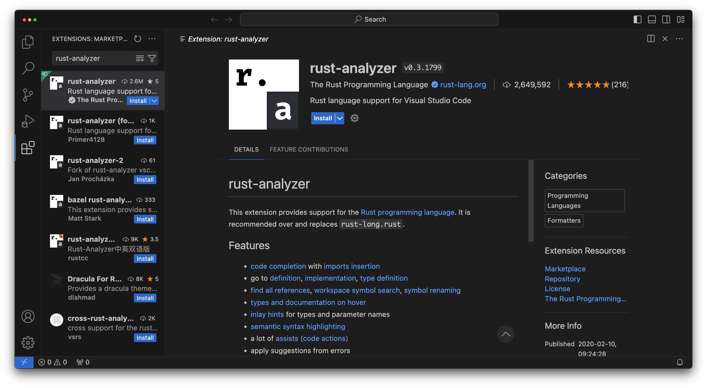
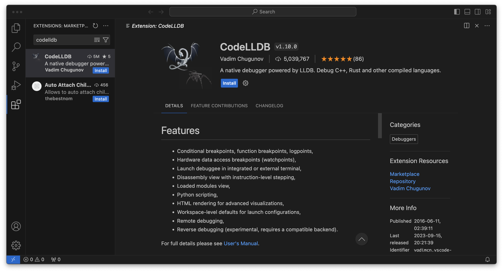

Idiomatic Rust in Simple Steps
Welcome to IRISS üëÅÔ∏èü¶Ä
Rust has a reputation of being difficult to learn, certainly it was when I learned back in 2017. While its true that there remain some rough edges, the language is now easier to pick up than ever, and in many ways is much easier than a lot of more established languages.
The goal of this series is to help you go from no knowledge of Rust to understanding how Rust is written as quickly as possible.
This book is the written version of a companion YouTube series
If you spot a problem with this guide (I'm only human üòÖ), please file an Issue or even a PR on the project repository and I will be incredibly grateful. I certainly don't know everything about Rust and look forward to learning new things throughout this project.
In the meantime, you should start by deciding if Rust is definitely the language for you, and what other learning resources are available.
Why or Why Not
Why Rust
I could tell you that it's a "blazingly fast" language, that holds your hand and helps reduce bugs, that its first party tooling is second to none, that it has a mature ecosystem and an amazing community. These are all good reasons to consider using Rust for any personal or professional project. There is, however, in my mind, a singular reason everyone should consider learning Rust:
Because its fun
Seriously, Rust is my happy place. Sure it has its frustrations like any language, but when I work with Rust I feel smart, I have less horrible surprises, and I have a lot of confidence that my code will "just work", that I won't need to come back to fix bugs and if I do, I will be able to quickly understand old code, write new tests and fix any problems.
And, I'm not alone, since its 1.0 release Rust has been Stack Overflows "most loved" (now "most admired") language eight years in a row. This isn't derived from fanatics like me just saying "its great" but is the percentage of people who used the language this year, that still want to use it next year.
Why not Rust
As much as I love Rust, there is a reason it may not be the language for you... and it's a big one.
If you are specifically looking to learn a language to get a job (and you're not interested in Blockchain) Rust is not going to be a good language... for now. The irony of "professional Rust" is that Rust engineers think there are no Rust employers, and Rust employers think there are no Rust engineers because very few of us are interested in Blockchain technologies.
That said, things have been slowly changing. More businesses are picking it up due to its low cost to write, run and maintain. The main cost to adopting Rust remains the cost of training people, but there are more and more of us out there and perhaps 2024 will finally be the tipping point.
Nonetheless, right now, if you're looking for a job, better languages to learn would be TypeScript or Python.
Other Learning Resources
Its worth mentioning that there are many other Rust learning resources out there, so if this guide ends up not working out for you, or you're looking to supplement it with other sources, these are in my mind, the (other) best ways to learn the Rust.
The official book
The Rust Programming Language book is the official way to learn, and will be the most complete guide. This is how I learned the language way back in 2017 and its gotten significantly better since then. The main difference between the official book and this guide is that the official book focuses on teaching you how the language works, while this guide is focused on how the language is written, only looping back to how the language works to explain why we write it that way. This guide tries to follow a similar path to the official book and to Rustlings, see below, so it should be easy to jump between them.
Rustlings
Rustlings is a "learn by doing" guide to Rust. It works by giving you specific exercises to help you understand the language a bit at a time.
The gamification of the course makes it really fun, so I still use Rustlings to help keep myself sharp.
Rust by Example
Rust by Example does exactly what it says on the tin. It focuses on the implementation of the Rust language.
This is great to quickly look things up if you know what you want to know, however, there's some minor pseudo-anti-patterns here that if you don't already know are anti-patterns, you might be tempted to copy-paste. Don't worry though, we'll cover these here but also tools like Clippy (which we'll also cover) will be quick to point them out.
Idiomatic Rust in Simple Steps
So, why use IRISS if there are these other great resources?
Idiomatic Rust in Simple Steps lines up nicely with these other resources and can supplement them or vice versa. While the other resources focus on simply learning the language, IRISS focuses on how and why we write the language the way we do. This might seem like the same thing, but here we'll ramp up on idioms quickly so that you can understand other peoples code as well as write code that other people can understand.
This matters!
My biggest hot take of the software industry is that: Software engineers are not paid to write code, they're paid to solve problems.
The best engineers I've worked with have solved problems without writing a single line of code, and the cheapest code to maintain is the code you didn't write. Beyond this though, solving problems, even with code, takes understanding and collaboration. If when you join a team you already understand why they write code the way they do, you're going to become productive much faster.
Getting Started
In this section we'll go through:
- How to install the language tools
- How to set up your development environment
- And how to create your very first program
Getting Set Up
Mac and Linux
Before you begin, you need to make sure you have the appropriate build tools.
For Mac, make sure to run xcode-select install
For Linux, you need to install gcc via your package manage, for example, on a Raspberry Pi, you might do
sudo apt install gcc
Go to https://rustup.rs, copy the command displayed there into your terminal.
You will be given the option for customizing the installation, but we don't need to do that for now
$ curl --proto '=https' --tlsv1.2 -sSf https://sh.rustup.rs | sh
# [other information about the install appears here]
Current installation options:
default host triple: x86_64-apple-darwin
default toolchain: stable (default)
profile: default
modify PATH variable: yes
1) Proceed with installation (default)
2) Customize installation
3) Cancel installation
>
Choose 1 and wait for installation to complete. To immediately use Rust's tools now, you will need to run the command it tells you to run at the end of the installer, however, you should only need to do this once as the installer makes the changes necessary for new terminal sessions to pick up on the changes.
$ source "$HOME/.cargo/env"
Now you can check whether everything has installed properly by running cargo version and you should see something
like this:
$ cargo version
cargo 1.75.0 (1d8b05cdd 2023-11-20)
Cargo is the main tool we'll use to build and work with Rust, you will need at least version 1.75 for this tutorial.
Windows
Installing Rust on Windows is a bit more challenging, but you've got this, I believe in you.
All the important differences for Windows are explained on rustup.rs, however, I personally struggled a bit with this, so I'm laying it out here in my own words.
Windows Build Tools
The first thing we're going to need are some Microsoft build tools.
Head to https://visualstudio.microsoft.com/downloads/ and download the community edition.
The installer is the gateway to a huge number of tools and software, but we only need two things.
Click through to the Individual Components tab, and search for the following: C++ x64/x86 build tools
Select the latest version.
Next search for: Windows SDK
Select the latest version of the SDK for your version of Windows.
Finally, click install. You may get a prompt asking if you'd like to continue without workloads, which you do, so continue.
The installation itself can take a while so grab a tea or something ☕
Rustup
Once the Windows build tools are installed, head back to rustup.rs and download rustup-init.exe.
Running this will install the tools we need.
Choose the default install options.
Once complete, we can check that things have been installed correctly by opening either cmd or powershell or your
terminal of choice, and run:
cargo version
GCC (optional, but recommended)
Wait, the rustup website doesn't mention this!
I know, and you don't necessarily need to do this. However, Rust is a language that can interop with other languages.
In particular, Rust works really well with existing C and C++ libraries, however, Windows and Linux us different C++
libraries. This can be fixed by installing gcc.
Like Microsoft's build tools, gcc isn't packaged by itself, but unlike Microsoft's build tools there are many, many ways to install it.
The easiest way I've found is to install the Scoop package manager by following the instructions on their website.
Once installed, all you need to do is run:
scoop install main/gcc
You can check this worked by running gcc --version
Phew! That's it, congratulations! It took me over an hour to do this on my first attempt.
If you haven't done already, its a good idea to restart your computer before moving on.
The Development Environment
Visual Studio Code
A software developers environment is something very specific to them. Some people love vim and neovim, others like Nova, I'm personally a big fan of IntelliJ. If you've already found the tools for you, there's no wrong answer here, use whatever makes you happy.
If you're new to software engineering though, and not looking to fork out potentially hundreds of dollars on tooling, I recommend Visual Studio Code. It's free, is perhaps the most widely used and supported editor today, and can be greatly extended through plugins.
It's the editor I'll be using throughout this series as I believe it will be the most familiar to people.
To get started head over to https://code.visualstudio.com/ and download the right version for your device.
After installing it, we will need some plugins to work with Rust. To get to extensions, open VSCode and press the extensions button in the sidebar (by default the sidebar is on the left).
Extensions
rust-analyzer
Rust Analyzer will provide the bulk of language support that we'll need. It'll give us auto complete, syntax
highlighting and symbol editing that will just make our lives a lot easier. Search for rust-analyzer in the search
bar at the top of the extensions tab and click install.

CodeLLDB
As we learn any new language, one of the most important things for us to be able to do is see what's actually happening. CodeLLDB allows us to pause a program while its running and see what its doing. This lets us check that a program is doing what we think its doing.

Even Better TOML
The Rust ecosystem makes heavy use of the TOML file format. We'll talk about this more much later on but now is a good time to pick up this extension.

crates
Rust developers share code through a mechanism called Crates. This extension will help us keep any crates we depend on up to date. We won't be using crates for a while, but it's good to grab now.

Hello World
Now that we're finally set up, lets create our first program. As is tradition, our first program is simply going to
print the words Hello, world!.
Creating a new Rust project
Open Visual Studio Code and open the terminal.
Pro Tip: If you're new to Visual Studio Code and you want the editor to do something (say, for example, open a
terminal), hold Ctrl + Shift and press P (or Cmd + Shift and press P on Mac). You can then type the thing
you want to do, and it should show up in the list. Sometimes, like with Terminal, you might get a lot of results and
the one you want might need a little scroll. Normally for a Terminal you want to use it internally, so you'd scroll to
Terminal: Create New Terminal
Navigate to an appropriate location for your projects such as your home directory or my documents, depending on your system.
The easiest way to do this on Mac and Linux is to do cd ~
There isn't really an equivalent on Windows, so if you aren't sure you can instead use Explorer to open My Documents, right-click an empty space in the window, click "More Options" then "Open in Terminal"
Run cargo new hello-world, and cargo will report that it has created the project
Cargo is the program we'll use to run our rust programs as well as many of the rust tools that will help us along the way.
Now in Visual Studio Code, go to File -> Open Folder and navigate to the hello-world folder we just created.
You can see that cargo has created some files for us. We're going to talk about the cargo files later but for now,
head into the src directory and open main.rs
You can see the file has already been created with the following code:
fn main() { println!("Hello, world!"); }
Before we dive into this further, lets run the program.
Open the terminal again, as we did before. This time use cargo run to run our program, you should see something like
the following:
$ cargo run
Compiling hello-world v0.1.0 (D:\Documents\hello-world)
Finished dev [unoptimized + debuginfo] target(s) in 0.33s
Running `target\debug\hello-world.exe`
Hello, world!
Well, that was easy üòÖ
You'll find the Rust community has put a lot of effort into making Rust as easy as possible to learn and use.
Anatomy of Hello World
Let's talk about hello world.
The first line fn main() describes a function (fn) called main. Functions are a useful way to group up a bit of code
to be called elsewhere. We'll talk more about the power of functions and when to use them in a future chapter. For now
all we need to know is that the main function is called when the program starts, so any code we put in here will run.
At the moment, the only line of code is println!("Hello, world!");. A lot of engineers might assume this is how we
call functions in Rust, and that println is the function name. However, the exclamation mark actually tells us this
is a macro. Macros are very powerful and can do much more than functions, however they are an advanced topic, and we
won't be creating our own until much later. We will be using pre-written macros a fair bit though.
println! will write what it's given to the console.
Running and Debugging Rust
Before we end this section, I want to quickly set up one of the most powerful tools we have thats going to help us learn incredibly quickly.
First let's make a quick change to our program, by adding a variable with our name, and then saying hello to ourselves instead of the whole world
fn main() { let name = "Daniel"; println!("Hello, {name}!"); }
Fun fact, Rust uses utf-8 strings when written like this, so don't worry if your name can not be properly represented in American English characters. For example, I might naively write my cats name like this:
#![allow(unused)] fn main() { let name = "ユキ"; }However, this won't actually output correctly unless your system is set up to display it (thanks Windows).
Hover the mouse over the 3 denoting line 3 (where the println! should be) you should see a little red dot appear.
Click this dot to set a break point. When debugging code, the debugger will pause at break points allowing us to see
what's actually happening.
To debug our code press F5... and it will immediately show you an error. Don't panic! This is where CodeLLDB is going to do some magic for us. The error is because we didn't set a default run configuration, click OK and Visual Studio Code will ask if you want to generate one.
Important: Depending on your personal configuration, it may ask you want to create the configuration from. If you are asked this, click
LLDB.
Click "yes", then press F5 again, and the program will start and then pause when it hits line 3.
If you mouse over name on either line 2 or line 3, you'll see its value. Being able to see what's happening in a
running program is a programming superpower.
To let the program continue, hit F5 one more time.
Language Basics
In this section we're going to step through the language basics, attempting to cover enough to quickly move on to language idioms. By doing this, we hope that people won't end up with a lot of bad habits (like some of us did) as the "easy" bits that help you get started end up overly ingrained in your memory.
Memory
When you create a program, how does it remember things? In the last chapter, we created a variable and put our name inside it. Where was our name stored?
Jumping into memory already might seem unusual. A lot of programming tutorials in any language would like to get you writing code before you have to worry about such things. However, I think right off the bat we have a wonderful opportunity to talk about how memory works in Rust and, because memory is so important to how Rust works, I think this will simplify everything you learn going forward.
We're going to make an extremely simple program and use that as the basis to explain how Rust remembers.
The Guessing Game
To learn about memory, we'll make a simplified version of the guessing game from the official Rust book. Start by opening your terminal and navigating to where-ever your creating you projects like in the last chapter, then we'll create a new project with:
cargo new guessing-game
Open the project in you editor and open the file src/main.rs. As before we'll see the same "hello, world" program:
fn main() { println!("Hello, world!"); }
As we step through this tutorial, if you mouse over the code examples, you can see some buttons that will let you
- ⎘ Copy the example to your clipboard
- ⏵ Run the example via rust playground (where possible)
- üëÅ Show any code I've opted to hide for clarity, try this on the next block
Let's quickly change our hello world message to something that welcomes us to the game.
fn main() { println!("Welcome to the guessing game!"); }
And ask the user to do something:
fn main() { println!("Welcome to the guessing game!"); println!("I have chosen a color red, green or blue, can you guess which?"); }
Because we've used a second println! this will appear on a new line. The new line actually comes at the end of the
println! so if you want to make both sentences appear on the same line, you can change the first one with print!
(no "ln"). Try it out and see what else you might need to change!
Let's pick a color that the user has to guess. To begin with we'll just hard code one value, later we'll make it choose randomly. I'm going to choose blue, but you can choose whatever you like:
fn main() { let actual = "blue"; println!("Welcome to the guessing game!"); println!("I have chosen a color red, green or blue, can you guess which?"); }
Before we move on, I want to call out the "type" of the data we've just created.
We're going to talk about types in the next chapter, but I want to quickly point some things out. The type of data describes a number of things but mainly, how that data is represented in memory and how it can be used. For example, is the data a string (like "blue"), or a number, or a boolean that represent true or false.
If you're using an editor that shows type information you might see that next to actual its written something like
: &str, eg:
This means that the variable actual contains a "reference" (represented by the &) to a "string slice" (represented
by str). We'll talk about why the variable only contains a reference and not the data itself later. You could, if you
like, manually write this let actual: &str = "blue" yourself, however, it's generally better to let Rust infer the
type, and only write it yourself if either Rust is unable to decide (because it could be multiple things) or if you want
to use something different.
This is why it's a good idea to make sure whatever you're writing Rust in shows you what
Rust has decided a type is. For example, the default integer type in Rust is i32 (don't worry, we'll explain this
later), however your program might have specific requirements that make it sensible to annotate the type so that Rust
uses a u64 instead. (Yes, Rust has many different types for representing numbers, we'll worry about that next time üòä)
Anyway, back to the program: let's output the color. This will end up being the last thing in the program, but we can use this to check everything is working ok:
fn main() { let actual = "blue"; println!("Welcome to the guessing game!"); println!("I have chosen a color red, green or blue?"); println!("The color I chose was {actual}"); }
We can run this now and see that the color to be guessed was entered.
Great... but not much of a game is it.
In order to get some user input, we need to read from the terminal. Before we tell the user what the actual color was lets ask them to guess
fn main() {
let actual = "blue";
println!("Welcome to the guessing game!");
println!("I have chosen a color red, green or blue");
println!("Enter your guess: red, green or blue");
println!("The color I chose was {actual}");
}We're then going to read a line of input from the user. When the program runs in the terminal, we can ask the user to
type things, regardless of whether you are on Windows, Mac or Linux, this input is passed into the program through a
stream of data called stdin (standard in).
Rust comes with a "standard library" (the name is unrelated to the stream) that we can access as a module called std.
I pronounce this S T D, but you may also here people call it "stud". Modules in Rust are a way of grouping up other bits
of code such as functions, data types and even other modules. We'll talk about them more in a future lesson. Inside of
this is another module called io that deals with input and output. If we weren't using the println! macro, this is
where we'd have to come to write things out to the terminal too, via a stream called stdout (standard out).
For completion's sake I should mention there is one more stream called
stderr(standard error). This is also an output stream that we can use to separate "good" output that is relevant to the normal use of the program to really any other kind of output, whether that be errors or just information not directly relevant to the main output.For example, on Mac and Linux, if you use
cargo run 2> /dev/nullto run your program, you'll see that you lose the messages about your program being compiled because we redirected stderr (stream 2) to the void of/dev/null, and Cargo sensibly decided that it's output is not relevant to your programs normal outputOn Windows the same can be achieved in cmd using
cargo run 2> nul(note, only one l in nul), or in powershell withcargo run 2> $null(two l's this time and a dollar, no idea why it's different)
stderris really useful for things like logging, and we'll talk more about streams in the future, but if you want to quickly write something to this stream you can useeprintln!andeprint!the same way we useprintln!andprint!
So, we get stdin using std::io::stdin(), this is a function call (we'll talk about functions in a couple of chapters),
that returns something called a "handle" that we can use for temporary access to the input stream.
The double colons just tell Rust that you're looking for something inside a module. We'll cover modules in detail later, including how, why and when to make your own, as well as better ways to access them, but since we only need to write this line once, this is the easiest way to do it.
We could store the result of stdin() in a variable, however, we only use this once, and then we're done with it, so,
off the back of the function call, we can call immediately call .lines(). This is a method (a special type of function
that belongs specifically to some other thing, in this case it belongs to the handle for stdin). In the example below
I've put this on a new line for legibility, but you don't need to do this.
.lines() returns an iterator, allowing us to iterate (step through) each line one at a time. We get the next line by
calling .next() on the iterator.
If we add this all in our code looks like this
fn main() {
let actual = "blue";
println!("Welcome to the guessing game!");
println!("I have chosen a color red, green or blue");
println!("Enter your guess: red, green or blue");
let input = std::io::stdin()
.lines()
.next()
.expect("No input was read")
.expect("There was an error when reading the input");
println!("Your guess was {input}");
println!("The color I chose was {actual}");
}Wait wait wait, what are those expects about?!
expect() is, I would say, the second-worst way you could handle something going wrong in your program. This is not
"idiomatic" and you absolutely should not use this in anything except the most throw away software as it will
immediately cause the program to stop and spew a lot of information at the user. In the future we'll talk about things
going wrong and how to better handle them, however, as this program is just for you, I think you'll cope for now. üòä
That doesn't explain what these lines are doing, or why there are two of them though. The reason for this is that there
are two possible ways .lines() might not work.
The first expect then:
.expect("No input was read")When we call .next() on any iterator, there either is something next or there isn't. In some languages this
might return either the data you expect, or a null value. For example, it might return "red" or null. "red" is a
string but null is not, what happens if you pass this to a function that expects a string? This means you must either
manually check the thing returned was null, or don't check, and risk your program breaking at some other point.
Obviously many people think this ambiguity is bad, including Tony Hoare, arguably the "inventor" of this behavior, who
has called it his "billion-dollar mistake".
Rust does not allow you to use types like this interchangeably, i.e. data can not be a string or null as these types are
not compatible. In Rust, we use a kind of container type to get around this called Option. Importantly, when a
function returns an Option type you, the programmer, must check to see if it contains something, and then extract the
thing if it's there. There are a number of ways to do this and .expect is one of the worst ways to do this (we'll talk
about better ways in the future), as it will attempt to extract the data if its there, or stop the program abruptly with
the provided error message if it's not.
For the time being we're going to just say we can't deal with it not being there, we don't want to continue running the
program, and we want the program to stop. We use .expect("message") to say, if this is nothing, we are giving up,
stop the program and print our message (plus a few other useful bits) to the stderr (see above). You can see why this
behaviour is typically undesirable but that we can allow it for this example, at least until we learn how to deal with
Option properly.
The second expect is a bit different:
.expect("There was an error when reading the input");If the Option we got from .next() contains something instead of nothing, it still doesn't necessarily mean we read
the users input correctly, reading data from stdin is itself fallible.
Fallibility, the nature that something may go wrong, in programming is another thing we've traditionally handled very badly. A common way to deal with this in other languages is to stop executing and "throw" an error. The problem with throwing errors is that it breaks the flow of execution, the next thing to get executed is not obvious, it's going to be wherever the error is "caught"... if it's "caught". Sometimes you may not even realise that some code you've written could throw an error because you've called someone else's code, and they didn't make it obvious that their code could fail.
Rust does away with this with another type called Result. If your function can fail, it must return a Result type.
Like with Option, Result is its own type that contains either the data we wanted, or an error.
Again, the idiomatic way to handle this depends on what you're trying to do; is the error recoverable (could the program
continue despite the error), and how do we want to report the error back to the user. Using expect will, again, cause
the program to immediately stop with the error message and other bits sent to stderr, and again, you can see why this
is typically extremely undesirable.
But anyway, we now have a working program, there is an actual color, the user guesses a color, and we print both to the screen.
Memory
You might have spotted that actual and input have different types (don't worry if you didn't, when you added all the
code associated with getting the input, it added a lot of types, so you could easily miss it).
Importantly though, actual is a &str, which is a reference to a string slice. However, input is a String.
What's the difference?
The Stack
To understand this, we have to talk a little bit about how our program runs.
In Rust (and many languages in fact), programs are made up of functions; small, independent bits of code. In our
program we only have one function for now, which is main, but this still applies. When we run our program, the
operating system assigns some memory for the program to run in, called "the stack".
Aside: Some people like to think about the stack going from top to bottom because the memory address go down like lines on a page (or lines of code), but most people talk about it going from bottom to top because we talk about putting things on the stack which is easier to visualise. It's an abstraction, so it doesn't really matter. I'm going to explain it from bottom to top as I think this makes visualising the manipulation of the stack easier.
Each time we run a function we create a new block of memory on the stack that's the exact size of everything that function needs to remember. So, for example, if our function has three numbers in it, then our new block on the stack will be exactly the size of required to store those three numbers.
In the example above we're representing the memory of the stack. When the program is initialized the operating system
assigns some memory for the stack, then, all the memory required to store all the variables in main (which it in this
example is 4 addresses) is blocked off. Then, as main runs, it calls another function, f1 which requires two
more addresses. f1 then calls another function which requires 3 addresses worth of memory, f2. Once f2 has
finished, it is removed from the stack, then f1 finishes, and it too is removed from the stack. Finally main comes
to an end and our program closes and all memory is freed.
You can see that the amount of memory a function needs is very important, but... how long is a piece of string?
Our three colors, "red", "blue" and "green" are 3 characters, 4 characters and 5 characters respectively. How much memory should we assign on the stack? What about the users input? Is that 3 characters, 4 characters or the complete works of Shakespeare? How much memory each function will require is decided at build time, and we don't know what the user is going to write until later.
Anything that lives inside a variable goes on the stack, and anything on the stack must be of known size when the program is compiled. In Rust, we have a specific name for this "Sized". Things like numbers, characters, booleans and even tuples are Sized, but a string of characters is not, it is "Unsized".
So where does our data live if not inside the variables?
Returning to the top, you'll remember that our actual variable has the type &str which is a reference (&) to a
string slice str. A reference is something that points to where some actual data is, this is very handy when you want
to tell something about some data without having to give it the specific data. When you manually write a string between
double quotes "like this", it's called a "string literal". This applies to our variable as well as every time we've
used in a println!. A "string slice" can be any part of a string stored somewhere else, so it can be characters 0 to 3
(b, l, u, e) of our string literal that's stored in the executable.
The Heap
Our input, however, is very different, we don't know what's going to be in here at all at compile time. In order to
store the data that the user gives us, we still need to put it in memory somewhere, but it can't live on the stack.
Instead, we use another kind of memory called "the Heap". At any point while the program is running, we can ask the
operating system to allow us to access some amount of memory. We still need to know how much memory we need, but now we
only need to know how much memory at runtime. This memory comes from the Heap. In the heap, we can store "Unsized" data
(as well as Sized which can be useful under certain circumstances) and, then because everything about the location of
that data is Sized, we can store it in a variable on the stack. String does not contain the data, but does know where
the data is.
Some other important differences between the Stack and the Heap. The Stack is more limited in size, you should try to avoid storing large amounts of data here (even if the size is known). Creating memory on the Heap takes longer than creating it on the Stack, this is because you have to communicate your requirements to the operating system and wait for it to get back to you with that allocation. This doesn't take too long, but one thing to watch out for is repeatedly increasing the amount you need. If you create a string of a certain size, then ask for more memory (eg, by appending more data to it), then in the background Rust will ask the operating system for a new, larger block of memory, then it has to copy the old data to it, before adding anything else on to the end.
This is all great, but why is one of them &str and one of them String if both of them are just references to data
stored elsewhere? This actually comes down to "ownership". We'll go into ownership in more detail later in a later
chapter but at a very high level a reference to a string slice does not own the string data. Ownership allows full
control over the data, and most importantly, it tells the program when to clean up the data. When an &str is no longer
needed, the reference is cleaned up, but the data still exists. When a String is no longer needed, not only is the
reference cleaned up, but memory is returned to the operating systems control, freeing it up for something else to use.
It's important to note though that &str and String are different types. The data they reference is formatted the
same way in memory, but they are not interchangeable. Later, when we discuss functions, you'll see that if a function
requires a String you can not pass it a &str and vice versa. You can, however, trivially go from one to another.
fn main() { let name = "Daniel"; // This is a &str pointing at a sequence of bytes in the executable let name_on_heap = String::from(name); // This requests memory from the operating system then copies "Daniel" into it let name_ref = name_on_heap.as_str(); // This is a &str pointing to a sequence of bytes on the heap }
That said, they can be compared to each other (this actually goes for any data type in Rust so long as someone has told
Rust how to do the comparison, which for &str and String, someone has).
Let's return to our program one last time. Below I've written out the full program and added an if/else statement.
if/else is a form of control flow. We put an expression inside the "if" that evaluates to either true or false, in
this case we're asking if input is equal to actual. If it is, then the execution continues inside the if block
(the bit between the curly brackets), if it's not true, then instead execution continues inside the else block.
fn main() {
let actual = "blue";
println!("Welcome to the guessing game!");
println!("I have chosen a color red, green or blue");
println!("Enter your guess: red, green or blue");
let input = std::io::stdin()
.lines()
.next()
.expect("No input was read")
.expect("There was an error when reading the input");
println!("Your guess was {input}");
println!("The color I chose was {actual}");
if input == actual {
println!("you win!");
} else {
println!("you lose!");
}
}To Review:
Today we learned specifically about the Stack and Heap:
-
The Stack is where variables live, data must be of known size at compile time (Sized), but access is very fast.
-
The Heap is where we can store things regardless of whether we know their size at compile time (Sized and Unsized). We can store large amounts of data here but getting access to this memory initially is a tiny be slower.
-
You can reference data with
&if you don't want ownership of the data, but you do want to access it.
We also learned a bit about Option and Result which we will go into more in the next chapter, and future chapters
too.
Finally, we learned that we can control the flow of execution with if, however, this isn't the only way we can effect
the flow, and we'll talk more about this in a couple of chapters.
Next time we're going to look more at data types; what the basic types are, how we create new types, and how we can merge types together.
Bonus
You don't need to do this but if you want to make your actual value random(ish) and turn this into a proper game,
then you could do it like this:
fn main() {
let colors = ["red", "green", "blue"];
let time = std::time::UNIX_EPOCH
.elapsed()
.expect("Call the Doctor, time went backwards")
.as_millis() as usize; // We only need the least significant bits so this is safe
let actual = colors[time % colors.len()];
println!("Welcome to the guessing game!");
println!("I have chosen a color red, green or blue");
println!("Enter your guess: red, green or blue");
let input = std::io::stdin()
.lines()
.next()
.expect("No input was read")
.expect("There was an error when reading the input");
println!("Your guess was {input}");
println!("The color I chose was {actual}");
if input == actual {
println!("you win!");
} else {
println!("you lose!");
}
}First we create an array of string slices for each possible value. Arrays are of known size at build time, for example, this one contains three string slice references, therefore its size is 3x whatever the size of a reference is. This means it's Sized, therefore does exist on the stack. We'll talk more about dynamic (therefore Unsized) collections in the next chapter.
To fake randomness we're going to take the time at the Unix Epoch (the 1st of January 1970) and find the Duration of
time that has elapsed since then. Asking how much time has passed since another point in time is fallible because you
might be asking about a time in the future, this means we have to deal with a Result. This shouldn't ever actually
return an error, but even when you're absolutely sure, there's no harm leaving a little message in the .expect() for
anyone else who happens to be looking at the code.
.as_millis turns the duration into a 128bit integer (u128), but collections (like our array) are index with a
usize. The exact length in bits of a usize depends on the target system you're building for (usually 64bits but not
always). Because 128bits is longer than 64bits we need to shrink it down. as usize will truncate the most significant
bits. This can mean your number changes, but we don't actually care for our purposes, we just want a nice big number
that is different each time we run the program. I left myself a comment (using // you can write things that aren't
code), so that if I wonder why I did this in the future, I'll know.
Finally, we pick a random color from our colors array by dividing the time in milliseconds since the 1st of January 1970
by the length of the array (3) and getting the remainder. You can do all of this with the remainder % operator. This
gives us a number between 0 and 2 inclusive, so we use that number as the index in our array using the square brackets.
This leaves us with one of the string slice references from the array, which one will depend on the exact time when you run the game.
⚠️ Important: In some languages
%is the modulo operator, in Rust it is the remainder operator.
Data Types
In programming a Type describes what kind of data or values can be used in a particular circumstance.
In Rust, we use Types to describe variables, parameters, properties or anywhere else you can have a value, so that the compiler knows what the data at that point will look like inside the running program, and how it will behave. This can include how the where in memory the data lives, how it's represented in memory, and what functionality can be assigned to the data (though we'll cover that last part in the upcoming Functions chapter).
Primitive Types
Primitive types are effectively the building blocks of all other types.
I think this is an early point in learning Rust that scares off a lot of potential new Rust engineers. You see, Rust has a lot of primitive types.
I'm going to show this to you now, but I don't want you to worry about it. You, whoever you are dear reader, have already achieved things more complicated than learning this üôÇ
So, are you ready to see something terrifying that long before the end of the chapter you're going to have a complete handle on?
| types | 8bit | 16bit | 32bit | 64bit | 128bit | memory width |
|---|---|---|---|---|---|---|
| unsigned integers | u8 | u16 | u32 | u64 | u128 | usize |
| signed integers | i8 | i16 | i32 | i64 | i128 | isize |
| floating points | f32 | f64 | ||||
| characters | char | |||||
| booleans | bool | |||||
| string slices | &str |
This is how many primitive types there are in Rust! And yes, as scary as it is, you will completely understand this in just a few minutes!
First and most importantly, forget the above, there's really only five type categories that we actually care about:
| types |
|---|
| integers |
| floating points |
| characters |
| booleans |
| string slices |
We'll go over each of these individually, explain how they work, their variations and what you might use them for.
Before we do, lets very quickly cover binary.
Binary Primer
Don't panic! No one is expecting you to learn to count in binary. Counting in binary is fun, but pretty useless. üòÖ
All I want to do is show you how things are represented in memory because it's going to make all those Rust types make a lot of sense!
Humans (mostly) count in base 10. That's numbers going from 0 to 9. You can imagine numbers as a series of columns, where each column represents how many 1s, 10s, 100s, etc there are in the number.
For example, the number 123 contains one lot of 100, two lots of 10, and three lots of 1
| Columns: | 100 | 10 | 1 |
|---|---|---|---|
| Count: | 1 | 2 | 3 |
When we add numbers to the columns, if the column goes over 9, then we change it back to 0 and add 1 to the next column along.
So, if we add 1 to 9, it goes to 10,
| Columns: | 10 | 1 |
|---|---|---|
| 1 + | 0 | 9 |
| = | 1 | 0 |
19 goes to 20
| Columns: | 10 | 1 |
|---|---|---|
| 1 + | 1 | 9 |
| = | 2 | 0 |
and 99 goes to 100 because the roll-over from the right most 9 adds to the next 9 also causing it to roll over.
| Columns: | 100 | 10 | 1 |
|---|---|---|---|
| 1 + | 0 | 9 | 9 |
| = | 1 | 0 | 0 |
This counting system is called base 10 as each of those columns is 10 raised to the power of which column it is, starting at 0:
- 10^0 = 1
- 10^1 = 10
- 10^2 = 100
- 10^3 = 1000
- etc
Eg:
| Column number: | 3 | 2 | 1 | 0 |
|---|---|---|---|---|
| As power: | 10^3 | 10^2 | 10^1 | 10^0 |
| Column value: | 1000 | 100 | 10 | 1 |
Electronics, and by extension computers, can only really cope reliably with things that are on or off though. How do
you count with only on or off? Well, what if instead of having ten possible values in each column (0-9 or base 10), we
only have two (0-1 or base 2). This is binary.
In binary our columns are a bit different:
- 2^0 = 1
- 2^1 = 2
- 2^2 = 4
- 2^3 = 8
- etc
So if we want to represent the number 13 in base 2, we can see it contains one 8, one 4, and one 1 (8+4+1 = 13). If we mark those columns as one's and the others as zeros we get:
| Columns: | 8 | 4 | 2 | 1 |
|---|---|---|---|---|
| Count: | 1 | 1 | 0 | 1 |
Sometimes when we want to write something in binary and be explicit that that is the system we're using we might write:
0b1101. The 0b at the start makes it clear that a number like 0b1101 represents "thirteen" and not "one thousand
one hundred and one.
Each 1 or 0 is a binary digit, which is where we get the term "bit".
Eight bits is a byte, and can represent the numbers from 0b0000_0000 (zero) to 0b1111_1111 (two hundred and
fifty-five, again, I'm not expecting anyone to be able to read this). Btw, I'm using an underscore as a
spacer between numbers to help legibility, this also works in Rust, as does the 0b notation!
#![allow(unused)] fn main() { let min_byte: u8 = 0b0000_0000; let max_byte: u8 = 0b1111_1111; println!("min_byte: {min_byte}"); // 0 println!("max_byte: {max_byte}"); // 255 }
The reason why a byte is eight bits has a lot of history, but it basically comes down to character encoding: with 7 bits, you can represent 127 characters which covers english lowercase, uppercase, numbers 0-9, various whitespace and punctuation, and still have 1 bit left over for simple error checking.
As a total aside, as a software engineer, you're very likely to also see number written in hexadecimal (base 16). This is because hexadecimal, is really nice when working with bytes. One byte (8 bits) perfectly maps to two hexadecimal digits. Hexadecimal digits go from 0 to 15, but are represented as 0-F (ie: 0, 1, 2, 3, 4, 5, 6, 7, 8, 9, A, B, C, D, E, F).
0xFis 15, and so is0b1111. The number 255 is much easier to write as0xFFthan0b1111_1111. This0xnotation also works in Rust.
Integers
Now that you've had that primer on binary, I bet those 12 different integer types are starting to make a lot more sense!
The most basic number type in Rust is the u8. This is an unsigned integer (represented by the u) that is 8 bits in
length. Unsigned means that the number can only be positive (it does not have a negative sign). You might have already
guessed, but this is one byte, and can hold the numbers 0 to 255. A byte like this can be used for all sorts of things,
though one common example is as part of a color. We often represent colors as 8 bits of red, 8 bits of green,
8 bits of blue and sometimes 8 bits of transparency.
i8 is an integer that can represent both positive and negative numbers (i.e. it's signed). It also only uses 8 bits
of data but in order to represent a number, however, instead of going from 0 to 255, it goes from -128 to 127.
You never need to know this, but, if you're interested in the mathematics of how it does this, it uses a method called two's complement.
This, however, is complicated, and we don't think like computers. The easiest way to think about it is the left most
column is the negative version of itself, and all other numbers are the same. So, the number -125 can be represented as
0b1000_0011.
| Columns: | -128 | 64 | 32 | 16 | 8 | 4 | 2 | 1 |
|---|---|---|---|---|---|---|---|---|
| Count: | 1 | 0 | 0 | 0 | 0 | 0 | 1 | 1 |
ie, the number contains one -128, one 2 and one 1, adding (-128 + 2 + 1) them is -125.
So that's u8 and i8, and now you've probably guessed that for all the other integer types;
umeans it can only be positiveimeans it can be positive or negative- the number after is how many bits are available to the number
Now we can build up a little table to show the minimum and maximum of these types:
| type | min | max |
|---|---|---|
| u8 | 0 | 255 |
| i8 | -128 | 127 |
| u16 | 0 | 65,535 |
| i16 | -32768 | 32,767 |
| u32 | 0 | 4,294,967,295 |
| i32 | -2147483648 | 2,147,483,647 |
| u64 | 0 | 18,446,744,073,709,551,615 |
| i64 | -9,223,372,036,854,775,808 | 9,223,372,036,854,775,807 |
| u128 | 0 | 340,282,366,920,938,463,463,374,607,431,768,211,455 |
| i128 | -170,141,183,460,469,231,731,687,303,715,884,105,728 | 170,141,183,460,469,231,731,687,303,715,884,105,727 |
Wow, those numbers get big fast!
There's still two types missing though; usize and isize.
In this case, the size is also acting as the number of bits, however, unlike the other integer types, the size of
size is variable.
Rust is a compiled language, meaning that the code you write in Rust is transformed into instructions that a CPU can
understand. CPUs are all different, but they typically follow some given "architecture". For example, if you're
reading this on a Windows or Linux desktop or an Intel Mac, the architecture of your CPU is probably x86_64. If
you're reading this on an "Apple Silicon" Mac or a mobile phone, then the architecture is probably arm64.
A quick aside, the world of CPU architecture is a bit of a mess so
x86_64may also be referred to asamd64as AMD were the designers of the architecture, but it was designed to be backwards compatible with Intel'sx86architecture. Similarlyarm64is also sometimes referred to asAArch64.
When you compile Rust it will compile into an instruction set for the architecture your machine uses, though you can also tell it what instruction set to compile for if you want to build it on one architecture but run it on another.
x86_64 and arm64 are both 64bit architectures, so when you build for these machines, the size in usize and
isize becomes 64. However, if you were to compile for, say, a Cortex-M0 chip, then the instruction set would likely
be Thumb-1 which is 16bit so the size in usize and isize becomes 16.
Which integer is right for you?
You might think the obvious thing to do would be to use the largest possible number, for example, you can fit pretty
much every whole number you could possibly need into i128, so why use anything else?
There's two things to think about, first, what is the intended use of the number and, second, what is the architecture of the machine you're running on?
In software engineering, a number is never just a number, it represents something. As we mentioned earlier,
colors are often (but not always), represented as 0 to 255 for each of red, green and blue. This means that a u8 is
the best way to store these. If you combine those three colors with another 8 bits for transparency (alpha), then you
have four lots of u8 which can be represented as a u32.
u8 is also a good size for representing a stream of unicode characters, which is where we get UTF-8, the default
encoding for Rust strings.
For larger numbers though, you still may not want to use the largest. While you can use integers that are wider than the
architecture that you're running your program on, like using a u128 ion a 64 bit machine, mathematics with those
numbers will be slower. The CPU can only process so many bits at once, so when it has numbers larger than that, it has
to do multiple rounds of processing to achieve the same results as it might have done if those numbers were stored in
smaller integers.
You might then think that the best thing to do is use a usize or isize if you don't really care about how big a
number can get, and that's fine, and I often do this, but now you have to bear in mind that the behaviour of your
program may no longer be consistent on different machines!
By default, when you write an integer and store it in a variable, Rust will play it safe and use an i32 as it doesn't
know what you might want to do with the number, an i32 will fit inside most CPU architectures without needing extra
work and allows negative numbers.
#![allow(unused)] fn main() { let a = 10; // i32 }
However, it is more idiomatic to be intentional about the types you use. My methodology here is roughly:
- does this number represent something of a specific size like a color or ascii character, in which case, use that size
- is this number going to be used to access an array, in which case it really ought to be a
usize - am I more worried about the number slowing the program down than I am about accidentally trying to store a big number
in a small integer, and do I not care about consistency, in which case
usizeorisize - otherwise, if I'm ok potentially sacrificing speed, then an
i32ori64is fine
You can specify what type a number is either by annotating the variable you are putting it inside:
#![allow(unused)] fn main() { let a: u64 = 10; // u64 }
Or, if that's not possible because you are, for example, passing the number to a function that could take many number types, you can write the type at the end of a number:
use std::fmt::Display; fn print_value_and_type<T: Display>(v: T) { let type_name = std::any::type_name::<T>(); println!("Type of '{v}' is {type_name}"); } fn main() { print_value_and_type(10u8); // u8 }
A brief note on Type Conversion
Finally, you can convert between types in several ways, which we'll talk about more later, but I wanted to quickly go over some code from the last chapter.
In the bonus section of the last chapter, we got the number of milliseconds that had passed since midnight on the 1st
of January 1970, and then immediately used as usize:
#![allow(unused)] fn main() { let time = std::time::UNIX_EPOCH .elapsed() .expect("Call the Doctor, time went backwards") .as_millis() as usize; // We only need the least significant bits so this is safe }
The reason for this is the number of milliseconds since that date is approximately 1,710,000,000,000 and is
returned as a u128. We wanted to use this as part of a calculation to work out an index into an array. Indexes in
arrays are always usize. If you were to compile this program on a 32bit architecture, then the number of milliseconds
is greater than what would fit into a usize which would be a mere 4,294,967,295. When we use as it simply takes the
number, whatever it is and tries to cram it into the size as <type>.
When going from a larger size to a smaller size (in this case, from u128 to the equivalent of u32) it simply cuts
off the front of the data, leaving the least significant bits. You can see this in the following program (don't forget
you can run this in place with the play button):
fn main() { let time = std::time::UNIX_EPOCH .elapsed() .expect("Call the Doctor, time went backwards") .as_millis(); let time_u32 = time as u32; println!("Before conversion: {time}"); // approx: 1710771427971 println!("After conversion: {time_u32}"); // approx: 1374444163 }
Floating Points
We've covered twelve different ways of storing whole numbers in Rust, but there are only two ways of storing numbers
with decimal points: f32 and f64.
Floating point numbers are things like 0.123 or 1.23 or even 123.0. They're called floating point because the
decimal point can move around (as opposed to fixed point, where there is always the same number of fractional digits).
Your immediate thought here might be that you should use f32 on 32bit systems, and f64 on 64bit systems, but
actually this isn't the way to think about these numbers.
You see, floating points are not perfectly accurate. The bits of a floating point number are broken into parts:
- a sign (+/-)
- an exponent
- a fraction
Without going into too much detail on floating points this gives us a way of expressing very large numbers and very small numbers but not every number in between (after all, there are infinite numbers between 0.0 and 1.0).
Imagine using a floating point number to represent money. Someone comes into a store to buy a $520.04 item, and they have a coupon for $520.02. The remainder that they need to pay is 2 cents, right? Try running the next bit of code:
fn main() { println!("520.04 - 520.02 should be 0.02"); // Single Precision Floating Point let float_32 = 520.04_f32 - 520.02_f32; println!("But, using f32 it's: {float_32}"); // 0.019958496 // Double Precision Floating Point let float_64 = 520.04_f64 - 520.02_f64; println!("And, using f64 it's: {float_64}"); // 0.01999999999998181 }
Instead, if the currency you're representing uses "hundredths" for its minor currency like USD or GBP, then you can (and maybe should) represent the total number of that, eg of cents for dollars or pennies for pounds, using integers instead.
When should you use floats?
Floating point numbers are great for more abstract mathematics where perfect precisions isn't strictly necessary, for example, vectors, matrices and quaternions which are often used in applications like video games and scientific models.
As to which you should use, you might think that it comes down to architecture again, for example, a program targeting
a 32bit architecture should use an f32 and a 64bit architecture should prefer an f64... but if that's the case,
where is the fsize?
Actually, 32bit architectures are usually designed to support 64bit floating point numbers just fine, the difference
between f32 and f64 is that regardless of architecture, f32 is faster, and f64 is more "fine grain".
Characters
In Rust, we have a special type that represents a single character called char. It is always 4 bytes (32bits) in size
and can be any valid "unicode scalar value" (which is to say, any character in unicode that's not a control character).
In Rust a character is always written between single quotes, whereas string literals are always written between double
quotes.
You can use any valid unicode character whether that's the upper or lowercase english letters A-Z, numbers 0-9, white space characters, word characters from languages like Chinese and Japanese, emoji, or anything else that's a "unicode scalar value".
fn main() { let i = 'I'; let love = 'üíñ'; let yuki = '雪'; println!("{i} {love} {yuki}"); // I üíñ 雪 }
We usually use characters in relation to finding things inside strings. You can also turn strings into a collection of characters and vice versa, however its important to note that a character inside a string may not take up 4 bytes (for example, english letters and numbers only take 1 byte), however, once turned into a character, it will take up four bytes.
Boolean
There is only one boolean type in Rust: bool. It represents true or false.
Useless (but interesting!) information: In terms of how much space it uses, Rust considers it to be a single bit (an i1) however LLVM, which is a tool Rust uses as an intermediate compilation step, will use a full byte, though the value inside the byte will still be 0 for false and 1 for true.
Weirdly, if Rust got its way, the decimal value for a boolean as its stored in memory would be 0 for false and -1 for true (remember in
inumbers, the left most bit is its negative self). None of that matters, its just interesting üòÖ
Boolean values are usually reserved for if statements, and this is a good thing to look out for as finding it else
where might be a sign that the code isn't written in the best way.
String slices
Our old friend the string slice!
The type for a string slice is str, but you'll never see anything with the str type, you will usually see this
as a reference to a string slice &str, which makes it unique amongst the primitive types.
str should always be a UTF-8 string (see ⚠️ below), which means that the length of a string in bytes may not
necessarily be the same as its length in characters.
For example (don't worry about the code yet):
#![allow(unused)] fn main() { let yuki = "雪"; let byte_length = yuki.len(); println!("{yuki} length in bytes: {byte_length}"); // 3 let char_length = yuki.chars().count(); println!("{yuki} length in characters: {char_length}"); // 1 }
Its also worth remembering that when you turn a string into characters, each of those characters will take up 4 bytes of memory, even though inside the string they might have only taken up one byte (again, don't worry about the code in the next example we'll talk about it soon):
#![allow(unused)] fn main() { use std::mem::size_of_val; let hello = "hello"; let string_size = size_of_val(hello); println!("Size as string slice: {string_size} bytes"); // 5 // Convert the string slice to chars, get the size of each char, and sum them let char_size: usize = hello.chars().map(|c| size_of_val(&c)).sum(); println!("Size as characters: {char_size} bytes"); // 20 }
The size of a string slice depends on what's in it, which is why you won't see it on the stack (string slices live in either the compiled output as string literals, or on the Heap inside a String). A string slice reference is made up of two pieces of data, a pointer to where the string slice starts, and a length, both of which are of known size but depend on the system architecture.
Fun fact about that reference though: you might wonder if it's just a pointer and a length, does that mean you can have a reference to a string slice that exists inside a string slice, and the answer is: yes! Just be careful when taking a slice inside a slice to make sure that the sub slice is a valid UTF-8 string.
#![allow(unused)] fn main() { let hello = "hello"; // hell is a reference to a substring, range 0..4 is exclusive so 0, 1, 2, 3 but not 4 let hell = &hello[0..4]; println!("{hell}"); // hell }
⚠️ It is possible to create a string slice that is not a valid UTF-8 string so you should be mindful that this isn't a guarantee, but you also shouldn't make the effort to check the validity everywhere its used. It should be a UTF-8 string, but if you are constructing your own from raw data, or if there are security implications to the use of a string slice, you should be careful.
Compound Types
Arrays
Arrays are a collection of a single type. You might see arrays in two forms, either as a sized array on the stack, or as a reference to another collection (also called an array slice).
When sized, arrays are annotated with the type [T; N] where T is the type of every item in the array and N is its
size. For example:
#![allow(unused)] fn main() { let hello: [char; 5] = ['H', 'e', 'l', 'l', 'o']; }
When referenced as an array slice, you do not need to specify the size because, just like with references to string
slices, the reference not only contains a pointer to the underlying data, but also contains the size. We write this in
the form &[T] where T is the type of every item in the array.
#![allow(unused)] fn main() { let hello: [char; 5] = ['H', 'e', 'l', 'l', 'o']; // hell is a reference to a sub-array, range 0..=3 is inclusive so 0, 1, 2, and 3 let hell: &[char] = &hello[0..=3]; // This is another way of printing variables with debug that we haven't covered yet print!("{:?}", hell); // ['H', 'e', 'l', 'l'] }
You can access elements inside the array directly by using an index value between square brackets. In Rust, indexing starts at 0. So:
#![allow(unused)] fn main() { let hello: [char; 5] = ['H', 'e', 'l', 'l', 'o']; let h = hello[0]; // H let e = hello[1]; // e let l = hello[2]; // l }
Tuples
Tuples are similar to arrays in that they are a collection of items, however each item in the collection can be a different type. This adds some flexibility but also some restrictions. For example, you can iterate over each item in an array, but not a tuple.
Tuples are written between brackets, and are only considered the same type if the types inside the tuple match.
For example:
#![allow(unused)] fn main() { let char_int_1: (char, i32) = ('a', 1); let char_int_2: (char, i32) = ('b', 2); // This type is the same as the previous one. let int_char_1: (i32, char) = (3, 'c'); // This type is different }
Another difference from arrays is how you access a single item in the tuple, which you do with a dot ., followed by
the number element you want. Again, this starts from 0.
#![allow(unused)] fn main() { let char_int: (char, i32) = ('a', 1); let a = char_int.0; // 'a' let one = char_int.1; // 1 }
The Unit Type
The Unit Type is a zero length tuple () that is Rust's way to represent nothing. It is zero bytes, does not exist on
the stack at runtime, and unlike other languages with types like null or void, can not be used interchangeably with
other types.
You might use this type in conjunction with generics which we'll come to in a bit.
Structs
Structs are similar to tuples in that they are a type made up of other types. Unlike tuples they are named though. There are three types of structs, structs with named fields, tuple structs and unit structs.
Note: types like structs and enums must be declared outside of functions.
Tuple Struct
As we just covered tuples, lets quickly talk about tuple structs. They look a bit like they're simply "named" tuples, and indeed they can be accessed the same way:
struct Vector3(f64, f64, f64); fn main() { let vec = Vector3(10.0, 2.0, 3.33); let ten = vec.0; // 10.0 let two = vec.1; // 2.0 }
Similar to tuples, this kind of struct can be accessed with a . and a numbered value, however unlike tuples,
structs have a concept of "visibility". Unless explicitly marked as public the fields of a struct are only accessible
in the module in which it is defined, or its descendents. We'll talk more about modules later, however, to make the
fields of a struct public, you can simply mark them as pub.
#![allow(unused)] fn main() { struct Vector3(pub f64, pub f64, pub f64); }
You don't have to make every field public though, if you'd some parts of the struct to be public and others to be private.
Named Fields
Named fields work pretty much the same as tuple structs except instead of having a numbered field, its named. You
can access the named field with a . and the name.
struct Cell { x: u64, y: u64, alive: bool, } fn main() { let cell = Cell { x: 10, y: 123, alive: true, }; let is_alive = cell.alive; // true }
Unit Structs
Unit structs are an interesting case that you probably won't find much use for until we get into more advanced Rust and some of the cooler patterns and idioms that we use. A Unit struct has no value, it only represents a type.
struct ExampleUnitStruct; fn main() { let unit_struct = ExampleUnitStruct; }
Unit Structs have zero size and don't exist on the stack at runtime, but they can have functionality added to them through Traits, or be used as markers.
Enums
Enums are for when you want to represent one of a finite number of possible values. For example
enum TrafficLightState { Red, Amber, Green, } fn main() { let green = TrafficLightState::Green; // let purple = TrafficLightState::Purple; // Won't compile }
Many programing languages have this concept of enums, but what makes Rust enums especially awesome is that the variants
can additionally contain values. We've already talked about two such enums Option and Result which are two of the
most important and widely used types in the entire ecosystem, and we'll talk more about them in the Generic Types
section below. As an example though, enums variants can be structured in either a tuple stype or a struct style:
enum ContrivedEnum { SimpleVariantNoData, TupleStyleData(u64, i32), NamedFields { time: i128, place: String, } } fn main() { let simple_variant = ContrivedEnum::SimpleVariantNoData; let tuple_style = ContrivedEnum::TupleStyleData(10, -20); let named_fields = ContrivedEnum::NamedFields { time: 1_710_000_000_000, place: "Here".to_string(), }; }
In terms of memory usage, on the stack an enum will take up as much space as its largest variant, regardless of which variant it actually is.
Generic Types
Generics in Rust allow the creation of entirely new types at compile time by combining types together. We've talked a bit about Option and how Rust uses it to represent Some value or None. Option is an enum with two variants, it is literally just this:
#![allow(unused)] fn main() { enum Option<T> { None, Some(T), } }
Note that after the name of the enum we have <T>. The triangle brackets express that this enum has a type (or types)
that can be decided later, the T is a marker for that type. For example, say we want to create a type that represents
either a single character, or nothing.
#![allow(unused)] fn main() { // The type of possible_character is inferred to be Option<char> let possible_character = Some('r'); // The type of no_character can not be inferred, but you can annotate it yourself let no_character: Option<char> = None; }
Normally when accessing the variants of an enum, you must use the name followed by the variant (eg Option::Some('r')),
however Option and Result are so ubiquitous that their variants are globally accessible in any rust code.
Another generic we've covered before is Result which usually represents either the success or failure of a function. It
has two types that can be decided later T, which should represent what type of data you expected to get back, and E,
which will be the type of the Error.
#![allow(unused)] fn main() { enum Result<T, E> { Ok(T), Err(E), } }
We'll talk more about functions in the next chapter, but in order to explain Result in context, the following example shows the fully described Result type as the return type of the function, which is how we'd typically use this enum, though, you wouldn't typically use a String as an Error type, and we'll talk more about that when we get to Error handling later.
#![allow(unused)] fn main() { fn function_that_fails_half_the_time() -> Result<u128, String> { // Note the return type for a function comes after -> let time = std::time::UNIX_EPOCH .elapsed() .expect("Call the Doctor, time went backwards") // We can do something cooler here but that's for another time .as_millis(); if time % 2 == 0 { Ok(time) // implicit return } else { Err("The function failed".to_string()) // implicit return } } }
When we start talking about adding functionality to types in the functions chapter, we'll also talk about how you can restrict what types are allowed to be used in generics through the use of trait bounds.
Conclusion
That is (almost) everything you need to know about types! The main thing we're still missing is ownership, but we'll come to that later. The main things to remember are:
- We have our primitive types that represent binary data. There's a lot of choice here, but that's a good thing!
- We can represent more complex types with compound types, each with its own use
- We can "fill in the blank" with compound types later using generics
- We talked a bit about two of the most common generics, Option (representing something or nothing) and Result (representing a successful value or an error)
In the next chapter we're going to talk about controlling the flow of our program with branches and loops as well as pattern matching which and expressions.
Control Flow
Programs are typically executed one line at a time (this is called flow), but we can alter what the next line is with control flow.
There are two main ways of doing this branching and looping.
Before we do that though, lets talk about two of Rusts coolest features, which will come up a lot later, patterns and how blocks are also expressions.
Patterns
In the last chapter we talked about compound types. Tuples, Structs, and Enums allow the construction of more complex data from less complex data. However, if we want to extract any of the component parts of that data we can do that!
Patterns can be used to "destructure" compound data types like tuples fairly trivially:
#![allow(unused)] fn main() { let point = (123, 456); let (x, y) = point; println!("The point was at x: {x} and y: {y}"); }
It's important to note though, that the original data will no longer be accessible if it doesn't implement
Copy:#![allow(unused)] fn main() { // This code won't compile! let point = (123.to_string(), 456.to_string()); let (x, y) = point; let this_wont_work = point.0; println!("using these variable to remove irrelevant warnings {x}, {y}, {this_wont_work}"); }We'll talk more about copy, ownership and move semantics later in the book.
Destructuring with patterns also works for Tuple Structs, however, you need to specify the name of the struct like you're doing a weird backwards struct instantiation.
struct Point (u64, u64); fn main() { let point = Point(123, 456); let Point(x, y) = point; println!("The point was at x: {x} and y: {y}"); }
The same thing also works for Structs with Named Fields:
struct Point { x: u64, y: u64, } fn main() { let point = Point { x: 123, y: 456 }; let Point { x, y } = point; println!("The point was at x: {x} and y: {y}"); }
In the above example we extract the structs named fields straight into variables of the same name as its easy and the
names were appropriate. However, it might be better in the context of your program to name them something else. Below
we've renamed x to width and y to height:
struct Point { x: u64, y: u64, } fn main() { let rect = Point { x: 123, y: 456 }; let Point { x: width, y: height } = rect; println!("The rect was {width} wide and {height} high"); }
Unfortunately, you can not extract data from Enums this way as the value of an Enum is one of a set of, not only values, but potentially subtypes or shapes or however you'd like to describe them. Take for example the humble Options:
#![allow(unused)] fn main() { let maybe_yuki: Option<char> = Some('雪'); let maybe_not: Option<char> = None; }
How can we extract a char from Option<char> if we don't know whether the variable is Some or None... well,
actually, we'll come to that soon. üôÇ
Blocks are Expressions
Before we get too deep into Rusts control flow I want to show you one of Rusts coolest features, expressions.
An expression in Rust is anything that could have a value. So, for example, a + b is an expression where we're adding
a to b which results in a value. You will also use expressions like a == b to compare whether the values of a
and b are the same, this results in a value of true or false.
Usually you might use an expression as part of an assignment or an evaluation, for example let c = a + b or
if a == b { ... }, however, Rust also allows you to use a block (code between { and }) as an expression and the
final value of that block can itself be an expression.
Here's a very contrived example:
#![allow(unused)] fn main() { let c = { let a = 3; let b = 5; a + b }; println!("{c}"); }
Some cool things to note:
aandbonly exist within the code block- the lines with
lethave semicolons - the line with the expression
a + bdoes not cwill be equal to the evaluation of the code block, which itself is equal to the result ofa + b- the code block which
cis equal to is also terminated with an exclamation
Why is this so cool? Because branches, loops and even functions all use code blocks!
Branching
If
The most basic form of branching is the if statement.
In its most simple form it's an if followed by an expression (unlike many languages this does not need to be in
brackets) followed by a code block. The expression must evaluate to a boolean, either true or false. If the
expression evaluates to true, then the code in the block will be run, otherwise it won't be:
if <expression> {
<code to run if expression is true>
}
For example, we could create an expression that evaluates to a boolean by comparing if two numbers are the same, using double equals:
#![allow(unused)] fn main() { let a = 1; let b = 1; if a == b { println!("if expression is true print this"); } println!("regardless of whether expression was true print this"); }
If you want to run some code if the expression is true, but some different code if its false, then you can extend
if with else. Here we compare if the first number is greater than the second number.
#![allow(unused)] fn main() { let a = 1; let b = 1; if a > b { println!("if expression is true print this"); } else { println!("if expression is false print this instead"); } }
You can chain if/else statements to create more complex branches.
#![allow(unused)] fn main() { let a = 1; let b = 1; if a > b { println!("a is greater than b"); } else if a == b { println!("a is equal to b"); } else { println!("a must be less than b"); } }
Remember though, code blocks, including those in if and else are themselves expressions. This means they can
effectively return their own values
#![allow(unused)] fn main() { let a = 1; let b = 1; let message = if a > b { "a is greater than b".to_string() } else if a == b { "a is equal to b".to_string() } else { "a must be less than b".to_string() }; println!("{message}"); }
Some important things to note:
- The last line of each code block has no semicolon
- When we create expressions like this, we must terminate them with a semicolon (see after the final
}) - All branches must evaluate to the same Type, even if they don't evaluate to the same value
- Doing big blocks of
if/else if/elseis a mess, there's a better way!
Pattern Matching inside if and else
There is another way you can branch with if that doesn't require a boolean expression, pattern matching.
There are two ways to do this if let ... and let ... else.
Let's go back to that Option from earlier:
#![allow(unused)] fn main() { let maybe_yuki: Option<char> = Some('雪'); let maybe_not: Option<char> = None; if let Some(c) = maybe_yuki { // This line will be printed println!("The character was '{}'", c); } if let Some(c) = maybe_not { // This line will not println!("The character was '{}'", c); } }
In the line if let Some(c) = maybe_yuki we are pattern matching on the Option, if it matches the pattern of
Some(<variable>), then we extract the contents of the Some into the <variable>. Within the block (and only within
the block), the variable c has the value from inside the Some variant of the Option.
This may be easier to observe with our own enum type. Imagine the following:
enum Vector { Two(f32, f32), Three(f32, f32, f32), } fn main() { let v = Vector::Three(3.0, 4.0, 5.0); if let Vector::Two(x, y) = v { // This line will not be printed println!("The 2D vector has the magnitude '{}'", (x*x + y*y).sqrt()); } if let Vector::Three(x, y, z) = v { // This line will println!("The 3D vector has the magnitude '{}'", (x*x + y*y + z*z).sqrt()); } }
This example is a little contrived, there are better ways to do this.
You can also do the opposite, branch if the pattern does not match, using let ... else. The important thing to note
here is that execution can not continue after the code block, you must exit the current flow, whether thats returning
from a function or breaking from a loop
#![allow(unused)] fn main() { fn some_function() { let maybe_yuki: Option<char> = Some('雪'); let Some(c) = maybe_yuki else { // This code is executed if the maybe_yuki was None // We must exit from the code here, as we can not go back to the normal execution return; }; // From this point forward, the contents of the Option has been extracted into the variable `c` println!("The character was '{}'", c); } some_function(); }
Match
This pattern matching stuff is really handy, right?!
Well the creators of Rust thought so too, in fact, they made a whole control flow mechanism around it!
match is a bit like if in that it can branch, and act as an expression. However, match can do a lot more than
if, it will match against multiple possibilities, allows match guards for fine grain control of pattern matching, and
its exhaustive, meaning that a match must deal with every possibility.
Lets look at our Vector example again:
enum Vector { Two(f32, f32), Three(f32, f32, f32), } fn main() { let v = Vector::Three(3.0, 4.0, 5.0); match v { Vector::Two(x, y) => println!("The 2D vector has magnitude '{}'", (x*x + y*y).sqrt()), Vector::Three(x, y, z) => println!("The 3D vector has magnitude '{}'", (x*x + y*y + z*z).sqrt()), } }
First of all, you can see that this pattern is much cleaner than having a lot of if lets. We're matching against
the variants of an enum, and can immediately extract the contents from each variant. We could also use match as an
expression:
#![allow(unused)] fn main() { enum Vector { Two(f32, f32), Three(f32, f32, f32), } let v = Vector::Three(3.0, 4.0, 5.0); let magnitude = match v { Vector::Two(x, y) => (x*x + y*y).sqrt(), Vector::Three(x, y, z) => (x*x + y*y + z*z).sqrt(), }; println!("The vector has the magnitude '{}'", magnitude); }
(This gets even more exciting when we get into functions)
What happens if we add another variant to the enum though? Well, that match statement will see that not every case is
handled, and cause an error.
enum Vector { Two(f32, f32), Three(f32, f32, f32), Four(f32, f32, f32, f32), } fn main() { let v = Vector::Three(3.0, 4.0, 5.0); // This match will no longer compile let magnitude = match v { Vector::Two(x, y) => (x*x + y*y).sqrt(), Vector::Three(x, y, z) => (x*x + y*y + z*z).sqrt(), }; println!("The vector has the magnitude '{}'", magnitude); }
We can deal with this by either adding the missing case, or using _, which is a special variable that immediately
discards whatever is put into it and will match anything.
#![allow(unused)] fn main() { enum Vector { Two(f32, f32), Three(f32, f32, f32), Four(f32, f32, f32, f32), } let v = Vector::Three(3.0, 4.0, 5.0); let magnitude = match v { Vector::Two(x, y) => (x*x + y*y).sqrt(), Vector::Three(x, y, z) => (x*x + y*y + z*z).sqrt(), // This specific example isn't great, now any variant that doesn't match will return zero, an error might be better _ => 0.0, }; println!("The vector has the magnitude '{}'", magnitude); }
Patterns on match arms are tested from top to bottom, and you can also match on more specific patterns, like values:
#![allow(unused)] fn main() { enum Vector { Two(f32, f32), Three(f32, f32, f32), } let v = Vector::Two(0.0, 0.0); let magnitude = match v { // This arm will match, print the statement and return 0 Vector::Two(0.0, y) => { println!("Hey, did you know that x was zero?"); y }, // Although `v` does match this arm, because we already matched on the previous arm, this block won't be run Vector::Two(x, 0.0) => { println!("Hey, did you know that y was zero?"); x } // Nor will this one Vector::Two(x, y) => (x*x + y*y).sqrt(), Vector::Three(x, y, z) => (x*x + y*y + z*z).sqrt(), }; println!("The vector has the magnitude '{}'", magnitude); }
There's one more trick up match's sleeve which is match guards. Say we want to do something similar to the above, but
instead of matching on exactly zero, we want to match on values less than 10. We could make an arm for every variant, or
we could use a match guard which is like a mini if statement:
#![allow(unused)] fn main() { enum Vector { Two(f32, f32), Three(f32, f32, f32), } let v = Vector::Two(0.0, 0.0); let magnitude = match v { // This arm will match, print the statement and return 0 Vector::Two(x, y) if x < 10.0 => { println!("Hey, did you know that x was small?"); (x*x + y*y).sqrt() }, // Although `v` does match this arm, because we already matched on the previous arm, this block won't be run Vector::Two(x, y) if y < 10.0 => { println!("Hey, did you know that y was small?"); (x*x + y*y).sqrt() } // Nor will this one Vector::Two(x, y) => (x*x + y*y).sqrt(), Vector::Three(x, y, z) => (x*x + y*y + z*z).sqrt(), }; println!("The vector has the magnitude '{}'", magnitude); }
Looping
Loop
The most basic loop is, well, loop.
When you enter a loop, the code inside it will run until its explicitly told to stop. For example:
#![allow(unused)] fn main() { let mut protect_the_loop: u8 = 0; loop { println!("These lines will print out forever"); println!("Unless the program is interrupted, eg, with Ctrl + C"); protect_the_loop = protect_the_loop + 1; if protect_the_loop >= 10 { println!("I hid a break in this code as you can't Ctrl + C if you run this on Rust Playground / via the book"); break; } } }
This might seem a little bit unhelpful, surely you never want to get trapped inside a loop forever, but actually, we often want to keep a program running inside a loop.
You can manually exit the loop using the break keyword. Like other languages, you can simply break from a loop, but
remember that blocks can be expressions, and this applies to loops too! That means we can have a loop that does some
work, and once the work is done, break with the value we want to take from the loop.
In the example below, we run a loop until we find some cool number (note the use of if let), then break with that
value. The Type of found is an u64 (don't forget you can expand the code in the example if you're curious), and by
breaking with that value, the Type of the whole loop becomes u64 too!
use std::time::*; use std::thread::*; fn prep() { loop { let secs = UNIX_EPOCH .elapsed() .expect("Call the Doctor, time went backwards") .as_secs(); if secs % 2 == 1 { break; } sleep(Duration::from_millis(100)); } } fn find_a_cool_number() -> Option<u64> { let secs = UNIX_EPOCH .elapsed() .expect("Call the Doctor, time went backwards") .as_secs(); (secs % 2 == 0).then_some(secs / 2) } fn main() { let some_cool_number = loop { println!("Looking for a cool number..."); if let Some(found) = find_a_cool_number() { break found; } sleep(Duration::from_millis(100)); }; println!("The number we found was {some_cool_number}"); }
Another useful keyword when looping is continue. Imagine you have a series of things that need to be processed but
you can skip over some of those things.
The following example will continuously get images, and run a time-consuming process_image function, unless the image
is an SVG, in which can it will skip it.
use std::{ io::{stdout, Write}, thread::sleep, time::{Duration, UNIX_EPOCH} }; fn main() { let mut protect_the_loop: u8 = 0; loop { let image = get_image(); if image.is_svg { println!("Skipping SVG"); continue; } process_image(image); protect_the_loop = protect_the_loop + 1; if protect_the_loop >= 10 { println!("Protecting the loop again, this is only for demo purposes"); break; } } } struct Image { is_svg: bool, } fn get_image() -> Image { let micros = UNIX_EPOCH .elapsed() .expect("Call the Doctor, time went backwards") .as_micros(); Image { is_svg: micros % 3 == 0, } } fn process_image(_image: Image) { println!("Processing Image, please wait... done"); }
There's one more neat trick up Rust's sleeve. As with most languages, Rust of course supports nested loops, but to aid
with things like break and continue it also supports labels.
Labels start with a single quote ' and mark the loop they are for with a colon.
This very contrived example steps through a set of instructions. See if you can guess what will happen (see below for the answer).
enum LoopInstructions { DoNothing, ContinueInner, ContinueOuter, BreakInner, BreakOuter, } fn main() { let sequence = [ LoopInstructions::DoNothing, LoopInstructions::ContinueInner, LoopInstructions::ContinueOuter, LoopInstructions::BreakInner, LoopInstructions::BreakOuter ]; // This lets us get one bit of the sequence at a time // Don't worry too much about it for now! let mut iter = sequence.iter(); 'outer: loop { println!("Start outer"); 'inner: loop { println!("Start inner"); match iter.next() { Some(LoopInstructions::ContinueInner) => continue 'inner, Some(LoopInstructions::ContinueOuter) => continue 'outer, Some(LoopInstructions::BreakInner) => break 'inner, Some(LoopInstructions::BreakOuter) => break 'outer, _ => {} } println!("End inner"); } println!("End outer"); } }
- The outer loop starts so we get "Start outer"
- We enter the inner loop so we see "Start inner"
- The first instruction
DoNothingis read, it matches the last arm which does nothing so we continue - After the match we hit "End inner"
- The inner loop starts again so we get "Start inner"
- The second instruction
ContinueInnermatches, we executecontine 'innerso we start the inner loop again - We've started the inner loop again due to the previous instruction and get "Start inner"
- The third instruction
ContinueOutermatches, we executecontinue 'outerso go to the beginning of that loop - We're back at the start so we see "Start outer"
- And re-enter the inner loop "Start inner"
- The fourth instruction is
BreakInnerso we executebreak 'inner, when exits the inner loop - We exit the inner loop and continue from that point so we finally see "End outer"
- The outer loop starts over so we see "Start outer"
- We enter the inner loop and see "Start inner"
- The final instruction
BreakOutermatches so we executebreak 'outer, which exits the outer loop and ends the program
While
While loop is great for programs that actually do want to try to keep running forever (or perhaps has many exit
conditions), we often only want to loop over something while something is true. The while loop takes an expression
that evaluates to true or false. The expression is checked at the start of each iteration through the loop, if its
true, the loop will execute.
fn main() { let mut counter = 0; while counter < 10 { println!("The counter is at {counter}"); counter += 1; } println!("The loop has finished"); }
The above is actually not a great way to loop over numbers, imagine if we forgot to add to counter!
Here's a different example where we call a function until we're happy with the result.
fn get_seconds() -> u64 { std::time::UNIX_EPOCH .elapsed() .expect("Call the Doctor, time went backwards") .as_secs() } fn main() { while get_seconds() % 3 != 0 { println!("The time in seconds is not divisible by 3"); } println!("The time was successfully divided by 3!"); }
What's really cool though is that you can do all the tricks we've learned above, including pattern matching with
while let.
fn main() { let mut messages = "The quick brown fox jumped over the lazy dog".split(" "); let mut get_message = move || messages.next(); while let Some(message) = get_message() { println!("Message received: {message}") } println!("All messages processed"); }
while let is extremely useful, and we'll see it more in the future, particularly when we deal with async await later.
For In
A very common reason for looping in software is because we want to loop over every item in a collection and perform the
same set of instructions for each. This is where for ... in ... comes in.
For In allows you to step through an Iterator, or anything that implements IntoIterator, both of which we'll talk
more about in a later chapter. Simply put though, this lets us step over each item in a collection, stream or series of
data, even series' that might be infinite!
Often times you might want to do this with a collection such as an Array. For example:
fn main() { let messages: [&str;2] = ["Hello", "world"]; for message in messages { println!("Message received: {message}") } println!("All messages processed"); }
Range
Another neat Rust type that works really well here is the Range. We haven't covered Range yet but if you've been peaking at the code samples throughout the last few chapters, you might have spotted a few!
Range's allow you to specify a "closed" or "half open" range of numbers... kinda, see below.
Actually, Range's allow you to specify a range of anything so long as it implements the traits
PartialEqandPartialOrd. I've personally never seen this done for anything except numbers and characters, but its worth pointing out. We'll talk more about PartialEq and PartialOrd in a later chapter.
We write Ranges in the form start..end where start is inclusive and end is exclusive. This means that 2..5
includes 2 but not 5. If you want to create a range that includes the final number, prefix that number with =, eg
2..=5:
fn main() { let exclusive = 0..5; let inclusive = 0..=5; // This is another way of using variables in println! // We use empty curly brackets as a positional marker // and then fill those markers in with values after string slice println!("Does exclusive range contain end: {}", exclusive.contains(&5)); println!("Does inclusive range contain end: {}", inclusive.contains(&5)); }
As mentioned, Range's can be "half open" which means you can get away with specifying only the start or the end. This is where the Type of the start and end really start to matter though.
fn main() { let u8_range = 0u8..; // this Range is explicitly defined with a u8 let i8_range = ..0i8; // this Range is defined with an i8 }
A big warning here though: half open Ranges are dangerous when it comes to for ... in ... loops. Ranges with no start
can't be used at all, and Ranges with no end will continue to try to produce numbers beyond the upper limits of the
type being used at which point your program will crash.
They're great though, if we just want to do something 10 times.
fn main() { for i in 0..10 { println!("Loop: {i}"); } }
Homework
The best way to learn anything is to practice it. For this section, I'd like you create a program call Fizz Buzz.
In Fizz Buzz we want to run through a series of numbers (say 1 to 100 inclusive). For each number:
- if the number is divisible by 3, print the word Fizz
- if the number is divisible by 5, print the word Buzz
- if the number is divisible by both 3 and 5, print FizzBuzz
- otherwise, just print the number
You can do this a few ways, but you'll need to loop over each number and then choose what to do with it with those
numbers. As a starting point, you could use a range to generate the numbers, then use a for ... in ... loop to get
each number one at a time, then some if/else statements to get the output.
Can you work out any other ways to do it?
Functions
Functions are reusable blocks of code. They have inputs, usually perform some sort of process, then have an output.
We've been using a function called main to run all of our programs and examples so far. This is a special function
that is called as the program starts. We've also used a few other kinds of functions and methods (special functions
attached to data types) that are built into Rust. We can make and use our own functions too though.
Functions can be pure, or impure. A pure function takes an input, does some processing and returns an output. This makes the function extremely predictable. Given the same input they will always produce the same output, and nothing else within the system will change.
An impure function, might not always produce the same output given the same input, or may have side effects within the system, either changing something else in the system or having some other part of the system change what the function does.

A Quick Note on Mutability
Up to now, we haven't needed to change any data once it's been created. By default, all variables in Rust are implicitly "immutable", meaning that the values inside of them can not be changed.
This, for example, won't compile (try to run it to see the compiler output)
fn main() { let one = 1; one = one + 1; println!("one = {one}"); }
Immutability is good because it prevents data from being changed by mistake which, going on the name of the variable in
the above example, is obviously what's happened here (ie, it seems like one should probably not contain 2).
It's good to use immutable variables as much as possible, but software needs to be able to process data. If we could never mutate values, we'd always have to depend on creating copies like this:
fn main() { let one = 1; let two = one + 1; println!("two = {two}"); }
That's fine for small data but imagine we're processing large data like an image. Do we want to copy it every time we make a single pixel change?
You can explicitly opt in to mutability by adding the word mut (pronounced "mute") in front of the variable name.
#![allow(unused)] fn main() { let mut message = "Hello".to_string(); message.push_str(", world!"); // Modify message by adding this data to the end println!("{message}"); }
Creating and calling functions
Functions are defined with the fn keyword (short for FuNction), followed by a name, followed by brackets () which
may or may not contain parameters, possibly followed by an arrow -> and a return type (if no return type is specified
the return type is the Unit Type (), see the data types chapter). This part of the
function is called the "function header". The function is completed by a code block, code between curly brackets, which
is also called the function body.
So lets create the simplest possible function:
fn say_hello() { println!("Hello, world"); } fn main() { say_hello(); }
This function is called say_hello, it has no parameters and does not return anything. Because it writes to the
terminal, this function is considered to be impure.
We can call the function using its name and empty brackets.
fn say_hello() { println!("Hello, world"); } fn main() { say_hello(); }
You'll notice this function doesn't actually have any inputs or outputs. Let's start by providing an input.
Passing Parameters
fn say_hello(name: &str) { println!("Hello, {name}"); } fn main() { say_hello("Yuki"); }
Now the function has one input (we call it a parameter) called name. You can see that we also provide type information
for the parameter, in this case it's a string slice (&str). The parameter can be used as a variable within the
function, so we use it in our println!.
To pass the data into the function we place it between the brackets:
fn say_hello(name: &str) { println!("Hello, {name}"); } fn main() { say_hello("Yuki"); }
We can have multiple parameters too. Parameters are ordered so when you call the function, you need to match the order they're specified. For example:
fn say_hello_two(first_person: &str, second_person: &str) { println!("Hello, {first_person} and {second_person}"); } fn main() { say_hello_two("Indra", "Yuki"); }
Returning from Functions
Let's fix our function to remove the side effect. Instead of directly printing to the terminal from the function, we'll return the string we want to display and move the side effect to main.
We'll make the following changes:
- We'll rename the function to reflect the change in behaviour (see Best Practices below)
- We'll add the return type (in this case
String) to the function header, after-> - We'll create the String using the
format!macro and store it in a variablemessage(note: the variable isn't necessary, it's just for clarity) - We'll return the
messagefrom the function, remember the code blocks can be expressions, we don't need to explicitly writereturn(though we can), we just need to make the thing we want to return the last bit of the block and forgo the semicolon
fn create_greeting(name: &str) -> String { let message = format!("Hello, {name}"); message } fn main() { let greeting = create_greeting("Yuki"); println!("{greeting}"); }
Recursion
See also: recursion
In Rust, functions can call other functions, like how our main() function calls our create_greeting(...) function in
the previous example. A function that calls itself is described as recursive. Take for example this method for finding
the nth number in the fibonacci sequence
fn find_fibonacci(n: u128) -> u128 { if n == 0 || n == 1 { // if n equals 0 or n equals 1 n } else { find_fibonacci(n - 1) + find_fibonacci(n - 2) } } fn main() { let n = 11; let fibonacci = find_fibonacci(n); println!("The {n} value of fibonacci is {fibonacci}"); }
Note in this function that we use a boolean OR (
||) in theifso the larger expression evaluates to true if either the left or right parts of the expression evaluate to true. I.e. the expression is true if n is equal to 0 OR if n is equal to 1.We also use the
if/elseas an expression so the return of the function is equal to the values in theif/elseblocks. If the expression in theifis true, then we returnn, otherwise we return the result of calling the same function with new parameters.
Because we call find_fibonacci inside of find_fibonacci, this is a recursion. Each time we call the function in this
way, we add another layer on the stack. The stack is finite, so if we give the function a
large enough number, it will eventually run out of space in the stack, causing a stack overflow, and you'll see
something like:
thread 'main' has overflowed its stack
Its worth noting I had to manually set the stack size to something unreasonably small
Rust does support "tail recursion" which is technique for turning a recursive function into a loop at compile time. This not only minimises stack usage to effectively a single function call but is also much faster. However, I think this is an overrated feature. In any language that supports tail recursion, it's hard to guarantee the compiler will optimise this way, and it's easy to break. My recommendation is if you need to recurse a lot, then consider whether you can manually rewrite your function as a loop instead of depending on a compiler optimization.
Ownership
Memory Management Primer
Variables in Rust have to live somewhere in physical memory. This primarily comes down to the Stack, the Heap and the binary (for a deeper explanation, see the chapter on memory). The Heap can be thought of as managed. You ask the operating system (or other memory manager) to "allocate" you a block of memory to use for writing to and reading from, before finally "freeing" that block and returning the memory to the operating system.
In some programming languages, this memory is managed manually by you. You have to ask for the memory and free it yourself. This leads to some problems:
- What happens if you try to use memory that wasn't allocated?
- What happens if you try to use memory that you already freed?
- What happens if you try to store more data than fits?
Not only is it surprisingly easy to make mistakes here, the consequences can be severe: around 70% of all security vulnerabilities are caused by accidental misuse of memory.
In order to get around these problems, some programming languages use an automated method of memory management called garbage collection. In this method, you, the software engineer, don't have to think about the actions required to get or return memory to/from the operating system. Instead, as memory is allocated, the garbage collector built into the language, will monitor to see which parts of your program are actively looking at that bit of memory, through a process called reference counting. Once the number of places using that data has dropped to zero, the garbage collector can safely free the memory.
This is much safer than manually managing the memory yourself, but comes with some of its own problems:
- The garbage collector requires additional resources to manage memory
- This includes CPU time to do the work but in some cases can also require significantly more memory
- Managing memory by proxy is less efficient than managing it directly, meaning its slower
- You have limited to no control over what the garbage collector does or when it does it, this can have big negative impacts to performance at uncontrollable times
Rust's method of memory management is a little different. It's low level, giving you the speed of manual memory management, but its mechanisms are hidden behind abstractions that mitigate its risks. It's certainly not as easy to learn, but once you get your head around it, it makes a lot of sense.
Introducing Ownership
In Rust, all data is "owned". When the variable that "owns" the data goes out of scope, the data is dropped. This means that if the data was stored on the Heap, then that bit of memory is immediately freed.
Let's have a play with this, first, lets look at the scope aspect of ownership:
fn main() { let a = 'a'; // We create `a` in the outer scope of "main" { // Start of a new block, starting a nested scope println!("{a}"); // This works as `a` is in scope let b = 'b'; // We create `b` in the inner scope of this code block println!("{b}"); // This works as `b` is in scope } // End of the block, b goes out of scope println!("{a}"); // This still works as `a` is still in scope println!("{b}"); // This does not work as `b` went out of scope }
We can see that once a variable is out of scope, it can't be used. If you run the above example (remember, you can do that in this book by mousing over the example and hitting the play button), you'll see it won't compile and (amongst a few other bits) gives you this message:
error[E0425]: cannot find value `b` in this scope
--> src/main.rs:14:14
Which tells us exactly what's wrong! Rust's compiler messages generally amazing, especially when it comes to working with ownership, so it's worth getting used to how Rust presents its errors.
Next, lets look at how data can only be "owned" by one thing at a time:
fn main() { let a = "hello".to_string(); // We create some data and give it to `a` let b = a; // We give the data in `a` to `b`, transfering ownership println!("{b}"); // This would be fine as b owns "hello" println!("{a}"); // This won't compile, the data "moved" from `a` to `b` }
The statement let b = a; "moves" ownership of the string from a to b. Normally we wouldn't "move" data in this way
(spoilers: this is, after all, a chapter on functions), but it neatly shows that the data can't be owned by multiple
variables at once.
Move Semantics
You might have noticed that we swapped from chars in the first ownership example to a String in the second. This is
because there are two mechanisms at play: "Move" and "Copy".
Let's try the same code with chars:
fn main() { let a = '雪'; // We create some data and give it to `a` let b = a; // We set b to be equal to a println!("{b}"); // Prints 雪 println!("{a}"); // Also prints 雪 }
This works! But String didn't... ü§î
The reason for this is that char is Copy, that is to say that it has the Copy trait. We'll talk more about Traits
in a future chapter, but essentially Traits provide behaviour to Data. Things can have the Copy trait applied to them
if they can be trivially copied and this usually (always?) means the data exists on the stack. The reason for this is
all that "allocating" and "freeing" memory on the stack we talked about earlier requires a non-trivial amount of time
and resources.
When data has the Copy trait, instead of being moved from one variable to another, it's copied. This mechanism on data
that is Copy is implicit. Data that does not or can not implement Copy may still be duplicated if it implements the
trait Clone, which provides the .clone() method. We'll talk more about implementing traits in the traits section,
but String already implements this so here's how to use it:
fn main() { let a = "hello".to_string(); // We create some data and give it to `a` let b = a.clone(); // Allocates memory on the heap and copies the data into it println!("{b}"); // Prints "hello" println!("{a}"); // Also prints "hello" }
You'll also note that we used a full fat String here, not a string slice reference. Here's what that would look like:
fn main() { let a = "hello"; // `a` is a reference to data that exists in the binaries "data" let b = a; // references are Copy so the reference is copied from a to b println!("{b}"); // Prints "hello" println!("{a}"); // Also prints "hello" }
Because "hello" exists inside the binaries data you can not "Own" it. Ownership would imply that once its no longer
used it can be freed, but as its part of the binary, that wouldn't make sense. Instead, we just get a reference to where
the value exists in memory. This reference is also immutable, you can't change values in the binary. Immutable
references are Copy though.
What does this have to do with functions though?
Functions and Ownership
When we pass data into functions through the use of parameters, the data follows the rules of move semantics.
Let's go back to our create_greeting() function. Instead of passing in a string slice reference, what would happen if
we passed in a String?
fn create_greeting(name: String) -> String { let message = format!("Hello, {name}"); message } fn main() { let yuki = "Yuki".to_string(); let message = create_greeting(yuki); println!("{message}"); // This would be fine but... println!("{yuki}"); // This won't compile }
In the above example, we moved ownership of the data stored in the variable yuki into the parameter name in the
function create_greeting. This means after the function the variable yuki can no longer be used.
Because the format! macro does not take ownership of the data in name, we could return both the message and the
original String data using a tuple.
fn create_greeting(name: String) -> (String, String) { let message = format!("Hello, {name}"); (message, name) } fn main() { let yuki = "Yuki".to_string(); let (message, yuki) = create_greeting(yuki); println!("{message}"); println!("{yuki}"); // This works again }
We've changed our create_greeting() function to return a tuple that includes both strings. When the function returns
we destructure the tuple (see destructuring with patterns) into two new variables,
message and yuki. Note: this new yuki is a different variable from the old yuki, this is called "shadowing".
This is obviously a terrible way to deal with ownership. Going back to our original function, you can see that we are
taking a reference to a string slice instead. The String type can be "dereferenced" into a reference to a string slice
(remember the internal representation of a String is the same as a string slice), so we can create a reference to our
yuki String using an ampersand:
// Changed back to taking a &str fn create_greeting(name: &str) -> String { let message = format!("Hello, {name}"); message } fn main() { let yuki = "Yuki".to_string(); let message = create_greeting(&yuki); println!("{message}"); println!("{yuki}"); // Yuki's ownership was never moved so this now works }
Let's say we wanted our function to modify the string instead. Ideally we'd want to avoid modifying data that's passed to a function but sometimes that's not possible, if you need to do it you can pass a mutable reference.
// Change &str to &mut String fn create_greeting(greeting: &mut String, name: &str) { greeting.push_str(", "); greeting.push_str(name); } fn main() { let mut greeting = "Hello".to_string(); let name = "Yuki".to_string(); create_greeting(&mut greeting, &name); println!("{greeting}"); }
Some things to note:
- In order to mutate greeting via a mutable reference, the variable itself must also be mutable:
let mut greeting ... - When we pass the reference, we are explicit that we are allowing the reference to be mutable too:
create_greeting(&mut greeting, ...) - The function takes a mutable reference to a String, not a string slice, as string slices are not mutable, but Strings are.
Finally, when it comes to references, you can have as many immutable references to a value as you like, OR a single mutable reference. Mutable references are not Copy.
Lifetimes
So far so clear, but it turns out that keeping track of those references is actually quite hard.
Let's create a function that takes a reference to a string and returns two parts to that string:
fn split(input: &str, at: usize) -> (&str, &str) { let up_to = std::cmp::min(at, input.len()); // Prevent out of bounds (&input[..up_to], &input[up_to..]) } fn main() { let input = "yuki".to_string(); let (left, right) = split(&input, 2); println!("Input: {input}"); // yuki println!("Left: {left}"); // yu println!("Right: {right}"); // ki }
Note, we are taking a sub slice of the input string using ranges.
&input[..up_to]means the subslice starts at the beginning of the string and runs up to, but does not include the "up_to"th element (remember indexing starts at 0, so if up_to is 2, then the sub slice includes bytes 0 and 1 but not 2).&input[up_to..]starts at the "up_to"th byte and continues until the end of the "input" slice. Also note that these are ranges of bytes, not characters so there is a danger here if using multibyte characters. Try not to split strings like this as it's not guaranteed the result is a valid utf-8 string.
The function split takes a reference to a string, a point to split at, and the returns everything on the left of the
split and everything on the right. The cool thing here is that the string isn't duplicated, the values left and
right are references that point to the inside of our input string!
How does Rust know that though? Let's confuse it a bit.
Instead of splitting at a particular point, we'll find a sub string inside the input string, then split around that:
fn split(input: &str, sub_string: &str) -> (&str, &str) { if let Some(found_at) = input.find(sub_string) { (&input[..found_at], &input[found_at + sub_string.len()..]) } else { (&input[..], &input[input.len()..]) } } fn main() { let input = "yuki".to_string(); let sub_string = "uk"; let (left, right) = split(&input, sub_string); println!("Input: {input}"); // yuki println!("Left: {left}"); // y println!("Right: {right}"); // i }
This example won't compile, we get the error: expected named lifetime parameter, what does that mean?
We also get guidance from the Rust compiler on how to fix our problem, and what it suggests will work, but once you understand the problem, you'll see there's a better way to solve it.
A lifetime is Rust's way of tracking reference usage. A reference needs to be tied back to its owning variable and this relationship must be understood at compile time.
Remember the stack? Let's tie what we know about ownership to what we know about the stack.
- Some data is stored on the stack, some is stored on the heap
- Heap data is tied back to variables on the stack that "own" the heap data
- As we enter a function, all the space required for the stack data is added to the top of the stack
- Further functions go up the stack
- As functions come to an end they are removed from the top of the stack
- Owned data that is not returned down the stack is freed
When it comes to references, we need to make sure that a reference to owned data does not out live the owned data.
For example, lets create a string on the heap called my_string. We'll then return a reference to that string, but not
the string itself. This would mean that when the function comes to an end, the variable my_string goes out of scope,
so the data that it owns on the Heap is freed... what would our reference point at now? Luckily Rust won't let us do
this:
#![allow(unused)] fn main() { fn bad() -> &str { let my_string = "Oh no!".to_string(); &my_string } }
In order to prevent this, Rust tracks the lifetimes of each reference and its owned data. It can often do this automatically. In the first version of our function Rust can see that only one reference enters the function, no other references are in play, so Rust knows that the two references that are returned must be tied to the same data as the incoming reference.
In the second version of our function, we pass two references in, now Rust is now less sure about which data the returned references should be tied to. The suggestion the Rust compiler gives us is to tie all the references to the same lifetime. This actually is a valid approach as Rust will use the shortest living bit of data to tie the references to.
Let's do what it says. Rust lifetimes are annotated with generic labels. If we're being lazy we might use a single
lettered label like 'a, though if a lot of lifetimes are at play it's definitely better to use longer, clearer labels.
We'll change the header of our function to include the lifetime 'a. First we tell Rust we want to use a lifetime by
putting it inside triangle brackets after the function name. Then we mark each reference with that lifetime.
fn split<'a>(input: &'a str, sub_string: &'a str) -> (&'a str, &'a str) { // ... if let Some(found_at) = input.find(sub_string) { (&input[..found_at], &input[found_at + sub_string.len()..]) } else { (&input[..], &input[input.len()..]) } } fn main() { let input = "yuki".to_string(); let sub_string = "uk"; let (left, right) = split(&input, sub_string); println!("Input: {input}"); // yuki println!("Left: {left}"); // y println!("Right: {right}"); // i }
You can run the above and see this example works just fine, however, it's not ideal. We've tied all the references to the same lifetime. The following shows that we can't compile code that we know should work.
fn split<'a>(input: &'a str, sub_string: &'a str) -> (&'a str, &'a str) { if let Some(found_at) = input.find(sub_string) { (&input[..found_at], &input[found_at + sub_string.len()..]) } else { (&input[..], &input[input.len()..]) } } fn main() { let input = "yuki".to_string(); let (left, right) = { let sub_string = "uk".to_string(); split(&input, &sub_string) }; println!("Input: {input}"); // yuki println!("Left: {left}"); // y println!("Right: {right}"); // i }
This is contrived but here we've created an inner scope for our sub string. When that scope ends, that substring will be freed. You and I know that the left and right references are tied to the input variable in the outer scope, but we told Rust that it should tie all the lifetimes together. Since the sub string lasts the least amount of time, that's the lifetime it used.
To fix this problem we can just remove the lifetime annotation from the sub_string parameter. Now everything works as we'd expect:
fn split<'a>(input: &'a str, sub_string: &str) -> (&'a str, &'a str) { // ... if let Some(found_at) = input.find(sub_string) { (&input[..found_at], &input[found_at + 1..]) } else { (&input[..], &input[input.len()..]) } } fn main() { let input = "yuki".to_string(); let (left, right) = { let sub_string = "uk".to_string(); split(&input, &sub_string) }; println!("Input: {input}"); // yuki println!("Left: {left}"); // y println!("Right: {right}"); // i }
References and lifetimes get really tricky. Here's how I like to think about them. Imagine a person flying a kite. The person is the owner of the data, the kite is the reference, and the string tying them together is the lifetime.
The kite can go up and down the stack freely, but it can't go below where the person is standing, that's the equivalent of the ground.
Multiple people can fly their kites through the same functions, and each one has its own kite string (lifetime).
Its even possible to entwine the kites. Imagine a function that takes two string references and returns the longest. This is like a function that accepts two kites but only the largest is returned. Because you don't know who that kite belongs to, it can't go below the person standing highest on the stack.
Lifetimes can be incredibly powerful, there's no need to fear them. One amazing example is that you can have a string that contains some data, for example it could be a serialized format like JSON or YAML, or it could be something like an Advent of Code input string. Lifetimes mean that you bring that String into your program, allocating the memory for it once, then turn it into a complex data structure. So long as the original String exists, the data structure can need not allocate any further memory, which is incredibly efficient.
struct User<'a> { name: &'a str, fur_color: &'a str, } fn parse_user<'a>(input: &'a str) -> User<'a> { // ... // ok, you caught me, this isn't a real parser let mut iter = input.lines(); let name = &iter.next().unwrap()[6..]; let fur_color = &iter.next().unwrap()[5..]; User { name, fur_color, } } fn main() { let user = "name: Yuki fur: white" .to_string(); let User { name, fur_color } = parse_user(&user); println!("User {name} is a {fur_color} cat"); }
Best Practices
Here are some best practices when it comes to working with functions:
- Create a function whenever a section of code can be described in a few words
- The function name should describe what that code is doing
- Functions should only do one thing, avoid big branches inside functions
- Keep functions short, but not too short. Functions should be set of instructions grouped together, too few, and it may not be worth the function, too many, and it may need to be broken down into more functions
- Do not take ownership unless you expressly need to own the data
- Try to avoid mutable parameters
- Be specific about your lifetimes, if using more than one or two, try naming them
Homework
This time I'd like you to create a function that splits our string like before, but instead of returning a left and right side it splits every part of the string.
There is already a split method on string slices, but I'd like you to only use find, and create a recursive function.
You'll need to use a collection type to store all the chunks created by the split, I suggest using Vec (see the
Documentation) which is built into Rusts standard library.
A Vec is a variably sized array that you can push new items on to the end of using the .push(...) method.
To check whether your Vec contains the correct information after the program has run, use the dbg! macro (we'll talk
more about how this works another time, all you need to know is it will work for a Vec of string slice references).
The header of your function might look something like this:
fn split(input: &str, split_at: &str, collection: &mut Vec<&str>)but you need to work out what the lifetimes will be.
If your main function looks like this:
let test_str = "Hello, world!";
let split_at = "l";
let mut collection = Vec::new();
split(test_str, split_at, &mut collection);
dbg!(collection);Then your output should look something like this:
[src\main.rs:17:5] collection = [
"He",
"",
"o, wor",
"d!",
]
This isn't an easy task, and will require thinking about the lifetimes carefully.
Tests
Tests. Are. Awesome.
They are my favourite bit of software engineering. I'm sure many of you can relate, but I don't tend to trust humans telling me I'm doing well at my job. When I make a test pass though, oh that dopamine hits good.
A good test makes sure that the thing we're building does what we think it should do.
Anecdotally I recently interviewed at a company where I professed my love of tests, and they told me flatly they don't write tests, they "move fast". Later in the interview they admitted they were having morale issues because their engineers were constantly getting called out of hours to fix things.
So, it begs the question: are you moving fast if you're writing software that doesn't work?
Software engineers are not paid to write software, we're paid to solve problems. Tests are what make sure we solved the problem and by automating our tests they make sure we don't accidentally "unsolve" it further down the line.
The testing Pyramid
There are many ways to test software, these largely fall into three categories that make up what we call the testing pyramid.
↑ /----------\ |
| / End-to-End \ |
more | /--------------\ | less
expensive | / Integration \ | expensive
use | /------------------\ | use
less | / Unit \ | more
| /----------------------\ ↓
It's a pyramid to indicate that, although all tests are important, those lower down the pyramid should be laying the foundation for the others. Not only should you have more of them, but they will provide the greatest feeling of safety and security.
End-to-End Tests
E2E tests are designed to make sure that the user of the software you've created can complete full user journeys, for example, can the user open, edit and save a file in a desktop application or can a user add an item to a shopping cart and checkout of an ecommerce store. End-to-End tests are the slowest form of test and lack depth.
Integration Tests
Integration tests check that the code you control works correctly with code that your program depends on that you don't control. This would include things like databases or other data stores, web apis, library apis, etc. Integration tests are also used if your software produces a public API. You write tests to check that people using your software in its more natural state. Because of the communication component to these tests, these tests are also quite slow.
Unit Tests
Unit tests test a single unit of functionality. These tests are the simplest, fastest and should make up the bulk of your testing. These tests are so important, that it is best practice to write them before you write the code you're going to test.
For this book, we're only going to cover Unit Tests. That isn't to say that Integration Tests and End-to-End Tests aren't important, they absolutely are, and there are many good guides out there. But, it is to say, that Unit Tests are so important, that they significantly impact how we communicate about Rust code and particularly libraries that we might use, and they'll change the way we talk about Rust in this book going forward.
Introduction to Modules
Unlike many languages, in Rust, tests live with the code that they're testing. To explain this we need to talk about how code in Rust is organised with Modules.
A Module is simply a container for other things, functions, type definitions, other modules, etc. You could think of it
like a physical container, though you can nest any number of containers together. The contents of the module are private
to that module unless explicitly marked as public with the pub keyword.
We define a module with the mod keyword and a name. There are then three ways to define what's inside that module:
- With a directory named the same thing as the module which contains the file
mod.rs, egmy_module/mod.rs - With a file in the same directory named the same thing as the module, eg
my_module.rs - Inside curly brackets, eg
mod my_module { ... }
If the module exposes anything publicly, you can then reference them with the path to the module and the name of the
thing you're referencing separate by double colons. Sound familiar? It should, this is how we've been accessing Rust's
standard library. For example, the stdin function is inside the io module, which itself is available inside the
std library.
We access that function using std::io::stdin(). We can also use the use keyword to simplify this a bit, for example:
use std::io::stdin; // Full name here
fn main() {
let _ = stdin(); // No need to use the full name here
}Test Modules
In Rust, we typically create a test module near the code that is being tested. Let's say we want to test some of the functions we wrote in the last chapter (I've renamed them slightly below).
First we start by creating a module to test these functions in the same file as the functions exist
fn split_at(input: &str, at: usize) -> (&str, &str) {
// ...
let up_to = std::cmp::min(at, input.len()); // Prevent out of bounds
(&input[..up_to], &input[up_to..])
}
fn split_around<'a>(input: &'a str, sub_string: &str) -> (&'a str, &'a str) {
// ...
if let Some(found_at) = input.find(sub_string) {
(&input[..found_at], &input[found_at + sub_string.len()..])
} else {
(&input[..], &input[input.len()..])
}
}
fn split_around_many<'a>(input: &'a str, sub_string: &str, collection: &mut Vec<&'a str>) {
// ...
if let Some(found_at) = input.find(sub_string) {
let end_pos = found_at + sub_string.len();
collection.push(&input[..found_at]);
split_around_many(&input[end_pos..], sub_string, collection);
} else {
collection.push(&input);
}
}
mod tests {
// empty for now
}As long as nothing in the tests module is used in your main program it shouldn't appear in your final binary, however,
this isn't good enough. There's a risk we might make a mistake, but ever without that, the module will still be
processed by the compiler in order to do things like type checking. We only care about this module when we're running
our tests and Rust provides us a way to tell it that, the
#[cfg(...)] attribute.
Attributes are one of Rusts many meta programming tools which we'll cover more in the future at increasing difficulty
levels. For now, the cfg attribute allows us to tell the Rust Compiler (rustc) when we want to compile something.
There are many, many ways to use conditional compilation, but for tests it's pretty simple, we only want the module
compiled when we're building tests and cfg has a "predicate" to identify this simply called test.
We use cfg to only build our tests module when we're building for tests like this:
fn split_at(input: &str, at: usize) -> (&str, &str) {
let up_to = std::cmp::min(at, input.len()); // Prevent out of bounds
(&input[..up_to], &input[up_to..])
}
fn split_around<'a>(input: &'a str, sub_string: &str) -> (&'a str, &'a str) {
if let Some(found_at) = input.find(sub_string) {
(&input[..found_at], &input[found_at + sub_string.len()..])
} else {
(&input[..], &input[input.len()..])
}
}
fn split_around_many<'a>(input: &'a str, sub_string: &str, collection: &mut Vec<&'a str>) {
if let Some(found_at) = input.find(sub_string) {
let end_pos = found_at + sub_string.len();
collection.push(&input[..found_at]);
split_around_many(&input[end_pos..], sub_string, collection);
} else {
collection.push(&input);
}
}
#[cfg(test)]
mod tests {
// still empty
}Writing Tests
Now we're ready to write our first test.
A test is simply a function that we mark with another attribute #[test].
Let's quickly write a broken test to make sure things are working.
#[cfg(test)]
mod tests {
#[test]
fn test_split_at() {
assert!(false, "Intentionally failing a test to show how they work")
}
}Note: currently mdbook, the tool we're using to create the IRISS book, does not support running tests natively. Instead, we'll provide a permalink to the relevant code in Rust Playground. Inside Rust Playground, click the three dots next to Run, and choose Test
The assert!() macro takes either one or two parameters. The first parameter which is not optional is a boolean value,
or something that evaluates to a boolean. If this boolean is false, then the assertion will cause a panic, and the test
will fail (unless it's expected to panic, more on that later).
The second, optional parameter allows us to annotate the assertion, which can help us more easily determine which (if any) assertion failed in a test that might have multiple assertions. You'll find that people don't use this as much, I'm guilty of this too, but I do recommend making an effort to describe each specific assertion. The people you work with, as well as future you, will appreciate the effort.
There are three main assert macros:
assert!(<boolean value>, <optional message>)asserts value is true or panics with optional messageassert_eq!(<left>, <right>, <optional message>)asserts left is equal to right or panics with optional messageassert_ne!(<left>, <right>, <optional message>)asserts left is NOT equal to right or panics with optional message
There are a couple of restrictions with the assert macros. Values used must implement PartialEq and Debug. Most
built in types already implement both, and we'll talk about how to implement them for your own types in the Traits
chapter.
You can also find more assert macros for specific types, in Rusts experimental tool chain, and in other libraries. There are even libraries specifically built for enhancing your tests but these are out of scope for this book.
To run tests in our project we use cargo test. In the case of the above we should see the following:
running 1 test
test tests::test_split_at ... FAILED
failures:
---- tests::test_split_at stdout ----
thread 'tests::test_split_at' panicked at src/lib.rs:6:9:
Intentionally failing a test to show how they work
note: run with `RUST_BACKTRACE=1` environment variable to display a backtrace
failures:
tests::test_split_at
test result: FAILED. 0 passed; 1 failed; 0 ignored; 0 measured; 0 filtered out; finished in 0.00s
Testing our code
Let's move on to writing our actual tests, we'll start with "split_at".
Before we can write a test, split_at is not part of the tests module, so we need to make it available inside. We can
do that with the use statement in one of two ways, either use super::split_at or use super::*. The super keyword
simply means the module above this one, which for your unit tests should be the module to you're writing tests for. We
can either bring just the one function in, or we can bring in everything available in that scope. The idiom here is that
your module ideally shouldn't be so complicated that you can't bring in everything, so it's usually safe to
use super::*.
fn split_at(input: &str, at: usize) -> (&str, &str) {
// ...
let up_to = std::cmp::min(at, input.len()); // Prevent out of bounds
(&input[..up_to], &input[up_to..])
}
#[cfg(test)]
mod tests {
use super::*;
#[test]
fn test_split_at() {
let input = "Hello, world!";
let (split_left, split_right) = split_at(input, 3);
assert_eq!(split_left, "Hel", "First 3 characters");
assert_eq!(split_right, "lo, world!", "Rest of input");
}
}Congratulations, we now have our first working test! If you mess with the assertions, you can see how the optional message helps us find the broken assertion faster. And if you read the optional message, it tells us the expected behaviour... I think those of you who regularly USE non-english languages will see where the expectation doesn't meet the behaviour.
Let's write another test for split_at:
fn split_at(input: &str, at: usize) -> (&str, &str) {
// ...
let up_to = std::cmp::min(at, input.len()); // Prevent out of bounds
(&input[..up_to], &input[up_to..])
}
#[cfg(test)]
mod tests {
use super::*;
#[test]
fn test_split_at() {
// ...
let input = "Hello, world!";
let (split_left, split_right) = split_at(input, 3);
assert_eq!(split_left, "Hel", "First 3 characters");
assert_eq!(split_right, "lo, world!", "Rest of input");
}
#[test]
fn test_split_at_multibyte() {
let input = "こんにちは世界！";
let (split_left, split_right) = split_at(input, 3);
assert_eq!(split_left, "こんに", "First 3 characters");
assert_eq!(split_right, "ちは世界！", "Rest of input");
}
}This is why setting our expectations of functionality in plain, natural language, is so important!
We've explained in the test that we expected to split at the nth character NOT the nth byte. Now that we know this doesn't match the expectations, we should fix our function.
Don't worry too much about this next bit yet, but if you'd like an explanation of the fix
In order to do this, we need to find the byte number where our number of characters is met. Looking at the
documentation for str we can find there's a method
for creating an iterator of chars. For small strings, this feels like an acceptable way to find the new place to split
our string slice. We'll also use a method called
take that we can use to effectively only take the
first X characters. We'll then map over each item remaining in the iterator to get its size in bytes, before summing
the number of bytes to get our new split point.
We no longer need the bounds check because, if the at is greater than the length of the string in characters, our
chars iterator will end before we reach the take limit.
fn split_at(input: &str, at: usize) -> (&str, &str) {
let byte_count = input.chars().take(at).map(|c| c.len_utf8()).sum();
(&input[..byte_count], &input[byte_count..])
}
#[cfg(test)]
mod tests {
// ...
use super::*;
#[test]
fn test_split_at() {
let input = "Hello, world!";
let (split_left, split_right) = split_at(input, 3);
assert_eq!(split_left, "Hel", "First 3 characters");
assert_eq!(split_right, "lo, world!", "Rest of input");
}
#[test]
fn test_split_at_multibyte() {
let input = "こんにちは世界！";
let (split_left, split_right) = split_at(input, 3);
assert_eq!(split_left, "こんに", "First 3 characters");
assert_eq!(split_right, "ちは世界！", "Rest of input");
}
}Now this test works too!
Let's quickly write the tests for split_around and split_around_many:
fn split_at(input: &str, at: usize) -> (&str, &str) {
// ...
let byte_count = input.chars().take(at).map(|c| c.len_utf8()).sum();
(&input[..byte_count], &input[byte_count..])
}
fn split_around<'a>(input: &'a str, sub_string: &str) -> (&'a str, &'a str) {
// ...
if let Some(found_at) = input.find(sub_string) {
(&input[..found_at], &input[found_at + sub_string.len()..])
} else {
(&input[..], &input[input.len()..])
}
}
fn split_around_many<'a>(input: &'a str, sub_string: &str, collection: &mut Vec<&'a str>) {
// ...
if let Some(found_at) = input.find(sub_string) {
let end_pos = found_at + sub_string.len();
collection.push(&input[..found_at]);
split_around_many(&input[end_pos..], sub_string, collection);
} else {
collection.push(&input);
}
}
#[cfg(test)]
mod tests {
use super::*;
#[test]
fn test_split_at() {
// ...
let input = "Hello, world!";
let (split_left, split_right) = split_at(input, 3);
assert_eq!(split_left, "Hel", "First 3 characters");
assert_eq!(split_right, "lo, world!", "Rest of input");
}
#[test]
fn test_split_at_multibyte() {
// ...
let input = "こんにちは世界!";
let (split_left, split_right) = split_at(input, 3);
assert_eq!(split_left, "こんに", "First 3 characters");
assert_eq!(split_right, "ちは世界!", "Rest of input");
}
#[test]
fn test_split_around() {
let input = "Hello, world!";
let (split_left, split_right) = split_around(input, ", ");
assert_eq!(split_left, "Hello", "First 3 characters");
assert_eq!(split_right, "world!", "Rest of input");
}
#[test]
fn test_split_around_multibyte() {
let input = "こんにちは世界！";
let (split_left, split_right) = split_around(input, "世界");
assert_eq!(split_left, "こんにちは", "First 3 characters");
assert_eq!(split_right, "！", "Rest of input");
}
#[test]
fn test_split_around_many() {
let input = "The quick brown fox jumped over the lazy dog";
let mut collection = Vec::new();
split_around_many(input, " ", &mut collection);
assert_eq!(collection, vec![
"The",
"quick",
"brown",
"fox",
"jumped",
"over",
"the",
"lazy",
"dog",
]);
}
#[test]
fn test_split_around_many_multibyte() {
let input = "The quick brown キツネ jumped over the lazy 犬";
let mut collection = Vec::new();
split_around_many(input, " ", &mut collection);
assert_eq!(collection, vec![
"The",
"quick",
"brown",
"キツネ",
"jumped",
"over",
"the",
"lazy",
"犬",
]);
}
}Note that we didn't need to update the other functions for multibyte because we're specifically looking for a substring that either exists or doesn't.
Now, what if I told you: we just did all of this backwards üò≤
Test Driven Development
So now, hopefully, you're eager to write a load of code and then write a load of tests, but wait!
As we alluded to at the top of chapter, and again halfway through, the point of tests isn't to test that your code does what you think it does, it's to make sure it does what it's supposed to do.
The best way to achieve this is to work out what your code is supposed to do, then write the test, then write the code. This is called Test Driven Development (TDD).
Let's try some TDD. We'll create a function that checks if a given string is a palindrome (a word that's the same forwards and backwards).
We'll start by writing our test:
#[cfg(test)]
mod tests {
use super::*;
#[test]
fn test_is_palindrome() {
assert!(is_palindrome("kayak"));
assert!(is_palindrome("racecar"));
assert!(!is_palindrome("wood"));
}
}This won't compile though, so in order to run our test (even though it won't work), we need to write the function. We
don't want to write any code inside it yet though, so we'll use the todo!() macro.
fn is_palindrome(_input: &str) -> bool {
todo!("Implement the palindrome checker");
}
#[cfg(test)]
mod tests {
use super::*;
#[test]
fn test_is_palindrome() {
// ...
assert!(is_palindrome("kayak"));
assert!(is_palindrome("racecar"));
assert!(!is_palindrome("wood"));
}
}We use the todo! macro to state we are intending to come back and fix this code soon. It works even in our function
that's supposed to return a boolean because Rust recognises that the todo macro will kill the program, and therefore the
function can will never return.
We've also used an underscore on the front of the _input parameter just to let Rust know that we know that parameter
isn't used yet (otherwise it'll warn us about it).
Let's think about our implementation. The string slice type doesn't have a reverse method built in to it and even if it did, that would require allocating memory. Instead, lets use the chars iterator like we did earlier, we'll create two iterators, reverse one of them, then zip them together. If every character matches its counterpart then the string is a palindrome.
fn is_palindrome(input: &str) -> bool {
let forward = input.chars();
let backward = forward.clone().rev();
forward.zip(backward).all(|(f, b)| f == b)
}
#[cfg(test)]
mod tests {
use super::*;
#[test]
fn test_is_palindrome() {
assert!(is_palindrome("kayak"));
assert!(is_palindrome("racecar"));
assert!(!is_palindrome("wood"));
}
}ℹ️ Curiously, cloning an iterator does not necessarily cause a memory allocation. In this case we're safe, but it can be worth checking these things when speed and efficiency are important.
And now our test passes! But, uh-oh, when we send the code to be reviewed by a peer, they point out "racecar" isn't a word. They do think that "race car" (with a space) should be considered a palindrome, so we update our test, but now it fails.
fn is_palindrome(input: &str) -> bool {
// ...
let forward = input.chars();
let backward = forward.clone().rev();
forward.zip(backward).all(|(f, b)| f == b)
}
#[cfg(test)]
mod tests {
use super::*;
#[test]
fn test_is_palindrome() {
assert!(is_palindrome("kayak"));
assert!(is_palindrome("race car"));
assert!(!is_palindrome("wood"));
}
}Now we broke our test, lets fix the code. This one is easy, we just ignore anything that's not a letter or a number. We can do this by adding a filter to the iterator.
fn is_palindrome(input: &str) -> bool {
let forward = input.chars().filter(|c| c.is_alphanumeric());
let backward = forward.clone().rev();
forward.zip(backward).all(|(f, b)| f == b)
}
#[cfg(test)]
mod tests {
use super::*;
#[test]
fn test_is_palindrome() {
assert!(is_palindrome("kayak"));
assert!(is_palindrome("race car"));
assert!(!is_palindrome("wood"));
}
}And we've fixed the code. The person reviewing the code is happy, so it goes out to customers, but someone complains. Their name is Anna, which is an anagram. We add it to the test:
fn is_palindrome(input: &str) -> bool {
let forward = input.chars().filter(|c| c.is_alphanumeric());
let backward = forward.clone().rev();
forward.zip(backward).all(|(f, b)| f == b)
}
#[cfg(test)]
mod tests {
use super::*;
#[test]
fn test_is_palindrome() {
assert!(is_palindrome("kayak"));
assert!(is_palindrome("race car"));
assert!(!is_palindrome("wood"));
assert!(is_palindrome("Anna"));
}
}Capital letters are a little more complex as an uppercase character might be the same for multiple lowercase characters.
When we call .to_lowercase() on a character in Rust, it will return an iterator for each character that could
conceivably be turned into that uppercase character. If we map over each character and use .to_lowercase() then we
have an iterator of iterators of characters. We can flatten this out with the .flatten() method to turn it back into
an iterator of characters. Because we use .rev() after this point, it should still work with strings that contain
characters that could have multiple lowercase counterparts.
fn is_palindrome(input: &str) -> bool {
let forward = input
.chars()
.filter(|c| c.is_alphanumeric())
.map(|c| c.to_lowercase())
.flatten();
let backward = forward.clone().rev();
forward.zip(backward).all(|(f, b)| f == b)
}
#[cfg(test)]
mod tests {
use super::*;
#[test]
fn test_is_palindrome() {
assert!(is_palindrome("kayak"));
assert!(is_palindrome("race car"));
assert!(!is_palindrome("wood"));
assert!(is_palindrome("Anna"));
}
}This function still isn't perfect, but it works for the given test conditions.
If you want to continue developing this function to include things like diacritics, please do! But, you will need to start using external crates which is out of scope of this section of the book.
How many tests should a good test writer write if a good test writer could write good tests?
The perennial of questions when it comes to testing: How many tests should you write?
The important thing here is "coverage". Do you have a test that "covers" each line of code.
Take for example this really silly function:
fn is_positive(num: i32) -> bool {
if num > 0 {
true
} else {
true
}
}If we only test this function by giving it a number greater than 0, we'll only "cover" the line first branch of the
if, we miss the fact there is a mistake in the second branch.
So what percent coverage should you aim for?
Anecdotally, when I was creating my own API framework in PHP, I decided I wanted to get 100% coverage, that is, every line should have a test that hits it. The very last line that was uncovered was:
}
I wondered if it was worth the effort, decided it was. The reason this was the last uncovered line was that it was part
of a nested if. I'd tested what happens if you went into both ifs, what happens if you didn't go into the first, but
not what happens if you went into the first, but not the second.
function example() {
if first_condition {
if second_condition {
return do_something();
}
} // <- It was this line
return do_something_else();
}
I wrote the test and... found a bug so severe that I had to rewrite almost a third of the framework. Should have written the tests first, right?
My personal feelings are that you as an engineer should strive for 100% coverage of your code.
As a manager or engineering lead though, test coverage is a terrible metric. Test coverage doesn't tell you if the test was any good. If you make arbitrary metrics like this, you're not improving code quality, engineers will write tests that meet that metric, but don't for-fill the reason we want tests in the first place which is to answer: "does this code do what we want it to do?".
As an engineer, it's a matter of pride. Get your code right now, and you won't have to deal with it later. As a leader, make sure your engineers are encouraged to be the best they can. That means giving them the time to write tests first, giving them access to the resources they need to learn how to write the best tests, etc.
Homework
We've already let on how you can solve last chapters homework:
fn split_around_many<'a>(input: &'a str, sub_string: &str, collection: &mut Vec<&'a str>) {
if let Some(found_at) = input.find(sub_string) {
let end_pos = found_at + sub_string.len();
collection.push(&input[..found_at]);
split_around_many(&input[end_pos..], sub_string, collection);
} else {
collection.push(&input);
}
}We only needed one lifetime to represent the link between the input string slice and the string slice inside our vector.
For a cleaner API though you could keep our recursive function private and expose a public function that creates the vector for us. Because we have control of the vector in this example we can make sure we create a vector with a capacity that is at least as large as the maximum possible entries in it. This is useful as when you create a new Vector in Rust it has a default size, and any time you try to add an item to a vector that is already full, Rust will allocate the memory for a new larger vector in the background, copy the data from the old location to the new location, then free the memory in the old location.
fn split_around_many_recurse<'a>(input: &'a str, sub_string: &str, collection: &mut Vec<&'a str>) {
// ...
if let Some(found_at) = input.find(sub_string) {
let end_pos = found_at + sub_string.len();
collection.push(&input[..found_at]);
split_around_many_recurse(&input[end_pos..], sub_string, collection);
} else {
collection.push(&input);
}
}
pub fn split_around_many<'a>(input: &'a str, sub_string: &str) -> Vec<&'a str> {
let mut output = Vec::with_capacity(input.matches(sub_string).count());
split_around_many_recurse(input, sub_string, &mut output);
output
}For the homework in this chapter, I would like you to write the tests for, and then implement the code for the following requirements, one at a time, in this order:
- Create a function that will reverse the words in an English sentence.
- If the string starts or ends with whitespace, it should be removed (trimmed) from the returned String.
- If the string contains more than one sentence, the function should return an error (though for now, that error can
be the unit type
()).
Your function will need to allocate memory and should probably have the header:
fn reverse_sentence(input: &str) -> Result<String, ()>Here is the documentation on String and Result
Going forward
As I mentioned, after this chapter we will be talking about Rust differently. This will primarily be by using the assert macros to state what a value should be.
For example, one of our earlier code examples looks like this:
#![allow(unused)] fn main() { let min_byte: u8 = 0b0000_0000; let max_byte: u8 = 0b1111_1111; println!("min_byte: {min_byte}"); // 0 println!("max_byte: {max_byte}"); // 255 }
But from here on out it'll look like this:
#![allow(unused)] fn main() { let min_byte: u8 = 0b0000_0000; let max_byte: u8 = 0b1111_1111; assert_eq!(min_byte, 0); assert_eq!(max_byte, 255); }
Now that you've seen the assert macros, this should be cleaner and clearer.
Documentation
Documentation. Is. Awesome... in Rust.
Good documentation is awesome all the time but Rust provides some tools that make documenting your project a truly magical experience. In Rust good documentation is low effort and high value.
Documentation is important. You'll hear a lot of things in Software like "the code should document itself" and "the tests should document the code", and this is all true, but it's not a substitute for documentation. Easy to understand code is incredibly important when you work in a code base so that you can easily understand it and maintain it. And, as we spoke about in the last chapter, tests are important to show our expectations of what the code will do when used.
But code and tests are not there primarily to teach someone how to use the code. They can do that, but its secondary, meaning that someone consuming this for the purpose of learning how to use the code, is having to deal with information they don't need.
As software engineers, a huge part of our role is communication, and good documentation conveys how to use our work as quickly, and as painlessly as possible. Rust understands this and provides a full suite of tools that make producing documentation, not just trivial, but also fun!
Libraries
In order to show the value of documentation, we're going to create our first Rust library.
Up to now, we've been building binaries. Rust compiles main.rs into an executable, but our projects can link to and,
use functionality from, libraries. This is particularly helpful when sharing and reusing code. We'll be talking much
more about how we share code with each other when we cover the Rust ecosystem, but even as we're just learning the
language, we can leverage the power of libraries for things like code reuse within the same project.
Let's try it out. First, lets make a normal program, remember you can do this with something like:
cargo new iriss-documentation
In main.rs, we'll make a single function and our main program will just check it works.
fn add(a: usize, b: usize) -> usize { a + b } fn main() { assert_eq!(add(40, 2), 42); }
Next, lets migrate the add function to a library. Create a new file called lib.rs. In the same way that main.rs is
the entry to our binary, lib.rs is the entry point to our library. Our library acts like any other module and the
module is named the same thing as our project (though swap hyphens - for underscores _). Anything public in lib.rs
will be available to anyone using the library.
We'll move our add function to the lib.rs and make it public so that we can access it from main.rs:
// lib.rs
pub fn add(a: usize, b: usize) -> usize {
a + b
}We can now use this function in our main function via the project module (eg, iriss_documentation).
// This is included for `mdbook test` which I'm using to check for obvious mistakes,
// this _should_ be in lib.rs in your project and not in a module
mod iriss_documentation {
pub fn add(a: usize, b: usize) -> usize {
a + b
}
}
// main.rs
use iriss_documentation::add;
fn main() {
assert_eq!(add(40, 2), 42, "We expect 40 + 2 = 42");
}ℹ️ Note: Although our project name is
iriss-documentationwith a hyphen, the library name will beiriss_documentationwith an underscore.
If we run our program right now, you can see that it still works but... we're not really taking advantage of the library though, what's the difference between this and what we had before?
The main way you're likely to share code is through Rusts package management system called Crates. Were you to publish
this project right now (please don't though, this project is obviously pretty useless üòÖ), then theoretically other
people could use your add() function. But, we aren't going to cover Crates at all in the language basics portion of
this book.
That doesn't mean this technique isn't useful though. To show how it can be useful, lets make another change to our project.
Now that we've got our lib.rs, lets move main.rs to bin/main.rs. The program still runs if you use cargo run but
if you look closely there is a difference.
Before:

After:

In the last line, you'll see the name of the binary has changed from iriss-documentation.exe to main.exe. This is
because when the project was a single binary file, the executable was simply named after the project. By using the
bin directory, we're telling Rust we expect to produce multiple binaries from this project, so now it takes the name
from the file name instead of the project.
To fix this, rename bin/main.rs to bin/iriss-documentation.rs and cargo will go back to creating
iriss-documentation.exe.
You can now create more binaries in this directory called different things and all of them will have access to the library we've created!
Feel free to try this out, but bear in mind that once you have more than one file in that directory, you will have to
tell cargo which binary you want it to focus on. For example: cargo run --bin iriss-documentation
rustdoc
The Rust toolset includes a program called rustdoc which we can run through Cargo using cargo doc. It's builds and
combines the documentation, not only from your code, but from any libraries and crates you're using.
Let's jump in and try it out with our code, if you run cargo doc --open it will build the documentation and then open
it in your browser. As you can see, without us doing anything rustdoc has figured out about our add function.

You'll notice that it's only documented our library. This is because people consuming your code can't use code in the binary.
If you click the add function, it'll take you to the documentation page. Rustdoc has already worked out the header
for the function, but that's all the information there is for now.

So how do we actually give the consumers of our library the information they need? Comments! ... kinda.
Doc Comments
Comments are used to communicate information to anyone reading the source code, but are completely ignored by the compiler. We usually talk about two styles of comments:
- Line comments: starting at
//and ending at the end of the line - Block comments: starting at
/*and ending with*/
Many languages like Java, JavaScript, PHP, and more, also support a special type of comment called a Doc Comment. Like comments, these are to convey information about nearby code, and are ignored by the compiler, however you can use documentation tooling to read them and produce the documentation for you.
Rust takes this idea and turbocharges it... but we'll get to that.
For now, there are two subtypes of Doc Comments:
- Outer Doc Comments
- Inner Doc Comments
It's possible to create these comments as either line comments or block comments however, the convention1 is to always use line comments, even if the comment spans many lines. The reason for this appears to be ambiguity in terminating block comments, and the desire for consistency.
Outer Doc Comments are placed before the thing that's being documented and use /// for each line of the comment, and
we'll use them for most things like modules, types and our add() function.
/// Adds two numbers together.
pub fn add(a: usize, b: usize) -> usize {
a + b
}We can re-run cargo doc and refresh the page in our browser and our add function now has a little explanation.

That's neat, but we could have worked that out from the name. Rust documentation uses markdown, which means we can use formatting and code snippets, as well as consecutive lines being treated as a single paragraph. Let's add some more detail and explain how to use the function using the same technique we learned in the last chapter, assertions.
Doing it this way may seem odd, but all will be explained in a moment.
/// Adds two numbers together.
///
/// You can use this function to add two `usize` numbers together. It's a little bit pointless, obviously, we're only
/// doing this to demonstrate the benefits of good documentation.
///
/// ```
/// use iriss_documentation::add;
///
/// let a = 40;
/// let b = 2;
/// let c = add(a, b);
///
/// assert_eq!(c, 42, "We expect {a} + {b} = 42");
/// ```
pub fn add(a: usize, b: usize) -> usize {
a + b
}Rebuilding our documentation now gives us the code sample too, isn't that cute!
What's also cool, is that if we go back to the top level of our library where our add function was listed, you can
see that add now has a nice little summary, it's the first line of our documentation. This is worth bearing in mind
as you write your documentation. Try to keep this line terse but descriptive.
Before we move on, we should also provide some documentation for our library. We can't put Outer Doc Comments before the
library because the library is the file. Instead, we use Inner Doc Comments, which are prefixed with //!. We do this
at the top of the file. Let's provide a little
//! This library does little more than provide us a way of playing with documentation
//!
//! We can use all kinds of markdown in Doc Comments, including:
//!
//! Various
//! =======
//!
//! Heading
//! -------
//!
//! ### Styles
//!
//! Horizontal lines
//!
//! ---
//!
//! And even code!
//!
//! ```
//! println!("Hello, world!");
//! ```
/// ...
pub fn add(a: usize, b: usize) -> usize { /* ... */ }And all of this will render nicely into our documentation.

ℹ️ Note: You can use Inner Doc Comments for all sorts of things, like modules that are in curly brackets. But, again, the convention1 is to only use Inner Doc Comments for files, whether thats your main library file, or module files (eg,
my_module/mod.rs, or./my_module.rs).
Doc-Tests
Some people say tests should be the documentation, but here we say the documentation should be the tests!
Well, ok, not the test, you absolutely should still write your unit tests, etc. üòÖ
But without doing anything else to our project, try running cargo test.

There's a few things to notice here.
First, we seem to be getting three sets of tests. Second, we have two passing tests... but we didn't write any tests, did we?
The order of test suites, and individual tests you see may differ from the above, but you should have one test suite
for our library (lib.rs), one test suite for our binary (iriss-documentation.rs), and one for Doc-tests. The first
two have no tests, but Doc-tests have two tests.
What's happened here is that cargo test is treating any code samples as tests (unless we ask it not to).
Let's quickly add a test to lib.rs to look more closely at the difference.
//! ...
/// ...
pub fn add(a: usize, b: usize) -> usize { /* ... */ }
#[cfg(test)]
mod tests {
use super::*;
#[test]
fn test_add() {
let a = 40;
let b = 2;
let c = add(a, b);
assert_eq!(c, 42, "We expect {a} + {b} = 42");
}
}
Now when we run again we get some interesting comparison.
Unit Tests:
Doc Tests:

In the unit test, the test name is the fully qualified path to the test function (test::test_add)
In the doc tests, it's the file, the name of the thing being documented (unless it is the file) and the line of the start of the code block.
This makes them slightly less useful as tests. So why would we do it?
Well, the leading cause of bad documentation, and the reason why people so often don't bother writing it to start with is that it needs to be maintained. One of the worst things we can do in documentation is tell someone they can achieve an outcome in a particular way, then change the code so that particular way no longer works as expected.
Writing our documentation as test ensures that our documentation is correct, and keeping our documentation right next to the thing being documented makes it trivial to update. Rust guarantees that if you said the code works in a particular way, so long as you also wrote an example with assertions, then the documentation is correct!
Sharing Documentation
To paraphrase Dr Strangelove: Of course, the whole point of documentation is lost, if you keep it a secret!
How do we tell people about our documentation?
There's two ways documentation gets shared and neither of them require any work on your behalf.
We'll go into this a further in the ecosystem section of the book, however when you're ready to share your code, we use cargo to "publish" the code to crates.io. When someone downloads your code from there, they get the source code which includes your documentation. This means when they build their documentation, they can also build your documentation.
The second way our documentation is shared is that when we publish to crates.io, our documentation is compiled and uploaded to another service, docs.rs. On this service you can find every version of API documentation for every crate (library) ever published!
Summary
So Rust documentation has some really compelling things going on:
- Documentation tooling comes with the rust tool suite
- Documentation is written with code, not separately from it
- Code examples are run with tests, meaning it's very hard to produce documentation that's wrong
Because the prescribed method of writing documentation is so good, everyone ends up using the same tools and the same conventions, which means Rust documentation will always feel somewhat familiar, significantly reducing the burden of learning.
It's one of the many examples of how the Rust community feeds into itself, helping us all be better software engineers.
Homework
In the last chapter, we asked you to do three things, one at a time, starting with the test and then writing the implementation.
- Create a function that will reverse the words in an English sentence.
- If the string starts or ends with whitespace, it should be removed (trimmed) from the returned String.
- If the string contains more than one sentence, the function should return an error (though for now, that error can
be the unit type
()).
Please note an earlier version of this book had 4 requirements, the second one has been removed. See the homework section of this chapters video to see how it can be solved, and why I chose to remove it.
We want to start with the test, but we can't create the test without the function existing, so the easiest way to
proceed is to design the interface of the function and use the todo! macro so that we can integrate it into a test.
We know later we'll want to return an Error, so we've got a string slice input, and a Result output where the Ok variant
is a String.
fn reverse_sentence(_input: &str) -> Result<String, ()> {
todo!("Write the reverse_sentence function")
}We then create our first test, but because our first requirement doesn't tell us too much, we'll keep it simple; all lowercase, no punctuation.
fn reverse_sentence(_input: &str) -> Result<String, ()> {
todo!("Write the reverse_sentence function")
}
#[cfg(test)]
mod tests {
use super::*;
#[test]
fn test_reverse_words() {
let input = "this is my test input";
let output = reverse_sentence(input);
assert_eq!(output, Ok("input test my is this".to_string()));
}
}Now that we have a failing test, lets fix the code. I'm going to use our split_around_many function but if you used the built-in split function instead, well done, bonus points to you! It's actually more efficient that way, and you can in fact reduce the memory allocations down to just one.
I decided to stick with our existing functions for simplicity. We can split the string around spaces to get a vector of words, then we can call reverse on the vector to get the words in the opposite order. Finally, we can join the vector of strings with spaces to create our output string.
fn split_around_many_recurse<'a>(input: &'a str, sub_string: &str, collection: &mut Vec<&'a str>) {
if let Some(found_at) = input.find(sub_string) {
let end_pos = found_at + sub_string.len();
collection.push(&input[..found_at]);
split_around_many_recurse(&input[end_pos..], sub_string, collection);
} else {
collection.push(&input);
}
}
pub fn split_around_many<'a>(input: &'a str, sub_string: &str) -> Vec<&'a str> {
let mut output = Vec::with_capacity(input.matches(sub_string).count());
split_around_many_recurse(input, sub_string, &mut output);
output
}
fn reverse_sentence(input: &str) -> Result<String, ()> {
let mut words: Vec<&str> = split_around_many(input, " ");
words.reverse();
Ok(words.join(" "))
}
#[cfg(test)]
mod tests {
use super::*;
#[test]
fn test_reverse_words() {
let input = "this is my test input";
let output = reverse_sentence(input);
assert_eq!(output, Ok("input test my is this".to_string()));
}
}Now the test passes.
Next lets look at trimming the string.
In the requirements I did say "any whitespace" so lets test with a space on one end and a tab on the other.
fn split_around_many_recurse<'a>(input: &'a str, sub_string: &str, collection: &mut Vec<&'a str>) {
if let Some(found_at) = input.find(sub_string) {
let end_pos = found_at + sub_string.len();
collection.push(&input[..found_at]);
split_around_many_recurse(&input[end_pos..], sub_string, collection);
} else {
collection.push(&input);
}
}
pub fn split_around_many<'a>(input: &'a str, sub_string: &str) -> Vec<&'a str> {
let mut output = Vec::with_capacity(input.matches(sub_string).count());
split_around_many_recurse(input, sub_string, &mut output);
output
}
fn reverse_sentence(input: &str) -> Result<String, ()> {
let mut words: Vec<&str> = split_around_many(input, " ");
words.reverse();
Ok(words.join(" "))
}
#[cfg(test)]
mod tests {
use super::*;
// ...
#[test]
fn test_reverse_words() {
let input = "this is my test input";
let output = reverse_sentence(input);
assert_eq!(output, Ok("input test my is this".to_string()));
}
#[test]
fn test_reverse_words_trims_string() {
let input = " this string has weird whitespace\t";
let output = reverse_sentence(input);
assert_eq!(output, Ok("whitespace weird has string this".to_string()));
}
}Again, this test won't pass when we run it, so lets implement the feature.
String slices have a method called .trim(), which will
return a string slice that points to the characters inside the original string slice without surrounding whitespace.
This is really cool because it means we didn't need to allocate any more memory. We can also shadow the input
variable, so we only need to add one line to the function!
fn split_around_many_recurse<'a>(input: &'a str, sub_string: &str, collection: &mut Vec<&'a str>) {
if let Some(found_at) = input.find(sub_string) {
let end_pos = found_at + sub_string.len();
collection.push(&input[..found_at]);
split_around_many_recurse(&input[end_pos..], sub_string, collection);
} else {
collection.push(&input);
}
}
pub fn split_around_many<'a>(input: &'a str, sub_string: &str) -> Vec<&'a str> {
let mut output = Vec::with_capacity(input.matches(sub_string).count());
split_around_many_recurse(input, sub_string, &mut output);
output
}
fn reverse_sentence(input: &str) -> Result<String, ()> {
let input = input.trim();
let mut words: Vec<&str> = split_around_many(input, " ");
words.reverse();
Ok(words.join(" "))
}
#[cfg(test)]
mod tests {
use super::*;
#[test]
fn test_reverse_words() {
let input = "this is my test input";
let output = reverse_sentence(input);
assert_eq!(output, Ok("input test my is this".to_string()));
}
#[test]
fn test_reverse_words_trims_string() {
let input = " this string has weird whitespace\t";
let output = reverse_sentence(input);
assert_eq!(output, Ok("whitespace weird has string this".to_string()));
}
}The final requirement is to return an error if there is more than one sentence. We haven't dealt with punctuation yet so let's create an assertion that an ending dot is fine, and a second assertion that one in the middle of a sentence causes an error. The first assertion should pass without any changes, but helps make sure we don't break this as we implement feature.
fn split_around_many_recurse<'a>(input: &'a str, sub_string: &str, collection: &mut Vec<&'a str>) {
if let Some(found_at) = input.find(sub_string) {
let end_pos = found_at + sub_string.len();
collection.push(&input[..found_at]);
split_around_many_recurse(&input[end_pos..], sub_string, collection);
} else {
collection.push(&input);
}
}
pub fn split_around_many<'a>(input: &'a str, sub_string: &str) -> Vec<&'a str> {
let mut output = Vec::with_capacity(input.matches(sub_string).count());
split_around_many_recurse(input, sub_string, &mut output);
output
}
fn reverse_sentence(input: &str) -> Result<String, ()> {
let input = input.trim();
let mut words: Vec<&str> = split_around_many(input, " ");
words.reverse();
Ok(words.join(" "))
}
#[cfg(test)]
mod tests {
use super::*;
// ...
#[test]
fn test_reverse_words() {
let input = "this is my test input";
let output = reverse_sentence(input);
assert_eq!(output, Ok("input test my is this".to_string()));
}
#[test]
fn test_reverse_words_trims_string() {
let input = " this string has weird whitespace\t";
let output = reverse_sentence(input);
assert_eq!(output, Ok("whitespace weird has string this".to_string()));
}
#[test]
fn test_reverse_words_reject_multiple_sentances() {
let input = "sentance one.";
let output = reverse_sentence(input);
assert_eq!(output, Ok("one. sentance".to_string()));
let input = "sentance one. sentance two";
let output = reverse_sentence(input);
assert_eq!(output, Err(()));
}
}To implementing this feature, we can check the words iterator after the split, but before the reverse, for any full
stops that occur before the final word. To do this we'll iterate over the vector, taking all but the last element, and
if any word ends with a . we can assume it's a sentence break.
fn split_around_many_recurse<'a>(input: &'a str, sub_string: &str, collection: &mut Vec<&'a str>) {
if let Some(found_at) = input.find(sub_string) {
let end_pos = found_at + sub_string.len();
collection.push(&input[..found_at]);
split_around_many_recurse(&input[end_pos..], sub_string, collection);
} else {
collection.push(&input);
}
}
pub fn split_around_many<'a>(input: &'a str, sub_string: &str) -> Vec<&'a str> {
let mut output = Vec::with_capacity(input.matches(sub_string).count());
split_around_many_recurse(input, sub_string, &mut output);
output
}
fn reverse_sentence(input: &str) -> Result<String, ()> {
let input = input.trim();
let mut words: Vec<&str> = split_around_many(input, " ");
if words
.iter()
.take(words.len() - 1)
.any(|word| word.ends_with('.'))
{
return Err(());
}
words.reverse();
Ok(words.join(" "))
}
#[cfg(test)]
mod tests {
use super::*;
#[test]
fn test_reverse_words() {
let input = "this is my test input";
let output = reverse_sentence(input);
assert_eq!(output, Ok("input test my is this".to_string()));
}
#[test]
fn test_reverse_words_trims_string() {
let input = " this string has weird whitespace\t";
let output = reverse_sentence(input);
assert_eq!(output, Ok("whitespace weird has string this".to_string()));
}
#[test]
fn test_reverse_words_reject_multiple_sentances() {
let input = "sentance one.";
let output = reverse_sentence(input);
assert_eq!(output, Ok("one. sentance".to_string()));
let input = "sentance one. sentance two";
let output = reverse_sentence(input);
assert_eq!(output, Err(()));
}
}Were we doing this properly, of course we'd use proper errors... but proper errors are for another time üòâ
This time for the homework, I'd like you to create a library that contains our three split functions from the last few chapters (I've rewritten them below, use the üëÅÔ∏è icon to show hidden lines).
pub fn split_at(input: &str, at: usize) -> (&str, &str) {
let up_to = std::cmp::min(at, input.len()); // Prevent out of bounds
(&input[..up_to], &input[up_to..])
}
pub fn split_around<'a>(input: &'a str, sub_string: &str) -> (&'a str, &'a str) {
if let Some(found_at) = input.find(sub_string) {
(&input[..found_at], &input[found_at + sub_string.len()..])
} else {
(&input[..], &input[input.len()..])
}
}
fn split_around_many_recurse<'a>(input: &'a str, sub_string: &str, collection: &mut Vec<&'a str>) {
if let Some(found_at) = input.find(sub_string) {
let end_pos = found_at + sub_string.len();
collection.push(&input[..found_at]);
split_around_many_recurse(&input[end_pos..], sub_string, collection);
} else {
collection.push(&input);
}
}
pub fn split_around_many<'a>(input: &'a str, sub_string: &str) -> Vec<&'a str> {
let mut output = Vec::with_capacity(input.matches(sub_string).count());
split_around_many_recurse(input, sub_string, &mut output);
output
}You can make a library directly with no executable with cargo new --lib <name> where
Write documentation for the functions that explains how they work with code samples and assertions. Note that the
split_around_many_recurse function probably shouldn't be public, so you won't see it in your library documentation.
Clippy and Fmt
The Rust ecosystem has a wealth of tools that support us when writing Rust but there are two important tools I want to cover at this point:
rustfmt- Pronounced Rust Format, helps us keep our code styles consistent, so that its easy to share your code or read and learn from someone else's.clippy- Named after the old Microsoft Office tool, helps spot common mistakes, antipatterns, and even make suggestions on things like performance, scalability or readability improvements.
I also want to talk a little bit about cargo check and how we can use all of these tools together to make sure our
work is always the best we can make it!
rustfmt
rustfmt is a formatting tool for Rust. Programming language formatting tools allow you to configure how you want your
code to look. For example:
- Do you like opening curly brakets on the end of a line, like this:
or on a new line like this:#![allow(unused)] fn main() { fn example() { // ... } }#![allow(unused)] fn main() { fn example() { // ... } } - Do you indent with four spaces:
or two:#![allow(unused)] fn main() { fn hello() { println!("Hello"); } }#![allow(unused)] fn main() { fn hello() { println!("Hello"); } } - Does the last item in a list across multiple lines have a trailing comma:
or not:#![allow(unused)] fn main() { let list = [ "one", "two", ]; }#![allow(unused)] fn main() { let list = [ "one", "two" ]; } - How many empty lines are allowed between lines of code in a function?
- etc...
Maintaining a consistent style improves the legibility of code, making it faster for engineers to read and understand what's happening. This is true, even if you only write code for yourself, using familiar patterns reduces the cognitive load to parse what you're looking at. When working together as a group, it's important to come to an agreement as to how you will style your code together, but luckily a Formatter will reduce the burden of having to maintain the style once you've picked what to use.
Different languages have different "styles" that they follow. Some older languages may have multiple well established styles to choose from. Luckily there's an official Rust Style Guide that gives us a compelling reason in the community to all write code the same way, and Rust comes with its own formatter called "Rust Format" that will automatically maintain the style for you!
You can call Rust Format manually using cargo fmt and it will automatically reformat your entire project, however its
definitely best if you can set your IDE to automatically run it any time you save a file. This will save you any big
unexpected changes.
If you just want it to tell you if anything is incorrectly formatted, you can use cargo fmt --check. We'll come back
to this later!
Finally, it might be that you and your team find some aspect of the official Rust Style Guide particularly egregious,
that's fine! Rust Format allows you to configure how it will format your code through rustfmt.toml. You can find
a complete guide to what you can control, and how, here:
https://rust-lang.github.io/rustfmt/
rustfmt now comes with the rust tool suite by default, but if for some reason you don't have it, you can install it
with rustup component add rustfmt
clippy
Clippy is Rust's linter, a tool that can not only make sure your code is correct (rustc technically already does
that for you) but even offer suggestions on how to improve your code, and explain why an alternative might be better!
To run Clippy with the default configuration, simply type cargo clippy
This is an incredibly powerful tool, not just for making sure your code is the best it can be, but as an aid for learning.
Antithetical to that, though still incredibly useful, Clippy can go right ahead and fix many of the common issues it
might find, simply by passing the --fix flag (eg: cargo clippy --fix). Obviously I recommend making sure you
understand the changes it's suggesting before allowing it to proceed.
And, Clippy won't just check your code either, it can also spot common mistakes in your documentation (we love
documentation here if you couldn't tell üòÖ). For example, if in your doc comments you use underscores _ or double
colons :: outside of backticks, Clippy will assume this is a mistake and let you know.
There's a lot of flexibility in how you can configure Clippy. Lints are broken up into groups for easy control, so we
typically might decide at the group level, what to include, and whether it should be considered a warning or completely
denied. For example, I tend to include a group of lints called pedantic with a warning (these are usually allowed by
clippy which means you don't get told if there is a potential issue).
To do this you can either:
- run:
cargo clippy -- -W clippy::pedanticor... - in your entry file to my project (eg,
main.rs, orlib.rs) you can add the line:#![allow(unused)] #![warn(clippy::pedantic)] fn main() { }
The benefit of the latter is you can set a nice default for the project without you or anyone else needing to remember what options to pass to Clippy, while the former is useful if you want to override that or any other behaviour.
For a full list of lints, check the list here: https://rust-lang.github.io/rust-clippy/master/index.html#/Configuration
Clippy now comes with the rust tool suite by default, but if for some reason you don't have it, you can install it with
rustup component add clippy.
Cargo Check
There's one last tool I want to mention quickly, and it will initially seem quite underwhelming by comparison to the others, but stick with me.
cargo check is a tool which will... check your code and all its dependencies for errors. Groundbreaking, right?
But, we'd find out that our code has errors when we try to build it with cargo build, so what's the point of
cargo check? Well, cargo check essentially does the same job as cargo build but skips the final step of code
generation. This means it's faster, and importantly, cheaper to perform, so it can be used as a fast-fail.
The work it does isn't wasted either. Because it does in fact perform some of the compilation steps, the output of this
is cached on your machine so that other tools (such as cargo build and Clippy) can use that to skip earlier steps in
their own processes.
This might not seem very useful on your machine, but it comes in very handy with Continuous Integration.
Continuous Integration
Continuous Integration (CI) is a technique that we use to maintain high quality, robust, and "correct" code in our code base. CI is usually used to help control what goes into your Version Control Systems (VCS), where you might be storing your code.
Version Control Systems like Git, Mercurial, Subversion (SVN), etc., are out of scope for this book, however, if you haven't already, you should learn to use one of these as quickly as possible. I can't tell you which to use though as it depends on what kind of application you're building. Git is very common, and it's what I use for this book, but it's better for things that are being primarily built from text based resources, like websites, or desktop application. If you're making games or something that uses a lot of images or other non-text based assets though you might want to use Plastic or Perforce.
Whatever you choose, you can use Continuous Integration to make sure that every time you make changes, those changes make your project better, and minimise the risk of them making things worse.
How you achieve this will vary depending on not only what VCS you use, but potentially who hosts it. GitLab CI is very different from GitHub Actions. The main idea however is to run a set of instructions before allowing changes to be integrated (or merged) into the main project.
For example, a typical Git workflow might have a main branch. When you come to do some work, you'd create a new branch
based on what's currently in main and name it something relevant to the work you're going to do (for example, as I
write this chapter of the book, I'm on a branch called clippy-and-fmt). When you're happy with your code, you would
merge your branch with main and main would get all of your changes. This is where CI helps, it makes sure that
whatever you're doing on your branch is up to the level of quality that is expected of code in main.
We can use the tools we've talked about in this and previous chapters to create a CI workflow.
Roughly what we want to do is:
- run
cargo check, if this fails, there's not a lot of point in continuing, so we get our results faster - run
cargo fmt --checkwhich will make sure code abides by our style guide without changing anything - run
cargo clippy -- -D warningswhich error if there are any warnings from clippyRemember, although warnings don't necessarily mean something is actually wrong, you should try to make sure you to fix them all anyway as the more irrelevant warnings you're outputting, the more likely it is that you'll miss something that is relevant!
cargo testwill run all tests and doc testscargo buildwill make sure your code actually compilesThis can also be very useful in Continuous Deployment (CD) processes, after merging to main, allowing you to immediately deploy your latest code automatically
Running all of this one after the other can be very time-consuming, but some of it can be run in parallel.
cargo check and cargo fmt --check do not depend on anything else, and can act as fast fails, letting you know that
it's not worth continuing the process.
cargo test and cargo clippy -- -D warnings are only going to work if cargo check also works, so as soon as
cargo check is complete, we can start working on them
Finally, once cargo test and cargo clippy have succeeded, we can move to the final check, cargo build. At this
point, everything that could be caught should have been caught so there should be no surprises which means we might as
well wait for cargo fmt to complete too.
This gives us this order of events:
Depending on your CI suite though, it might be that each of these tasks runs in isolation. For example, it might run
each step in a docker container. But, cargo check is going to do a lot of hard work some of the other steps can use.
This is where its worth learning your CI suite's caching process, so that you can cache the output of the cargo check
step.
Next Chapter
Next we're going to explain how to add functionality to types, why that's useful and show off some real power moves of the type system.
Giving types functionality
Next we're going to learn how to add functionality to data by modelling a common emotional pattern followed by my cat, Yuki.
Yuki States
We'll model 3 emotional states of my Cat, give him behaviours unique to each state, and allow him to transition between those states.

So what is the behaviour we want to model in these states?
Mischievous
- We'll initialise Yuki in the Mischievous state because that's how he wakes up.
- In this state he'll make a lot of fun little noises
- He'll also try to get up to various naughtiness
- If we forget to feed him he'll get Hangry
Hangry (Hungry and Angry)
- While hangry, he only really makes one noise, a desperate plea to "pay attention and do your job"
- He'll get hyper focused on you getting your attention and may choose violence
- Once he's eaten, he'll get Eepy
Eepy (Sleepy)
- Once he's eaten, he'll get sleepy, he won't make any noises he'll just settle down in one of his beds
- Once he's slept, he'll get back to his mischeivous state
Making a Cat
Let's create a new project with cargo new yuki-state-machine and open it in our IDE of choice.
For this project we're going to need to organise our code a bit. We've talked a little bit about modules before, they're
Rust's way of organising and grouping code. We've created modules to contain tests, that we've then excluded from our
build. You can create them with the mod keyword, then a name, then either:
- a block of code surrounded by curly brackets
- a file called the same thing as the module (e.g.
mod my_moduleand a file calledmy_module.rs) - a directory called the same thing as the module and a file called
mod.rs(e.g.mod my_moduleand a file calledmy_module/mod.rs)
We're going to use all of these techniques in this project, though only the latter two today.
To organise our cat code away from the main binary, lets create a cat module inside our main file, so it looks something like this:
// File: main.rs
mod cat;
fn main() {
println!("Hello, world!");
}If you're using VSCode, RustRover or similar, you might be able to use the context menu to create cat.rs by
putting the cursor over cat and activating the context actions (in VSCode that's Ctrl/⌘ + ., in IntelliJ
products like RustRover it's Alt/⌥ + enter). If you aren't able to do that, create a file called cat.rs in your
src folder.
Inside our cat.rs file lets create a structure to hold a cat, we'll make it public by putting the word pub in front
of the struct.
#![allow(unused)] fn main() { // File: cat.rs pub struct Cat { name: String, } }
We can access the Cat struct back in our main function either by giving a full reference to the Cat struct in its
module, cat::Cat or by using the use keyword. However, you'll find we can't actually create the structure.
// This would be in your `cat.rs`, I need to put it here to make the code work in mdbook mod cat { pub struct Cat { name: String, } } // File: main.rs mod cat; use cat::Cat; fn main() { let yuki = Cat { name: "Yuki".to_string() }; }
|
6 | let yuki = Cat { name: "Yuki".to_string() };
| ^^^^^^^^^^^^^^^^^^^^^^^^ private field
This is because although Cat is public, it's name is not.
We could, of course, simple make name public, but this means anything can access it at any time and, if your cat is
mutable, the name can be changed. We don't want anything renaming Yuki, so, we'll manage the property privately.
To create the object then, we'll need a "constructor", a function that is associated with our Cat type, that returns
an instantiated object. To do this we need to use an impl block.
impl
In Rust, code that is associated with specific types is called "implementation" code, and lives inside an impl block.
impl blocks are incredibly flexible, and we'll see more of this in the next chapter, for now though, the simplest use
of the block is:
impl TypeName {
// code goes here
}Our constructor is simply a function that lives inside the impl block of Cat, takes the cats name, and returns an
instantiated Cat with the given name. One nice thing about impl blocks is that they have a special shortcut when
referring to the type that is being implemented called Self. This means that while we could specifically return
the Cat type, but we could also use Self. There are a lot of benefits to the latter in more advanced code, so we'll
use that here.
#![allow(unused)] fn main() { // File: cat.rs pub struct Cat { name: String, } impl Cat { pub fn new(name: String) -> Self { Self { name } } } }
Above, the new function takes a String and returns a Cat. Here we can instantiate the Cat type with Self too,
and inside the impl block, we have access to the private name field. Finally, because the name variable is called
the same as thing as the name field, writing Self { name: name } is redundant, we can just write Self { name }.
Let's make our Cat implementation slightly more useful by adding a function that will get the name of our cat too. In
order to get the name we'll create a function with a special parameter &self. You might notice a couple of odd things
about this. First, it has no type, and second, the variable self name itself gets the & which would normally be on the
type, to show that it is a reference.
self is a keyword, that translates in the parameters of a function header to self: Self, ie, a variable called
self with the type of whatever the implementation is for. When you use &self it instead translates to self: &Self.
Similarly, &mut self translates to self: &mut Self.
We don't need to take ownership, or have a mutable reference, so for our function we'll use &self to get an immutable
reference.
#![allow(unused)] fn main() { // File: cat.rs pub struct Cat { name: String, } impl Cat { pub fn new(name: String) -> Self { // ... Self { name } } pub fn get_name(&self) -> &str { &self.name } } }
Note: We can safely return a reference to owned data at this point because the function acts like any other, there is only one reference coming in,
&self, and one reference going out&str, they must have the same lifetime. Rust will not allow you to compile any code where you keep the&strbeyond the point where whatever the owner of&selfis goes out of scope.
Any implementation function where the first parameter is some form of self may be referred to as a "method", and is
available on the instantiated type. Any other function in the implementation is called a "static method".
We can finally create a working program, so returning to main, lets use our new implementation:
// This would be in your `cat.rs`, I need to put it here to make the code work in mdbook mod cat { pub struct Cat { name: String, } impl Cat { pub fn new(name: String) -> Self { Self { name } } pub fn get_name(&self) -> &str { &self.name } } } // File: main.rs // ... use cat::Cat; fn main() { let mut yuki = Cat::new("Yuki".to_string()); println!("Our cat is called {}", yuki.get_name()); }
Great, lets move on to Yuki's state!
State Machines and Rust
We want to represent three of Yuki's many "states", but in particular, we want to move between them in a very specific way.
A naive approach to this could use an enum to represent the states, and then we could have methods that change the
state.
#![allow(unused)] fn main() { // File: cat.rs pub enum CatState { Mischievous, Hangry, Eepy, } pub struct Cat { name: String, state: CatState, } impl Cat { pub fn new(name: String) -> Self { Self { name, state: CatState::Mischievous, // Our default state } } pub fn get_name(&self) -> &str { // ... &self.name } pub fn forget_to_feed(&mut self) { self.state = CatState::Hangry } pub fn feed(&mut self) { self.state = CatState::Eepy } pub fn sleep(&mut self) { self.state = CatState::Mischievous } } }
Here we use methods which take a mutable reference to self (&mut self) so that we can modify the state.
But let's look again at the diagram:
A Hangry cat doesn't become Mischievous because it slept. What should happen if we try to call sleep on a Hangry cat?
Should it do nothing? Should it throw an error? Does it even make sense for this to be an option?
Furthermore, if we look back at the specification, a Hangry cat may choose violence, but Eepy cats and Mischievous cats won't.
Instead, we could use a pattern called a State Machine. In a State Machine we transition fully between different states, and those states have different functionality.
Let's make our states unit structs instead of an enum
#![allow(unused)] fn main() { // File: cat.rs pub struct Mischievous; pub struct Hangry; pub struct Eepy; }
We can then apply the functionality to each struct in turn:
#![allow(unused)] fn main() { // File: cat.rs pub struct Mischievous; pub struct Hangry; pub struct Eepy; impl Mischievous { pub fn forget_to_feed(self) -> Hangry { Hangry } } impl Hangry { pub fn feed(self) -> Eepy { Eepy } } impl Eepy { pub fn sleep(self) -> Mischievous { Mischievous } } }
This is much more ergonomic as Hangry simply does not have the method sleep, meaning you get compile time checking
that your cat states are being used correctly.
At this point, we don't have any data about our cat though. There are a few ways we could deal with this. We could extend our states to be the cat like this:
#![allow(unused)] fn main() { // File: cat.rs pub struct Mischievous { name: String, } pub struct Hangry { name: String, } pub struct Eepy { name: String, } impl Mischievous { pub fn new(name: String) -> Self { Self { name } } pub fn forget_to_feed(self) -> Hangry { Hangry::new(self.name) } } impl Hangry { pub fn new(name: String) -> Self { Self { name } } pub fn feed(self) -> Eepy { Eepy::new(self.name) } } impl Eepy { pub fn new(name: String) -> Self { Self { name } } pub fn sleep(self) -> Mischievous { Mischievous::new(self.name) } } }
Note: Each state transition consumes itself, and passes its owned data onto the new state. This saves memory allocations and makes sure that you don't have an "old" state hanging around.
This is fine... but it's not very flexible. Instead, we're going to put the whole cat inside the state.
#![allow(unused)] fn main() { // File: cat.rs // ---------- Cat ---------- pub struct Cat { name: String, } // ---------- States ---------- pub struct Mischievous { cat: Cat, } pub struct Hangry { cat: Cat, } pub struct Eepy { cat: Cat, } }
You might think this is no better, and you'd be right! Whether the cat's information is stored directly in the state or not we haven't made this more flexible... but, what if the states were generic?
Generics
Generics are a way that we can create a template where some of the details are filled in later. We're going to get deeper into this in the next chapter, but we can use rudimentary generics to manage our states.
Functions, Structs and Enums can all be made generic by adding triangle brackets after their name, containing a list of
generic parameters. Very over you might see a single letter generic name, particularly you might see something like
<T> as you do with Option<T>, however, you might want to hint about the purposed of the type like the Error E in
Result<T, E>.
You can even use whole words, though this is seen less.
For our purposes, we'll use the letter A to represent "Animal".
#![allow(unused)] fn main() { // File: cat.rs pub struct Mischievous<A> { animal: A, } pub struct Hangry<A> { animal: A, } pub struct Eepy<A> { animal: A, } }
Later we can fill in the Generic and make it a "concrete" type, in our case this will eventually look like
Mischievous<Cat>.
Next we'll need to update our implementations. Implementations that involve Generic parts, need to list those
after the impl to save confusing implementations on generic types and implementations on concrete variants of generic
types (don't worry if that doesn't quite make sense, just remember to put the generic parameters after the impl).
Once we've specified the generic parameters of the impl block, we don't need to respecify them for each function so long
as the type is being used consistently. So, our new functions can use A for the animal parameter, and that will be
linked to our state's generic A, and our state changes can use A to show that when the state changes, the generic
type will remain the same.
I'm also going to add a quick extra function, describe, to each implementation for use at the end.
#![allow(unused)] fn main() { // File: cat.rs pub struct Mischievous<A> { animal: A, } pub struct Hangry<A> { animal: A, } pub struct Eepy<A> { animal: A, } impl<A> Mischievous<A> { pub fn new(animal: A) -> Self { Self { animal } } pub fn forget_to_feed(self) -> Hangry<A> { Hangry::new(self.animal) } pub fn describe(&self) -> String { "Trying to break into a wardrobe by pulling on exposed clothing".to_string() } } impl<A> Hangry<A> { pub fn new(animal: A) -> Self { Self { animal } } pub fn feed(self) -> Eepy<A> { Eepy::new(self.animal) } pub fn describe(&self) -> String { "Being loud doesn't get what they want, they choose violence and attack!".to_string() } } impl<A> Eepy<A> { pub fn new(animal: A) -> Self { Self { animal } } pub fn sleep(self) -> Mischievous<A> { Mischievous::new(self.animal) } pub fn describe(&self) -> String { "Look at the precious baby sleeping üòç".to_string() } } }
Finally, lets update our cat implementation to return a concrete Mischievous<Cat> type:
#![allow(unused)] fn main() { // File: cat.rs pub struct Cat { name: String, } pub struct Mischievous<A> { animal: A, } impl<A> Mischievous<A> { pub fn new(animal: A) -> Self { Mischievous { animal } } } impl Cat { pub fn new(name: String) -> Mischievous<Cat> { Mischievous::new(Self { name }) } } }
We can now play with all of this in our main function:
mod cat { // Everything here should be in `cat.rs`, I can't do that and have runnable code though ;) pub struct Cat { name: String, } impl Cat { pub fn new(name: String) -> Mischievous<Cat> { Mischievous::new(Self { name }) } } pub struct Mischievous<A> { animal: A, } pub struct Hangry<A> { animal: A, } pub struct Eepy<A> { animal: A, } impl<A> Mischievous<A> { pub fn new(animal: A) -> Self { Self { animal } } pub fn forget_to_feed(self) -> Hangry<A> { Hangry::new(self.animal) } pub fn describe(&self) -> String { "Trying to break into a wardrobe by pulling on exposed clothing".to_string() } } impl<A> Hangry<A> { pub fn new(animal: A) -> Self { Self { animal } } pub fn feed(self) -> Eepy<A> { Eepy::new(self.animal) } pub fn describe(&self) -> String { "Being loud doesn't get what they want, they choose violence and attack!".to_string() } } impl<A> Eepy<A> { pub fn new(animal: A) -> Self { Self { animal } } pub fn sleep(self) -> Mischievous<A> { Mischievous::new(self.animal) } pub fn describe(&self) -> String { "Look at the precious baby sleeping üòç".to_string() } } } use cat::Cat; // File: main.rs // ... fn main() { let mischievous_yuki = Cat::new("Yuki".to_string()); println!("{}", mischievous_yuki.describe()); println!(); let hangry_yuki = mischievous_yuki.forget_to_feed(); println!("{}", hangry_yuki.describe()); println!(); let sleepy_yuki = hangry_yuki.feed(); println!("{}", sleepy_yuki.describe()); println!(); let mischievous_yuki = sleepy_yuki.sleep(); println!("{}", mischievous_yuki.describe()); println!(); }
Tidying up
Before we finish the chapter, our code has gotten a bit messy, we should clean it up. Now that our states are not
Cat specific, they should be moved out of cat.rs.
I recommend splitting your files like this:
You will need to use each state in the appropriate file being used, and you need to make your individual state modules
public in your general state mod.rs.
I'd like you to try to organise this project yourself, but if you get stuck, you can see it on our GitHub.
Next Chapter
This is cool... but we've got a slight problem. We can't get Yuki's name, and really his actions should belong to him, not be part of the state (I try not to choose violence when I'm hangry for example).
We should move some of this behaviour to the Cat, but type, but how can we access details on our Cat type, when we don't know that our Generic states will contain Cat's until runtime?
In the next chapter we'll discuss Traits which provide a way to resolve this, as well as some other cool things they can do with Generics!
Introduction to Traits
In the last chapter we created a state machine for our Cat, but we were left with several problems.
- We couldn't access anything about the Cat from inside our State.
- The behaviours didn't seem generally applicable. Would
Hangry<Human>make loud noises and bite someone? Mostly, probably not.
Traits can help us solve those problems.
Note: This chapter uses code from the previous chapter, make sure you have the code from that chapter ready to go.
Example Trait: ToString
Traits describe common behaviour between types that implement (impl) the trait. For example, have you noticed that
lots of types have a method called to_string(), including numbers, string slices (&str) and even strings? This is
because there is a trait called ToString that describes the function header for a method called to_string() and all
of these types implement that trait.
This is what ToString looks like in the Rust standard library (sans comments and annotations):
#![allow(unused)] fn main() { pub trait ToString { fn to_string(&self) -> String; } }
Any type can implement this trait to provide the to_string() method.
We can use the ToString trait to create a generic function where we accept data of some type that could be literally
anything, and in the list of generic parameters we use a "Trait Bound" to restrict the types that can be used to only
those that implement the ToString trait.
In the example below, we use the generic S but we use "bounding" to say that whatever S is, it must implement
ToString. We can then be sure that whatever goes into our generic function it must have the to_string() method, so
it's safe to rely on it being there. If it doesn't implement ToString you'll get a compiler error (this should show
up in your IDE before you get as far as compiling though). AS it happens, a lot of built-in types already implement
ToString.
fn say_hello<S: ToString>(could_be_anything: S) { println!("Hello {}!", could_be_anything.to_string()); } fn main() { say_hello("Yuki"); // &str say_hello(String::from("Yuki")); // String say_hello(10u8); // u8 // say_hello(Vec::new()); // Vec doesn't impl ToString, this won't compile }
We can also implement ToString on our own types. Imagine we have a *cough*
poorly designed Person type with a
first and last name. We can implement ToString to turn the user into a string which combines their name. You can
run this example to see that it works with our previous function
struct Person { first: String, last: String, } impl ToString for Person { fn to_string(&self) -> String { // Here we use the format macro to create a combined string from the first // and last names. This works almost identically to the various `println!` // macros but creates a String on the heap and returns it format!("{} {}", &self.first, &self.last) } } fn say_hello<S: ToString>(could_be_anything: S) { println!("Hello {}!", could_be_anything.to_string()); } fn main() { let daniel = Person { first: "Daniel".to_string(), last: "Mason".to_string() }; say_hello(daniel); }
⚠️ Important: You actually shouldn't implement
ToString. I use it here because it's very slightly easier to understand that what you should do, which is implement the traitDisplay. We'll cover this at the end of the chapter when the reason why is easier to understand.
It's worth noting that in order to use methods associated with a trait, the trait must be in scope. We don't have to do
this ourselves because ToString is part of the Rust prelude, a collection
of types and traits that are always available in Rust. Often when people create libraries they'll make their own prelude
module that contains the most commonly used types and traits so that you can import the entire prelude module (eg
use rayon::prelude, which we'll talk more about in the ecosystem section of the book) rather than having to import a
lot of items individually.
ToString is one of many traits that are built into the Rust standard library, and we'll talk more about some of the
other traits available to you in the future. For now though, we're going to build our own!
Animals
Let's start by tackling the first problem, not having access to the Cat's data inside the States.
We're going to make an Animal trait to represent the behaviour of any animal.
We'll also do a little reorganising while we're at it.
The idea here is that all animals will implement the Animal trait, then we'll have some known behaviour.
First lets create an animal module. In main.rs add mod animal and then create the file animal/mod.rs.
Let's move cat.rs to animal/cat.rs so that it's a submodule of animal. Finally, don't forget to add pub mod cat;
to animal/mod.rs and to update your use statement in main.rs to animal::cat::Cat.
We're now ready to make our trait.
In animal/mod.rs, underneath pub mod cat;, let our new Animal trait:
#![allow(unused)] fn main() { // File: animal/mod.rs pub trait Animal { fn get_name(&self) -> &str; } }
With trait methods, we don't have to define any behaviour (though we can), we only need to tell Rust how the method
will be used. In this case we define a method called get_name which will take a reference to the data this is
implemented for, and will return a string slice. We also don't need to specify that the method is public as Traits are
Rust's equivalent of Interfaces, everything listed is assumed to be public.
So, let's implement this for Cat.
In cat.rs we'll add the implementation. As with implementations for types we start with impl <TRAIT_NAME> but with
traits we follow it up with for <TYPE>. So our impl block should look like this:
// Prevent mdbook wrapping everything in a main function fn main() {} // This should be in your mod/animal.rs trait Animal { fn get_name(&self) -> &str; } mod cat { use super::Animal; pub struct Cat { name: String, } impl Cat { pub fn new(name: String) -> Self { // ... Self { name } } pub fn get_name(&self) -> &str { &self.name } } impl Animal for Cat { fn get_name(&self) -> &str { &self.name } } }
You might have noticed that we now have two methods for Cat called get_name(), one in impl Cat, and one in
impl Animal for Cat. That's actually ok, but is indicative of a code smell. What happens if we want to add more
functionality to the getter? We'd have to remember to update both. It'd be better to call the underlying
Cat::get_name from Animal::get_name, but how do we do that?
Have you noticed that when calling methods with the dot syntax, eg, yuki.get_name(), even though the methods first
argument is &self (or similar), we don't actually pass anything in here, this argument is skipped when calling. This
is because when we call a method with the dot syntax, we call it on a specific instance, so Rust, like many similar
languages, can infer the value of self (or this in some languages) to be the instance the method was called on.
We can also call the method directly and manually pass in the value of self. For example, in the method
Animal::get_name we could call the Cat method of the same name, manually passing in self. This lets Rust know that
it should call the Cat implementation of get_name. Now the behaviour of Animal::get_name for Cat will always be
the same as Cat::get_name even if we change the later method in the future.
// Prevent mdbook wrapping everything in a main function fn main() {} // This should be in your mod/animal.rs trait Animal { fn get_name(&self) -> &str; } mod cat { use super::Animal; pub struct Cat { name: String, } impl Cat { pub fn new(name: String) -> Self { // ... Self { name } } pub fn get_name(&self) -> &str { &self.name } } impl Animal for Cat { fn get_name(&self) -> &str { Cat::get_name(self) } } }
For each state (Mischievous, Hangry, Eepy), we can add a Trait Bound so that the generic A must be a type that
has implemented the Animal trait. We can do this in the generics list as we did before. For example, Mischievous
would look like this:
fn main() {} trait Animal { fn get_name(&self) -> &str; } pub struct Mischievous<A: Animal> { animal: A, }
Update all of you other states (Hangry, and Eepy) to match.
Now that we know that whatever is in each state's animal field must implement the Animal trait, we can treat it as
such in any implementation code for those states. Just remember that for generic impls, it is the impl that
specifies the generic, so we need to make sure we add the Trait Bound there, then we can update our describe to use the
trait (here I've used the format! macro which is like println! but produces a String):
fn main() {} trait Animal { fn get_name(&self) -> &str; } pub struct Mischievous<A: Animal> { animal: A, } impl<A: Animal> Mischievous<A> { // Other methods ... pub fn describe(&self) -> String { format!( "{} is trying to break into a wardrobe by pulling on exposed clothing", self.animal.get_name() ) } }
Update all of your States to use self.animal.get_name() and, assuming your main.rs still looks like the below, you
should get your output with your cats name!
pub mod animal { // animal/mod.rs pub trait Animal { fn get_name(&self) -> &str; } pub mod cat { // animal/cat.rs use crate::state::mischievous::Mischievous; use super::Animal; pub struct Cat { name: String, } impl Cat { pub fn new(name: String) -> Mischievous<Self> { Mischievous::new(Self { name }) } pub fn get_name(&self) -> &str { &self.name } } impl Animal for Cat { fn get_name(&self) -> &str { Cat::get_name(self) } } } } pub mod state { pub mod eepy { // state/eepy.rs use crate::animal::Animal; use super::mischievous::Mischievous; pub struct Eepy<A: Animal> { animal: A, } impl<A: Animal> Eepy<A> { pub fn new(animal: A) -> Self { Eepy { animal } } pub fn sleep(self) -> Mischievous<A> { Mischievous::new(self.animal) } pub fn describe(&self) -> String { format!( "Look at the precious baby {} sleeping üòç", &self.animal.get_name() ) } } } pub mod hangry { // state/hangry.rs use crate::animal::Animal; use super::eepy::Eepy; pub struct Hangry<A: Animal> { animal: A, } impl<A: Animal> Hangry<A> { pub fn new(animal: A) -> Self { Hangry { animal } } pub fn feed(self) -> Eepy<A> { Eepy::new(self.animal) } pub fn describe(&self) -> String { format!( "Being loud doesn't work, {} chooses violence and attacks!", &self.animal.get_name() ) } } } pub mod mischievous { // state/mischievous.rs use crate::animal::Animal; use super::hangry::Hangry; pub struct Mischievous<A: Animal> { animal: A, } impl<A: Animal> Mischievous<A> { pub fn new(animal: A) -> Self { Mischievous { animal } } pub fn forget_to_feed(self) -> Hangry<A> { Hangry::new(self.animal) } pub fn describe(&self) -> String { format!( "{} is trying to break into a wardrobe by pulling on exposed clothing", self.animal.get_name() ) } } } } // main.rs use animal::cat::Cat; fn main() { let mischievous_yuki = Cat::new("Yuki".to_string()); println!("{}", mischievous_yuki.describe()); println!(); let hangry_yuki = mischievous_yuki.forget_to_feed(); println!("{}", hangry_yuki.describe()); println!(); let sleepy_yuki = hangry_yuki.feed(); println!("{}", sleepy_yuki.describe()); println!(); let mischievous_yuki = sleepy_yuki.sleep(); println!("{}", mischievous_yuki.describe()); println!(); }
So that's our first problem solved! We can now access the Cat's data through the Animal trait.
Making more flexible Animals
Now that we can read details from the underlying Cat object, lets start to think about how we can expand this
functionality out to other types of animals... starting with the most dangerous of animal.
Start by adding pub mod human; to animal.mod.
Then create animal/human.rs and pop this inside:
// Prevent mdbook wrapping everything in a main function fn main() {} pub mod animal { // animal/mod.rs pub trait Animal { fn get_name(&self) -> &str; } } pub mod state { pub mod mischievous { // state/mischievous.rs use crate::animal::Animal; pub struct Mischievous<A: Animal> { animal: A, } impl<A: Animal> Mischievous<A> { pub fn new(animal: A) -> Self { Mischievous { animal } } } } } // File: animal/human.rs use animal::Animal; use state::mischievous::Mischievous; pub struct Human { name: String } impl Human { pub fn new(name: String) -> Mischievous<Self> { Mischievous::new(Self { name }) } } impl Animal for Human { fn get_name(&self) -> &str { &self.name } }
Your animal/mod.rs need to expose both of its submodules publicly.
// File: animal/mod.rs
pub mod cat;
pub mod human;Finally, lets update our main function, and run the program to make sure everything is working.
pub mod animal { // animal/mod.rs pub trait Animal { fn get_name(&self) -> &str; } pub mod cat { // animal/cat.rs use crate::state::mischievous::Mischievous; use super::Animal; pub struct Cat { name: String, } impl Cat { pub fn new(name: String) -> Mischievous<Self> { Mischievous::new(Self { name }) } pub fn get_name(&self) -> &str { &self.name } } impl Animal for Cat { fn get_name(&self) -> &str { Cat::get_name(self) } } } pub mod human { // animal/human.rs use crate::state::mischievous::Mischievous; use super::Animal; pub struct Human { name: String, } impl Human { pub fn new(name: String) -> Mischievous<Self> { Mischievous::new(Self { name }) } } impl Animal for Human { fn get_name(&self) -> &str { &self.name } } } } pub mod state { pub mod eepy { // state/eepy.rs use crate::animal::Animal; use super::mischievous::Mischievous; pub struct Eepy<A: Animal> { animal: A, } impl<A: Animal> Eepy<A> { pub fn new(animal: A) -> Self { Eepy { animal } } pub fn sleep(self) -> Mischievous<A> { Mischievous::new(self.animal) } pub fn describe(&self) -> String { format!( "Look at the precious baby {} sleeping üòç", &self.animal.get_name() ) } } } pub mod hangry { // state/hangry.rs use crate::animal::Animal; use super::eepy::Eepy; pub struct Hangry<A: Animal> { animal: A, } impl<A: Animal> Hangry<A> { pub fn new(animal: A) -> Self { Hangry { animal } } pub fn feed(self) -> Eepy<A> { Eepy::new(self.animal) } pub fn describe(&self) -> String { format!( "Being loud doesn't work, {} chooses violence and attacks!", &self.animal.get_name() ) } } } pub mod mischievous { // state/mischievous.rs use crate::animal::Animal; use super::hangry::Hangry; pub struct Mischievous<A: Animal> { animal: A, } impl<A: Animal> Mischievous<A> { pub fn new(animal: A) -> Self { Mischievous { animal } } pub fn forget_to_feed(self) -> Hangry<A> { Hangry::new(self.animal) } pub fn describe(&self) -> String { format!( "{} is trying to break into a wardrobe by pulling on exposed clothing", self.animal.get_name() ) } } } } // main.rs use animal::cat::Cat; use animal::human::Human; fn main() { let mischievous_yuki = Cat::new("Yuki".to_string()); println!("{}", mischievous_yuki.describe()); let mischievous_daniel = Human::new("Daniel".to_string()); println!("{}", mischievous_daniel.describe()); }
Notice that we barely had to change anything to add humans to our code, how cool is that!
But there's still an issue... my mischievous state doesn't tend to have me breaking into wardrobes by pulling on exposed clothing... I have a opposable thumb.
In fact, when I'm in a mischievous mood, I probably don't behave the same as other humans, I probably don't behave the same as you when you're feeling mischievous.
Optional Homework
Can you change the code so that each states behaviours are defined when the structs are instantiated? To do this you will need to:
- modify the
HumanandCatstructs - add methods to the
Animaltrait - and then implement those methods for each struct
If you get stuck, I've implemented the code below, just hit the eye icon. Please note that a limitation of this book means all the code is in one place, you should split your modules into files so that it's easier to manage and work with.
pub mod animal { // animal/mod.rs pub trait Animal { fn get_name(&self) -> &str; fn get_behaviour_mischievous(&self) -> &str; fn get_behaviour_hangry(&self) -> &str; fn get_behaviour_eepy(&self) -> &str; } pub mod cat { // animal/cat.rs use crate::state::mischievous::Mischievous; use super::Animal; pub struct Cat { name: String, behaviour_mischievous: String, behaviour_hangry: String, behaviour_eepy: String, } impl Cat { pub fn new( name: String, behaviour_mischievous: String, behaviour_hangry: String, behaviour_eepy: String, ) -> Mischievous<Self> { Mischievous::new(Self { name, behaviour_mischievous, behaviour_hangry, behaviour_eepy, }) } } impl Animal for Cat { fn get_name(&self) -> &str { &self.name } fn get_behaviour_mischievous(&self) -> &str { &self.behaviour_mischievous } fn get_behaviour_hangry(&self) -> &str { &self.behaviour_hangry } fn get_behaviour_eepy(&self) -> &str { &self.behaviour_eepy } } } pub mod human { // animal/human.rs use crate::state::mischievous::Mischievous; use super::Animal; pub struct Human { name: String, behaviour_mischievous: String, behaviour_hangry: String, behaviour_eepy: String, } impl Human { pub fn new( name: String, behaviour_mischievous: String, behaviour_hangry: String, behaviour_eepy: String, ) -> Mischievous<Self> { Mischievous::new(Self { name, behaviour_mischievous, behaviour_hangry, behaviour_eepy, }) } } impl Animal for Human { fn get_name(&self) -> &str { &self.name } fn get_behaviour_mischievous(&self) -> &str { &self.behaviour_mischievous } fn get_behaviour_hangry(&self) -> &str { &self.behaviour_hangry } fn get_behaviour_eepy(&self) -> &str { &self.behaviour_eepy } } } } pub mod state { pub mod eepy { // state/eepy.rs use crate::animal::Animal; use super::mischievous::Mischievous; pub struct Eepy<A: Animal> { animal: A, } impl<A: Animal> Eepy<A> { pub fn new(animal: A) -> Self { Eepy { animal } } pub fn sleep(self) -> Mischievous<A> { Mischievous::new(self.animal) } pub fn describe(&self) -> String { format!("{} is {}", self.animal.get_name(), self.animal.get_behaviour_eepy()) } } } pub mod hangry { // state/hangry.rs use crate::animal::Animal; use super::eepy::Eepy; pub struct Hangry<A: Animal> { animal: A, } impl<A: Animal> Hangry<A> { pub fn new(animal: A) -> Self { Hangry { animal } } pub fn feed(self) -> Eepy<A> { Eepy::new(self.animal) } pub fn describe(&self) -> String { format!("{} is {}", self.animal.get_name(), self.animal.get_behaviour_hangry()) } } } pub mod mischievous { // state/mischievous.rs use crate::animal::Animal; use super::hangry::Hangry; pub struct Mischievous<A: Animal> { animal: A, } impl<A: Animal> Mischievous<A> { pub fn new(animal: A) -> Self { Mischievous { animal } } pub fn forget_to_feed(self) -> Hangry<A> { Hangry::new(self.animal) } pub fn describe(&self) -> String { format!("{} is {}", self.animal.get_name(), self.animal.get_behaviour_mischievous()) } } } } // main.rs use animal::cat::Cat; use animal::human::Human; fn main() { let mischievous_yuki = Cat::new( "Yuki".to_string(), "trying to break into a wardrobe by pulling on exposed clothing".to_string(), "being loud, it doesn't work so he chooses violence".to_string(), "half a sleep, look at the precious baby üòª".to_string(), ); let mischievous_daniel = Human::new( "Daniel".to_string(), r#"pretending to sneak up on his partner for a hug quietly saying "sneak sneak""#.to_string(), "looking at food delivery apps".to_string(), "watching TV he's seen a million times before to wind down".to_string(), ); println!("{}", mischievous_yuki.describe()); println!("{}", mischievous_daniel.describe()); let hangry_yuki = mischievous_yuki.forget_to_feed(); let hangry_daniel = mischievous_daniel.forget_to_feed(); println!("{}", hangry_yuki.describe()); println!("{}", hangry_daniel.describe()); let sleepy_yuki = hangry_yuki.feed(); let sleepy_daniel = hangry_daniel.feed(); println!("{}", sleepy_yuki.describe()); println!("{}", sleepy_daniel.describe()); } // Run me or look at my code using the hover icons
Display
As I mentioned earlier, we shouldn't actually implement ToString, we should implement Display. In fact, none of the
internal types I mentioned (numbers, string slices, strings, etc) implement ToString but do in fact implement
Display.
Let's start looking at the trait itself:
#![allow(unused)] fn main() { use std::fmt::{Formatter, Result}; pub trait Display { fn fmt(&self, f: &mut Formatter<'_>) -> Result; } }
As you can see, its already more complex than ToString. It takes an additional parameter of type Formatter
(specifically std::fmt::Formatter), and instead of returning a string, it returns a Result (specifically
std::fmt::Result).
Luckily, we don't actually have to worry about any of this ourselves as there is a macro called write! that deals with
it all for us.
To change our ToString implementation for Person to Display, in addition to changing the trait name and method,
we can simply swap the format! macro for write! and pass the formatter as the first part of the macro.
fn main() {} struct Person { first: String, last: String, } use std::fmt; // Easier to use the fmt module directly due to `Result` already existing in scope impl fmt::Display for Person { fn fmt(&self, f: &mut fmt::Formatter) -> fmt::Result { write!(f, "{} {}", &self.first, &self.last) } }
Hang on though, if none of these types are implementing ToString, how did we use them in a function with a ToString
trait bound?
Well, they don't implement ToString directly, there is a
generic implementation of ToString
for all types that implement Display.
Over simplified (there's still more to the Display trait I don't want to cover yet, but check the link for the full
code) it looks like this:
use std::fmt;
impl<T: fmt::Display> ToString for T {
fn to_string(&self) -> String {
let mut buffer = String::new();
let mut formatter = fmt::Formatter::new(&mut buffer);
self.fmt(&mut formatter).expect("a Display implementation returned an error unexpectedly");
buffer
}
}Having gone through the rest of the chapter this hopefully makes some sense. We're implementing ToString for the
generic T where T already has Display. We can then create the string using the display method of that type.
Because those built in types already have Display, they get ToString for free. Once you've implemented Display for
Person to, you not only won't need ToString any more, you'll find that ToString if you leave you're ToString
implementation in, you can't compile your code because it now conflicts with this other implementation.
So why do both Display and ToString exist, especially if everything with Display gets a free ToString
implementation? The answer might surprise you! ... But it's non-trivial so I'll save it for much further into the book,
however I will give you a hint, it's something to do with memory.
Next Chapter
In the next chapter we'll continue to explore Traits by looking at some of the more commonly used ones available in the Rust standard library. This will also allow us to cover some Trait features we haven't seen so far, including associated types!
Common Traits
In the previous chapter we introduced the concept of traits and made our own Animal trait to fix some problems left
over from the chapter before that!
The Rust standard library itself provides a huge number of traits that you can implement on your own types, and in this chapter we're going to discuss what I think are the most important to be aware of, whether that's because you'll want to implement them yourself, you'll want to consume types that implement them, or they have interesting knock on effects you should be aware of.
This chapter is broken into sections:
- Markers - these can be considered intrinsic traits
- Derivables - traits for which the functionality is so easy to implement there are easy tools to automate it
- Error Handling - Traits related to handling
- Converters - traits that allow you to change one type into another
- Referencing and Dereferencing - traits that allow you to treat data as a different type without conversion
- Other - Things that didn't fit nicely into the other categories
Two notable absences to this chapter are Iterator and IntoIterator. They are both very common traits that you will
use pretty much all the time, but there's so much to them, they deserve their own chapter.
Required and Provided Methods
Before we dive in, I want to quickly cover something we didn't mention in the last chapter. Traits can not only define the header for methods you need to provide yourself, but they can also define methods with default behaviour that you can optionally override. We call the methods you need to write Required and the ones you can optionally override as Provided.
For example, in the last chapter we defined the trait Animal like this:
#![allow(unused)] fn main() { pub trait Animal { fn get_name(&self) -> &str; } }
In this case, get_name doesn't have a body, so anyone implementing Animal for their type must provide it. This is
a Required method.
If, instead, we were to write some default functionality, this becomes a Provided method which implementors of the Animal trait can choose to override if they want to:
#![allow(unused)] fn main() { pub trait Animal { fn get_name(&self) -> &str { "Unknown" } } }
It's up to you when you do this. In the case of Animal::get_name, I think making it a Required method was the right
way to go.
Markers
Markers are special traits that describe intrinsic properties of types, that is they relate to what you might call the core essence of the type.
Sized
We're starting with a weird one here. You never need to implement this yourself, but you may choose to manually opt out of it.
So, anything that is of known size at compile time is consider to be Sized. For example, a u8 has size 8 bits*,
therefore it is sized. In fact, except for str (which you can't use outside its reference form anyway) all primitives
are sized. Any compound type you create from only Sized types is also considered to be Sized.
ℹ️ Actually,
u8has a minimum size of 8 bits, however, its size at compilation may not be 8 bits. This generally shouldn't impact your decisions about the types you use, but if you're doing embedded programming you may need to check.Fun fact,
boolis, as far as Rust cares, a 1 bit data type, however LLVM doesn't have a concept of a 1 bit data type, so usesi8for Rust code instead.
One place you will see Sized a lot is that due to a quirk in Rusts design, generic types are assumed to be Sized.
For this reason you will regularly see the trait bound ?Sized which means that the concrete type (the one used to fill
in the generic) may or may not be Sized. Unlike any other trait bound, this has a widening effect on the number of
types that can be used within the generic.
For example, in the last chapter, I mentioned that I was printing a simplified version of ToString implementation for
all type that implement Display. This was because I left out the ?Sized trait bound, so the ToString generic
implementation actually looks more like this:
impl<T: Display + ?Sized> ToString for T {
// ...
}The + means the type T must abide both trait bounds, which includes Display but also may or may not be Sized.
Without the ?Sized trait bound, T would be assumed to be Sized.
You do not need to implement Sized for traits yourself, however some types may explicitly implement !Sized to
prevent their type being treated as Sized. For now don't worry too much beyond when you need to add ?Sized trait
bounds to your generics.
Official Documentation: Sized
Copy
The Copy marker trait means that the data the type contains can be copied, however, "copy" has a very specific meaning
in Rust which means that all the data can be exactly copied as is. Again, for all primitives (except str), as well as
all types built only from these types and exist on the stack, this is achievable, however, for something like String,
the data can not be safely copied. String is a smart pointer that points to a location on the Heap. If we copied the
smart pointer, then we'd have two pointers pointing to the same piece of memory, and if either of them went out of scope
that would cause them to clean up the memory on the heap that the other pointer still points to.
If you wanted to duplicate some string data, or something else inside a smart pointer, then you need to "clone" the data instead, which we'll discuss below.
One awesome thing Copy does is it changes how the language itself works.
Because Copy can only apply to things on the Stack, and because copying into memory you already own is cheap, Rust
won't move ownership, and will use what are called "Copy Semantics" instead of "Move Semantics". This means, unlike
normal, when you reassign a variable, or pass it to a function, if the variable has the Copy trait, you can still
use the original variable after.
So ordinarily we can't do something like this, you'll get a compile time error. Try running this:
#![allow(unused)] fn main() { let x = "String is not Copy".to_string(); let y = x; print!("y owns the str {y}"); print!("x no longer owns the str {x}"); }
However, for types that do implement Copy that does still work thanks to Copy Semantics:
#![allow(unused)] fn main() { let mut x = 42; let y = x; print!("x still owns the value {x}, and so does y {y}"); // As its a copy, we can change one without changing the other x += 10; print!("we've added 10 to x, which is now {x}, but y is still {y}"); }
You can implement Copy directly, though you must also implement Clone which we'll discuss later, and since both
traits are derivable, its very rare you'd ever do it manually.
Official Documentation: Copy
Send / Sync
We haven't talked about concurrent programming yet, however, you might have heard that Rust is extremely safe and efficient compared to many other languages that allow you to kick off potentially multiple processes that might all be trying to read and write to data at the same time.
Much of that safety comes from these two marker traits, Send and Sync.
Send is used when data can be safely "sent" between threads. This might be achieved through the use of a channel or
similar. Again, we'll talk about this more in the future, so don't worry what this means just yet, however, when
something is "sent" from one thread to another, it moves ownership, like when you pass a variable to another function.
Sync is used when a reference to data can be safely sent from one thread to another, i.e.:
TisSendifTcan be SENT safely from one thread to anotherTisSyncif&Tcan be safely used across multiple threads SYNCHRONOUSLY (at the same time)
This is perhaps easiest to explain with a type that isn't Sync, the Rc<T> generic. Rc is Rust's most basic
reference counting type. You give it some data to hold, and pass clones of the container around. The Rc owns the data
but keeps count of how many places using it there are. That count is not atomic and so two threads could attempt to
change the value at the same time. This means that it is not Sync.
We'll talk a lot more about threaded programming later in the book so don't worry if this doesn't make sense yet, in
fact, Send and Sync, like Sized, are auto-derived. This means you don't even have to worry about implementing them
for your own types so long as your types are entirely constructed from other types that are Send and/or Sync, the
Rust compiler knows that your type is Send and/or Sync too.
Official Documentation: Send, Sync
Derivables
Apart from Sized, Send and Sync, most traits need to be manually opted in to, however, for some traits, the
behaviour is so simplistic that the trait can be derived. For most derivable Rust traits there is a requirement that
each child of your type implements the trait you're attempting to implement yourself.
To derive a trait we use the derive attribute.
Attributes can be defined either inside or outside the item they are for, however, like Documentation, unless the attribute is being in some way applied to the whole file (for example, as a module), we exclusively use external attributes that come before the item they apply to. Like Documentation we use an exclamation mark to differentiate the two
#![internal_attribute] #[external_attribute] fn item_with_external_attribute_applied() {}
The derive attribute itself, looks a bit like a function, but it takes a list of what looks like traits but are actually what we call "Derive Macros":
#[derive(FirstTrait, SecondTrait, etc)]
struct StrucToGetDerivedBehaviours {
// ...
}Not every trait has a Derive Macro meaning not all traits are derivable. You can write your own Derive Macros too (though this is a very advanced form of meta programming we probably won't cover in this book), and many people do to provide custom derive macros for traits provided in their own libraries.
Debug
Debug is an extremely useful utility Trait that creates a default way to write out types to things like stdout/stderr.
When printing a Debug value, we use {:?} for a positional marker, or you can put it after the name of a variable,
eg {name:?}.
#[derive(Debug)] struct Cat { name: String, age: u8, } fn main() { // --- Example use --- let cat = Cat { name: "Yuki".to_string(), age: 15 }; println!("{:?}", cat); println!("or {cat:?}"); }
Ironically perhaps, you should try to avoid using Debug for debugging, that's what a debugger is for, head back to our
Hello World chapter if you need a reminder.
The Debug macro though is very useful for logging, though be careful to not leak private information this way, this
might be where you want to implement Debug manually.
What Debug is needed for, is things like the assert_eq! macro, mainly used in testing. If you assert_eq! two
values, and they're not equivalent, the test suite will want to print the values to the screen. We'll show this more
when we talk about the equivalence traits in the next section.
Debug works very similarly to Display taking a formater as a parameter.
impl fmt::Debug for MyType {
fn fmt(&self, f: &mut fmt::Formatter<'_>) -> fmt::Result {
// ...
}
}You might be worried about making sure your implementation of the Debug trait behaves similarly to official/derived
implementations, well that's where the formatter gets really cool, providing a ton of different tools that help you
build a well-structured output. We won't go into that here, but you can see more in the
official Debug documentation. üëáüèª
Official Documentation: Debug
PartialEq / Eq
Eq and PartialEq are Rust's equivalency traits, that's right, not equality.
What's the difference, what does equivalence mean and why are there two traits?
Allow me to answer those questions with another question: Is 0 equivalent to -0. Mathematically, zero is neither
positive nor negative, so these are identical, but inside a floating point number, the binary representation is
different.
Speaking of floating points, in binary representation its possible to represent that something is Not a Number (NaN). However, should two NaNs, even if they have the same binary representation, be considered as the same value when you can get there in different ways? Probably not.
For the most part in Rust, we're only concerned with Partial Equivalence PartialEq, this is what allows us to compare
values with the == operator. Given what we've just discussed, consider the code below before you run it, what do you
think the output will be?
fn main () { if 0.0 == -0.0 { println!("0.0 IS equivalent to -0.0"); } else { println!("0.0 is NOT equivalent to -0.0"); } if f64::NAN == f64::NAN { println!("NaN IS equivalent to NaN"); } else { println!("NaN is NOT equivalent to NaN"); } }
You can derive PartialEq so long as all the parts of your type also implement PartialEq, or you can implement it
yourself. Implementing it yourself can be really handy if you have a structure where some fields can be different but
still be considered the same overall "thing". The official Rust book uses ISBNs as an example, though you might also
want this kind of behaviour for aliased user information or something similar.
PartialEq has two methods, eq and ne. ne has a default behaviour so you don't need to define it, but you can see
how in the previous example, being able to make the logic for ne different from simple !x.eq(y) could be handy.
Lets implement it ourselves below:
#[derive(Debug)] struct User { id: u64, email: String, } impl PartialEq for User { fn eq(&self, other: &Self) -> bool { self.id == other.id } // fn ne(&self, other: &Self) -> bool { // // We'll leave the default logic of `ne`, to be "not eq" // } } fn main() { // --- Example use --- let yuki = User { id: 1, email: "yuki@example.com".to_string() }; let alias = User { id: 1, email: "other@example.com".to_string() }; // Now that we know Debug and PartialEq we can use assertions! assert_eq!(yuki, alias); }
PartialEq has even more utility though! It's a generic trait where the generic parameter represents the type for the
"right hand side" or RHS. This generic parameter defaults to being the same type, but we can write code that allows us
to compare the equivalence of different types too!
Taking that User alias example again, what if we had a "root" user type, and an aliased User type.
#[derive(Debug)] struct User { id: u64, email: String, } #[derive(Debug)] struct UserAlias { id: u64, root_id: u64, email: String, } impl PartialEq<UserAlias> for User { fn eq(&self, other: &UserAlias) -> bool { self.id == other.root_id } } fn main() { // --- Example use --- let yuki = User { id: 1, email: "yuki@example.com".to_string() }; let alias = UserAlias { id: 2, root_id:1, email: "other@example.com".to_string() }; assert_eq!(yuki, alias); }
So that's PartialEq, but what is Eq?
Eq doesn't actually provide any additional behaviour, it's an empty trait that can only be applied to types that are
also PartialEq. It's purpose isn't to provide functionality but to indicate to you, the software engineer, and
anyone looking at your code, that types have exact equivalence. Those points we made about floating points earlier,
different binary representations having equality, and the same binary representation not being considered equal, are
not Eq, which is why f32 and f64 do not implement Eq.
There's no way for the compiler to guarantee the correct implementation of Eq so it's something you need to be mindful
of.
Unlike PartialEq, Eq is not a generic that can be used with other types (since we're talking about exact
equivalence, this wouldn't make sense).
Earlier we chose to make that User type partially equivalent if the id matched. If we instead checked the entire
object, it could be considered to be exactly equivalent:
#[derive(Debug)] struct User { id: u64, email: String, } impl PartialEq for User { fn eq(&self, other: &Self) -> bool { self.id == other.id && self.email == other.email } } impl Eq for User {} fn main() { // --- Example use --- let yuki = User { id: 1, email: "yuki@example.com".to_string() }; let alias = User { id: 2, email: "other@example.com".to_string() }; assert_ne!(yuki, alias); let other_yuki = User { id: 1, email: "yuki@example.com".to_string() }; assert_eq!(yuki, other_yuki); }
Of course, in this case, it'd be far easier and safer to use the derived version, which protects us making mistakes in complex code, or forgetting to check changes we make in our type later:
#![allow(unused)] fn main() { #[derive(PartialEq, Eq)] struct User { id: u64, email: String, } }
Official Documentation: PartialEq, Eq
PartialOrd / Ord
As you can imagine, PartialOrd and Ord have a similar relationship to each other as PartialEq and Eq, and
indeed:
PartialOrdcan only be applied to types withPartialEqOrdcan only be applied to types withEq(andPartialOrd)
Both PartialOrd and Ord have a required method each (partial_cmp and cmp respectively) as well as some methods
with default behaviour. The required methods of each trait use the Ordering type which looks roughly like this:
#![allow(unused)] fn main() { pub enum Ordering { Less = -1, Equal = 0, Greater = 1, } }
PartialEq is what gives us our usual greater than (>), less than (<), greater or equal to (>=) and less than or
equal to (<=) behaviour, through the use of the methods gt, lt, ge and le respectively, though unless these
methods are implemented, their default behaviour relies on partial_cmp, which returns Option<Ordering>.
Again, using floating point numbers, it's easy to see why we use an Option on our comparisons. When comparing NaN,
is it greater than, less than, or equal to NaN? We can't determine that, so we use the None variant to represent
that.
But how does that affect ordering? What do you think the output of the following code will be:
fn main() { // Using the Debug output, see above! println!("{:?}", f32::NAN.partial_cmp(&f32::NAN)); println!("NaN > NaN = {:?}", f32::NAN > f32::NAN); println!("NaN >= NaN = {:?}", f32::NAN >= f32::NAN); println!("NaN < NaN = {:?}", f32::NAN < f32::NAN); println!("NaN <= NaN = {:?}", f32::NAN <= f32::NAN); println!("NaN == NaN = {:?}", f32::NAN == f32::NAN); }
One important thing to bear in mind when deriving PartialOrd is that although, yes you can do it if all parts of your
type implement PartialOrd, when derived on structs, it will first check the ordering of the first field, and only move
on to the next field if the first field is equal.
Eg:
#[derive(PartialEq, PartialOrd)] // Remember PartialEq is required for PartialOrd struct Rect { width: u64, height: u64, } // --- Example comparisons --- fn main() { let test_one_lhs = Rect { width: 2, height: 1 }; let test_one_rhs = Rect { width: 1, height: 1000 }; assert!(test_one_lhs > test_one_rhs); println!("test one: is lhs great than rhs? - {}", test_one_lhs > test_one_rhs); let test_two_lhs = Rect { width: 2, height: 1 }; let test_two_rhs = Rect { width: 2, height: 1000 }; assert!(test_two_lhs < test_two_rhs); println!("test two: is lhs great than rhs? - {}", test_one_lhs > test_one_rhs); }
For this reason, it's quite likely that you'd want to implement PartialOrd yourself, depending on how you think types
should be compared.
#[derive(PartialEq)] // Remember PartialEq is required for PartialOrd struct Rect { width: u64, height: u64, } impl Rect { pub fn area(&self) -> u64 { self.width * self.height } } impl PartialOrd for Rect { fn partial_cmp(&self, rhs: &Self) -> Option<std::cmp::Ordering> { self.area().partial_cmp(&rhs.area()) } } // --- This is better, right? --- fn main() { let test_one_lhs = Rect { width: 2, height: 1 }; let test_one_rhs = Rect { width: 1, height: 1000 }; assert!(test_one_lhs < test_one_rhs); println!("test one: is lhs greater than rhs? - {}", test_one_lhs > test_one_rhs); let test_two_lhs = Rect { width: 2, height: 1 }; let test_two_rhs = Rect { width: 2, height: 1000 }; assert!(test_two_lhs < test_two_rhs); println!("test two: is lhs greater than rhs? - {}", test_one_lhs > test_one_rhs); }
Finally Ord isn't quite the same as Eq in that it does provide extra methods;
cmpwhich is likepartial_cmpbut returnsOrderingwithout theOptionmaxwhich returns the greater of the two valuesminwhich returns the lesserclampwhich will return a value so long as its between two other values, or the closest value that is
Like with PartialOrd, Ord can be derived but has the same ordering quirk. If we want to implement it ourselves, we
only need to implement cmp, and the other methods can use that for their default behaviour. Importantly, when
implementing both PartialOrd and Ord, the result of partial_cmp must match cmp, though the compiler has no
way of confirming this for you. The easiest way to handle this is if you need to manually implement PartialOrd, simply
call cmp and wrap it in an Option. Let's do that with our Rect type.
use std::cmp::Ordering; // Remember PartialEq is required for PartialOrd, Eq is required for Ord #[derive(Debug, Eq, PartialEq)] struct Rect { width: u64, height: u64, } impl Rect { pub fn area(&self) -> u64 { self.width * self.height } } impl Ord for Rect { fn cmp(&self, rhs: &Self) -> Ordering { self.area().cmp(&rhs.area()) } } impl PartialOrd for Rect { fn partial_cmp(&self, rhs: &Self) -> Option<Ordering> { Some(self.cmp(rhs)) } } fn main() { // --- Example comparison --- let test_one_lhs = Rect { width: 2, height: 1 }; let test_one_rhs = Rect { width: 1, height: 1000 }; assert_eq!(test_one_lhs.cmp(&test_one_rhs), Ordering::Less); println!("test one: lhs is {:?} than rhs", test_one_lhs.cmp(&test_one_rhs)); // --- You still need to be careful with default behaviour --- // --- What do you think happens here? --- let two_one = Rect { width: 2, height: 1 }; let one_two = Rect { width: 1, height: 2 }; let four_four = Rect { width: 4, height: 4 }; println!("{:?}", four_four.clamp(two_one, one_two)); }
Unlike PartialEq, neither PartialOrd nor Ord are generic, they can only be implemented where both the left hand
side and the right hand side are the same type.
Official Documentation: PartialOrd, Ord
Clone (and Copy)
Clone is a bit like Copy in that it allows you to duplicate values, however, where Copy is implicitly very cheap,
Clone can get away with doing a bit more work.
With Copy, we can make a copy of data on that is purely on the stack, however, this restricts us to Sized data. This
means, for example, String which is a smart pointer to data on the heap, can not implement Copy. In order to
duplicate String we'd need to request new memory on the Heap to place the data into, then copy the data to the new
location, and create a new smart pointer on the stack to point to it.
Requesting heap memory is considered expensive as you have to wait for the operating system to provide you a location
you can use, so it's really handy to differentiate Clone from Copy.
Luckily, you don't have to do all of this memory allocation stuff yourself. For any type that is built from other types
that already implement Clone you can derive Clone.
#[derive(Clone, PartialEq, Debug)] struct MyNewType(String); // String already implements Clone, PartialEq and Debug fn main() { // --- Testing clone --- let a = MyNewType("Hello, world!".to_string()); let b = a.clone(); assert_eq!(a, b); }
If you need to implement Clone yourself (rare and only required in very specific and advanced circumstances), then you
can do so:
struct MyNewType(String);
impl Clone for MyNewType {
fn clone(&self) -> Self {
// ...
}
}Finally, there is an optional method in the Clone trait called clone_from. Its optional because there is a default
implementation built into the trait itself but, again, allows you to override it in case you want to do something like
provide more efficient memory allocation.
In order to derive Copy, not only must your type be made from only other types that implement Copy, but your type
must also implement Clone.
#[derive(Copy, Clone, PartialEq, Debug)] struct MyNewType(u32); // This tuple struct uses a u32 which implements Copy and Clone // --- Testing copy --- fn main() { let a = MyNewType(1); let b = a; // Copy is automatic when its available assert_eq!(a, b); }
Official Documentation: Clone, Copy
Default
Many built in types in Rust have a default value. Defaults for numbers are typically zero, while Strings, Vecs and
other collections default to being empty. If your type is built from only types that implement Default then you can
derive the behaviour of Default for your type to be, essentially, the instantiation of your type with all values set
to their default.
#[derive(Default, Debug)] struct Person { name: String, age: u8, } fn main() { // --- Usage --- let person = Person::default(); assert_eq!(&person.name, ""); assert_eq!(person.age, 0); println!("Default persons name is '{}' and their age is '{}'", person.name, person.age); }
Obviously, this may not always be the desired result, so you can obviously implement the trait directly:
#[derive(Debug)] struct Person { name: String, age: u8, } impl Default for Person { fn default() -> Self { Person { name: "Jane Doe".to_string(), age: 30, } } } fn main() { // --- Usage --- let person = Person::default(); assert_eq!(&person.name, "Jane Doe"); assert_eq!(person.age, 30); println!("Default persons name is '{}' and their age is '{}'", person.name, person.age); }
You might be wondering if you can derive Default for Enums, or if you have to implement it directly, and you actually
can, using an additional attribute that you apply to the value you want to be the default.
#[derive(Default, Debug, PartialEq)] enum SomeEnum { Variant1, #[default] Variant2, } fn main() { // --- Usage --- let choice = SomeEnum::default(); assert_eq!(choice, SomeEnum::Variant2); }
Unfortunately the default attribute only works when deriving Default for unit enums, which means if your enum
contains nested types, you will have to implement Default manually:
// The nested types here mean we can't derive default #[derive(Debug, PartialEq)] enum SomeEnum { Variant1(u32), Variant2(String), } impl Default for SomeEnum { fn default() -> Self { SomeEnum::Variant2("Hello".to_string()) } } fn main() { // --- Usage --- let choice = SomeEnum::default(); assert_eq!(choice, SomeEnum::Variant2("Hello".to_string())); }
Official Documentation: Default
Hash
Hashing as a concept is more complex than we'll go in to here, however, to keep it simple, in Rust there is trait that
describes a type that is Hash which means that it can be "hashed", and
another trait called Hasher which does the hashing.
You generally don't need to worry too much about this, but it is useful if you want your type to work as a key in a
HashMap or similar data structure.
So long as your type is constructed only of other types that implement Hash, then you can derive it, though if you
need more control than that, then you can of course implement the trait methods yourself. This might be useful if you
want to skip over types inside your compound type that can't be hashed BUT when using Eq, if A == B, then
hash(A) == hash(B) must also be true.
üòâ I've actually secretly derived
Hashon some types in the code examples in this chapter just to test my code behaves correctly. See if you can spot them and the associated tests!
To derive it yourself simply use the derive attribute, and you'll be good to use it in a HashMap:
#![allow(unused)] fn main() { #[derive(Hash)] struct Email(String); }
Official Documentation: Hash
Error Handling
Display
Before we jump straight into the Error trait, lets recap on Display. This trait allows us to display information
related to the type that implements it. Once you implement it, if you pass a value of your type into a macro like
println! or format!, then Display defines how the type will be rendered.
Display only has one method which you must implement, it takes &self, and a mutable pointer to a Formatter and
returns a fmt::Result which is a type alias for Result<(), fmt::Error>. The easiest way to implement it is with the
write! macro which returns this same type, and to use std::fmt so that you can reference things in the module
namespace rather than contaminating your own.
#![allow(unused)] fn main() { use std::fmt; struct MyUnitStruct; impl fmt::Display for MyUnitStruct { fn fmt(&self, f: &mut fmt::Formatter) -> fmt::Result { writeln!(f, "My unit struct") } } }
Official Documentation: Display
Error
The Error trait is applied to types that are specifically used to represent something that went wrong during the
execution of the code.
Although Results do not require the Error trait be implemented for types in their Error variant, it is definitely
worth doing as error types with the Error trait provide a lot of utility for very little effort.
The trait itself has several "provided" methods but none that you need to implement yourself. You're unlikely to want to
alter the provided behaviour of the Error trait which means the only thing you need to do is make sure that your
error type also implements Debug and Display. As we know, Debug is usually derivable, so that just leaves
Display. Let's create a custom Error for a fridge to demonstrate how we might do this.
#![allow(unused)] fn main() { use std::{fmt, error}; #[derive(Debug)] enum FridgeError { TooHot(f32), TooCold(f32), PowerFailure, } impl fmt::Display for FridgeError { fn fmt(&self, f: &mut fmt::Formatter) -> fmt::Result { match self { FridgeError::TooHot(temp) => write!(f, "Fridge temperature recorded at {temp} which is too hot"), FridgeError::TooCold(temp) => write!(f, "Fridge temperature recorded at {temp} which is too cold"), FridgeError::PowerFailure => write!(f, "A power failure has been detected in the fridge"), } } } impl error::Error for FridgeError {} }
While we've avoided talking about the wider ecosystem so far, it's worth mentioned there are some extremely powerful Error libraries that might change the way you work with errors. We will cover these in the Ecosystem part of the book.
Official Documentation: Error
Converters
From / Into
By now you're probably beginning to understand how important types are to Rust, but sometimes, you need to take the data
from one type, and move it to another type. From and Into are the easiest ways to do this, providing the from and
into methods respectively. For example, you'll regularly see people turning a string slice into a string in one of
these two ways:
fn main() { let first = String::from("first"); let second: String = "second".into(); println!("{first}, {second}"); let hidden_example = String::from(second); // String also implements `From<String>` }
You can immediately see a couple of difference here. In the first example, we don't need to type hint the variable as
its clear that we're creating a String from another value. That value can be anything so long as there is a From<T>
(in our case an impl From<&str> for String) implementation for the type of that value, and String has quite a few
From implementations.
In the second example, we call into on the string slice however, we need to tell Rust "into what", so we use a type
hint to say we're changing the reference to a string slice into a String. As with From, there could many types you can
turn something into, so long as there is an Into<T> (in our case, impl Into<String> for &str) for that type.
What's really cool though is you rarely have to implement Into yourself. You might have realised that the
functionality of impl Into<String> for &str is probably identical to impl From<&str> for String, and Rusts
maintainers realised that too! There is a generic implementation of Into that looks like this:
impl<T, U> Into<U> for T
where
U: From<T>,
{
fn into(self) -> U {
U::from(self)
}
}We haven't talked about where yet, but it's a way of providing type bounds (like when we've used colons in previous
examples) that's great for when the type bound is a little more complex. This generic implementation simply applies
Into<U> for any type where U can already be gotten From<T>. Simple, but powerful. Because of this however, you
should only ever implement Into if you can't implement From, which rarely comes up outside of crate scoping which
we'll discuss in the next section of the book.
We'll give an example of implementing From yourself in the next section which covers one of the most common use cases.
From, Error and the ? Operator
Once you understand From and Error you have access to another incredibly powerful tool in Rust's arsenal, the ?
operator.
We've discussed previously that in Rust, we don't use exceptions, when a function can fail, it should return a
Result<T, E>.
As you can imagine, when we have deeply nested function calls, all of which can fail, it would get a bit annoying to
have to constantly handle each possible error separately. That's where we use ?. When used on a Result it will,
immediately extract the Ok variant if the Result is Ok, otherwise it will return the Err variant as an Error
of the current function.
eg:
let value_if_ok = function_that_returns_result()?;Of course, it's unlikely that the calling function returns the exact same Error type in its Result as a function
it's called, however, if there is a From implementation that can convert them, then the ? operator will use that
to propagate the error.
Here's an example of a job we need to run that will get a user from a store, and then do something with them.
// A lot of boilerplate code hidden here, use the üëÅÔ∏è icon if you want to see it. -> use std::fmt; use std::error::Error; struct User; #[derive(Debug)] struct DbError; #[derive(Debug)] struct InvalidUserError; #[derive(Debug)] struct ProductStoreError; // This Error describes a specific UserStore problem #[derive(Debug)] enum UserStoreError { DatabaseError(DbError), UnknownEmail(String), } impl fmt::Display for UserStoreError { fn fmt(&self, f: &mut fmt::Formatter) -> fmt::Result { write!(f, "UserStoreError") } } impl Error for UserStoreError {} // This Error describes wider problems that might occur in our application #[derive(Debug)] enum ApplicationError { UserStoreError(UserStoreError), ProductStoreError(ProductStoreError), } impl fmt::Display for ProductStoreError { fn fmt(&self, f: &mut fmt::Formatter) -> fmt::Result { write!(f, "ProductStoreError") } } impl Error for ProductStoreError {} // We Implement From our UserStore error to our general application error impl From<UserStoreError> for ApplicationError { fn from(value: UserStoreError) -> ApplicationError { ApplicationError::UserStoreError(value) } } struct UserStore; impl UserStore { // This function produces our first error fn get_user_by_email(email: &str) -> Result<User, UserStoreError> { // ... Err(UserStoreError::UnknownEmail(String::from(email))) } } // This function returns a different error type fn run_job() -> Result<(), ApplicationError> { // If the Result is Ok, then the Ok value is given to `user` // Otherwise it converts the UserStoreError to an ApplicationError and returns it let user = UserStore::get_user_by_email("wrong-email@example.com")?; // It's equivalent to: // ``` // let get_user_result = UserStore::get_user_by_email("wrong-email@example.com"); // let user = match get_user_result { // Ok(value) => value, // Err(error) => { return Err(ApplicationError::from(error)); } // }; // ``` // So you can see it saves a lot of time! // ... do stuff with the user ... Ok(()) } fn main() { if let Err(error) = run_job() { eprintln!("{error:?}"); } }
Official Documentation: From, Into, ?
TryFrom / TryInto
Sometimes, its just not possible to guarantee that a conversion from one thing into another will actually work.
TryFrom and TryInto can help you with possible errors using another feature of traits we haven't discussed,
associated types.
To oversimplify things a little, let's say you're talking to an external system that thinks about pets like this:
#![allow(unused)] fn main() { enum PetType { Cat, Dog, Rat, //.. } struct Pet { pet_type: PetType, name: String, } }
but your system only cares about Cats:
#![allow(unused)] fn main() { struct Cat { name: String } }
We can't impl From<Pet> for Cat because not all Pets are Cats. We can use impl TryFrom<Pet> for Cat to manage this
for us which is similar to From except that it can fail, therefore returns a Result<Ok, Err> type where the Ok
type is the type we're converting to which is the type we're implementing for and the Err type is... hmm, there's no
error type in the generic or what we're implementing for.
It's time to introduce "Associated Types".
The official Rust book has a detailed explanation of Associated Types, but I think the best way to think about them is they are a bit like private static placeholder types. They're similar to generics in that they are defined once and reused throughout a trait implementation, however, you are not leaving the type up to the person calling the generic code.
This loss of flexibility comes with two significant upsides however;
- The trait is easier to use for the caller (less or no generics)
- Relatedly, you are reducing the risk area of making mistakes.
use std::convert::TryFrom; // You do not need to do this since Rust 2021, including for backwards compatability #[derive(Debug,PartialEq)] enum PetType { Cat, Dog, Rat, //.. } #[derive(Debug)] struct Pet { pet_type: PetType, name: String, } #[derive(Debug)] struct Cat { name: String, } #[derive(Debug)] struct NotACatError(Pet); impl TryFrom<Pet> for Cat { type Error = NotACatError; fn try_from(pet: Pet) -> Result<Cat, Self::Error> { if pet.pet_type != PetType::Cat { Err(NotACatError(pet)) } else { Ok(Cat { name: pet.name }) } } } fn main() { // --- Usage --- let yuki_pet = Pet { pet_type: PetType::Cat, name: "Yuki".into() }; let yuki_cat_result = Cat::try_from(yuki_pet); // This should display "Result: Ok(Cat { name: "Yuki" })" println!("Result: {yuki_cat_result:?}"); let lassie_pet = Pet { pet_type: PetType::Dog, name: "Lassie".into() }; let lassie_cat_result = Cat::try_from(lassie_pet); // This should display "Result: Err(NotACatError(Pet { type: Dog, name: "Lassie" }))" println!("Result: {lassie_cat_result:?}"); }
And yes, TryInto is automatically provided by Rust for any types that already provide the reverse TryFrom
implementation. One thing to note though is, like into, you still need to type hint to Rust what the generic parts
are, but because they're now inside a result its a little more verbose:
use std::convert::{TryFrom, TryInto}; // You do not need to do this since Rust 2021, including for backwards compatability #[derive(Debug,PartialEq)] enum PetType { Cat, Dog, Rat, //.. } #[derive(Debug)] struct Pet { pet_type: PetType, name: String, } #[derive(Debug)] struct Cat { name: String, } #[derive(Debug)] struct NotACatError(Pet); impl TryFrom<Pet> for Cat { type Error = NotACatError; fn try_from(pet: Pet) -> Result<Cat, Self::Error> { if pet.pet_type != PetType::Cat { Err(NotACatError(pet)) } else { Ok(Cat { name: pet.name }) } } } fn main() { let yuki_pet = Pet { pet_type: PetType::Cat, name: "Yuki".into() }; let yuki_cat_result: Result<Cat, _> = yuki_pet.try_into(); println!("Result: {yuki_cat_result:?}"); }
Note: we only need to specify the ok variant of the Result, the error type can be inferred from the TryFrom
associated type, how clever is that! To ask Rust to infer a type, we use _.
Official Documentation: TryFrom, TryInto, Associated Types,
Inference
Referencing and Dereferencing
We've talked about this a little bit already but in Rust, rather than having to pass around ownership of a value, you can instead reference it, while leaving ownership wherever it originated (so long as the reference never outlives the owned data it points to). Reference's in Rust are similar to pointers in other languages that you might have heard of, in that they are a value which "points at" another location in memory where the actual value is.
Since the reference only points at the data, if you pass it into a function, when the function ends, only the reference is cleaned up, not the data it was pointing at. Because the reference doesn't own the data it points at, we describe it as "borrowing" the data. You can have any number of immutable borrows, or a single mutable borrow.
Rust has other kinds of pointers too though, called "Smart Pointers". These are similar to references in that they
"point at" some location in memory, however, they also provide additional functionality to the data. The common example
of this is String which is a smart pointer to a string slice that exists on the heap. Not only is it the only way
to manipulate string data, but it also handles things like how that data is freed when the String is dropped.
A simpler smart pointer we haven't covered yet is Box<T> which only provides the facilities for requesting the
memory allocation, and freeing it once the Box value goes out of scope and is dropped.
In Rust, it is possible to write code that manipulates memory directly, but it's actually very rare to need to do
this. We'll cover this later in the unsafe chapter which I promise is less scary than it sounds!
The next few traits deal specifically with traits that make references and smart pointers more malleable.
Borrow / BorrowMut
Borrow allows you to borrow the data of one type as another if its another type, and BorrowMut allows you to borrow
that data mutably.
All types, references and mutable references implement Borrow for themselves, with BorrowMut implemented for all
types and their mutable references. So, for any type T you know that Borrow<T> and BorrowMut<T> are already
implemented, meaning that any value of type T can be borrowed as itself, i.e. &T, and any mutable value of type T
can be mutably borrowed as itself, &mut T.
You can also Borrow types other than the one you're implementing it for, so long as the data representation is the
same.
One type that does this is String. As I mentioned above, String is a smart pointer to a string slice stored on the
heap, and it implements Borrow<str> to allow us to borrow the data as if it were a string slice type.
// We need to bring the trait in scope use std::borrow::Borrow; fn say_hello(who: &str) { println!("Hello, {who}!"); } fn main() { let name = "Yuki".to_string(); say_hello(name.borrow()); // Borrows name as if it were a str }
In this case, instead of borrowing the String as &String like it normally would, Rust sees that it's being passed
into a function that accepts a &str and that String implements Borrow<str> so it can use that to provide a
reference to a string slice, &str.
You can also provide further implementations of Borrow yourself allowing you to borrow the same data as if it were a
variety of types, however there are some important restrictions that effectively mean you should only implement borrow
for types where the internal representation remains the same. This means you should never implement borrow that only
returns part of the underlying data. One way to check this is to be sure the hash of a value v must be the same as the
hash v.borrow().
A common pattern in Rust is to use wrappers around other types, this is the "new type" (often written as "newtype")
pattern. Imagine you have a type that represents an email address. Obviously a sensible type to store that data in might
be String, however, there's no validation on creating a String, so how do we know if any given string contains a
valid email. For that we can wrap the string in a "new type".
use std::borrow::Borrow; use std::error::Error; use std::fmt; use std::ops::Deref; use std::hash::{DefaultHasher, Hash, Hasher}; #[derive(Debug)] struct InvalidEmailError; // Use the eye icon to see all the error code -> // Arguably the error code isn't necessary for this example but now we've explained // it I think its important to do things properly impl fmt::Display for InvalidEmailError { fn fmt(&self, f: &mut fmt::Formatter) -> fmt::Result { write!(f, "{self:?}") } } impl Error for InvalidEmailError {} #[derive(Hash, Debug)] struct Email(String); impl Email { // We'll validate the email when we create it, returning a Result pub fn new(email: String) -> Result<Email, InvalidEmailError> { if Email::is_valid(&email) { Ok(Email(email)) } else { Err(InvalidEmailError) } } // This will validate any &str fn is_valid(email: &str) -> bool { // Check there is an '@' and its at neither the beginning nor end let at_pos = email.find('@'); if let Some(at_pos) = at_pos { return at_pos > 0 && at_pos < email.len() - 1; } false } } // --- Our Borrows --- impl Borrow<String> for Email { fn borrow(&self) -> &String { &self.0 } } impl Borrow<str> for Email { fn borrow(&self) -> &str { &self.0 } } // --- Functions that accept our borrow types, but not email --- fn test_str(s: &str) { println!("{s} is an &str") } fn test_string(s: &String) { println!("{s} is an &String") } // --- Code that shows it all works: --- fn main() { let good_address = "example@example.com"; let email = Email::new(good_address.to_string()) .expect("failed to create email, check result"); // We can borrow the string slice inside of email test_str(email.borrow()); test_string(email.borrow()); // Hello curious reader üëãüèª. When using borrow the hash of the borrowed value must be equal to the hash of the // original value (as I understand it) let borrowed_email: &str = email.borrow(); assert_eq!(hash(&email), hash(borrowed_email)); // These just test if the is_valid logic works, I don't want to look like an idiot now do I? üòÖ assert!(Email::is_valid("a@b")); assert!(!Email::is_valid("@ab")); assert!(!Email::is_valid("ab@")); assert!(Email::is_valid("example@example.com")); } fn hash<H: Hash + ?Sized>(hashable: &H) -> u64 { let mut hasher = DefaultHasher::new(); hashable.hash(&mut hasher); hasher.finish() }
BorrowMut does exactly the same thing but gives you a mutable reference instead. In our Email example we could
implement it to get a mutable reference to the underlying String... but in this case, should we?
Allowing mutation of the data inside the email would bypass the logic of our Email type that guarantees the email
address is valid.
Now, there's some important caveats to Borrow and BorrowMut.
- If a type implements borrow, where it's true that
x == y, then it must also be true thatx.borrow() == y.borrow() - If your type implements
Eqthen your borrowed type must also implementEq - Furthermore, if
x > ythenx.borrow() > y.borrow(), ifx < ythenx.borrow() < y.borrow(), etc - Finally, if we have a hashing function, if
hash(x) == hash(y)thenhash(x.borrow()) == hash(y.borrow())
There are no compiler checks for these caveats, you need to be sure that its true when you implement Borrow and, as
you can probably guess, Borrow really only works for changing the exact binary representation of a value from one type
to another, making it less useful for compound types.
Official Documentation: Borrow, BorrowMut
AsRef / AsMut
So we now have a way to borrow an entire type as a different type, but we won't be able to do that with more complex compound types. If we have a more complex object and want to internally reference
Remember earlier we had our Cat type which only had a name. We could, if we wanted, implement AsRef<str> so that
it can be used in the place of a &str:
struct Cat { name: String, age: u8, } impl AsRef<str> for Cat { fn as_ref(&self) -> &str { &self.name } } // --- Example Use --- fn cuddle(who: &str) { println!("Cuddle {who}"); } fn main() { let yuki = Cat { name: "Yuki".into(), age: 15 }; cuddle(yuki.as_ref()); }
Arguably, we could make this code even friendly by changing the cuddle to take a generic, and then calling .as_ref()
in the function itself. This code looks a little scarier, but once you get used to seeing code like this, you can write
far more flexible and easy to use code.
struct Cat { name: String, } impl AsRef<str> for Cat { fn as_ref(&self) -> &str { &self.name } } fn cuddle<S>(who: &S) where S: AsRef<str> + ?Sized { println!("Cuddle {}", who.as_ref()); } fn main() { let yuki = Cat { name: "Yuki".into() }; cuddle(&yuki); // We can now just pass a reference to Cat }
AsMut is essentially the same as AsRef but for mutable references instead!
Official Documentation: AsRef, AsMut
Deref / DerefMut
We mentioned above that when referencing, you create a pointer to another piece of data and when dereferencing you're moving back from the reference to whatever is underneath. This can be esspecially useful when working with references to references:
---- reference ----> ---- reference ---->
Cat &Cat &&Cat
<-- dereference ---- <-- dereference ----
We also talked a bit about smart pointers which are not references but a way to wrap data with additional functionality.
To get inside a smart pointer, we use the Deref trait, this is why String can be used as if it were a str.
--- Smart Pointer ----->
str String
<----- dereference -----
When a smart pointer wraps a mutable type (remember str is not itself mutable) then you can also implement DerefMut
but you need to think carefully about when it's appropriate to do this.
Let's return to our Email type, it makes sense to allow our Email to be used as an immutable String, so lets
implement Deref for it:
use std::ops::Deref; use std::error::Error; use std::fmt; #[derive(Debug)] struct InvalidEmailError; // Use the eye icon to see all the error code -> // Arguably the error code isn't necessary for this example, but now we've explained // it above, I think it's important to do things properly impl fmt::Display for InvalidEmailError { fn fmt(&self, f: &mut fmt::Formatter) -> fmt::Result { write!(f, "{self:?}") } } impl Error for InvalidEmailError {} #[derive(Debug)] struct Email(String); impl Email { // ... pub fn new(email: String) -> Result<Email, InvalidEmailError> { if Email::is_valid(&email) { Ok(Email(email)) } else { Err(InvalidEmailError) } } pub fn is_valid(email: &str) -> bool { // Note: this is oversimplified but is less likely to give false negatives than many approaches let at_pos = email.find('@'); if let Some(at_pos) = at_pos { return email.len() >= 3 && at_pos > 0 && at_pos < email.len() - 1; } false } } impl Deref for Email { type Target = str; fn deref(&self) -> &Self::Target { &self.0 } } fn test_str(s: &str) { println!("{s} is an &str") } fn main() { let good_address = "example@example.com"; let email = Email::new(good_address.to_string()) .expect("failed to create email, check result"); // We can deref the Email into a string slice simply by referencing it... // ...yes, I know, it's weird test_str(&email); // We can even pass the email type to its own validation function now! assert!(Email::is_valid(&email)); // I kept these tests in case I change anything by mistake assert!(Email::is_valid("a@b")); assert!(!Email::is_valid("@ab")); assert!(!Email::is_valid("ab@")); assert!(Email::is_valid("example@example.com")); }
Let's think about this differently though, what if instead of dereferencing to a str, we dereferenced to a String,
and we allowed mutability. Our Email type here does some rudimentary validation, if we allowed mutability of the
inner String, we allow people to change the email to be invalid, and lose the benefit of the Email type.
use std::ops::{Deref, DerefMut}; use std::error::Error; use std::fmt; use std::hash::{DefaultHasher, Hash, Hasher}; #[derive(Debug)] struct InvalidEmailError; // Use the eye icon to see all the error code -> // Arguably the error code isn't necessary for this example, but now we've explained // it above, I think it's important to do things properly impl fmt::Display for InvalidEmailError { fn fmt(&self, f: &mut fmt::Formatter) -> fmt::Result { write!(f, "{self:?}") } } impl Error for InvalidEmailError {} #[derive(Debug)] struct Email(String); impl Email { // ... pub fn new(email: String) -> Result<Email, InvalidEmailError> { if Email::is_valid(&email) { Ok(Email(email)) } else { Err(InvalidEmailError) } } pub fn is_valid(email: &str) -> bool { // Note: this is oversimplified but is less likely to give false negatives than many approaches let at_pos = email.find('@'); if let Some(at_pos) = at_pos { return email.len() >= 3 && at_pos > 0 && at_pos < email.len() - 1; } false } } impl Deref for Email { // Note that DerefMut requires Deref and uses _it's_ target // This means you can not DerefMut to a different type type Target = String; // ... fn deref(&self) -> &Self::Target { &self.0 } } impl DerefMut for Email { fn deref_mut(&mut self) -> &mut Self::Target { &mut self.0 } } // --- And here's why we shouldn't implement DerefMut, BorrowMut or AsMut for Email --- fn main() { let good_address = "example@example.com"; let mut email = Email::new(good_address.to_string()) .expect("failed to create email, check result"); match Email::is_valid(&email) { true => println!("{} is a valid email", email.deref()), false => println!("{} is NOT a valid email", email.deref()), } email.remove(7); match Email::is_valid(&email) { true => println!("{} is a valid email", email.deref()), false => println!("{} is NOT a valid email", email.deref()), } // I kept these tests in case I change anything by mistake assert!(Email::is_valid("a@b")); assert!(!Email::is_valid("@ab")); assert!(!Email::is_valid("ab@")); assert!(Email::is_valid("example@example.com")); }
Official Documentation: Deref, DerefMut
Other
Drop
Rust is very good at cleaning up after itself, especially when you use the standard library:
- If your variable allocate heap memory, that memory is released when the variable that owns it goes out of scope
- If you open a file to read or write, it's closed when the file handler goes out of scope
- If you start a TCP connection, its ended when the handler goes our of scope
The Rust standard library is achieving this with the Drop trait.
You can implement the drop trait yourself:
struct UnitStruct; impl Drop for UnitStruct { fn drop(&mut self) { println!("Dropping: UnitStruct") } } fn main() { println!("Starting: Outer scope"); { println!("Starting: Inner scope"); println!("Creating: UnitStruct"); let unit_struct = UnitStruct; println!("Leaving: Inner scope"); } // <- Drop happens here println!("Leaving: Outer scope"); }
When a variable goes out of scope, if it implements the Drop trait, then the functionality on that trait is called,
which allows you to write cleanup code for the type implementing the trait. Depending on the type of programming you do
you may not need to think about this trait very much... except, there is one thing worth considering.
Each of the examples I gave above is "blocking". That means that the program will have to wait until whatever the drop
method of the Drop trait needs to do is complete before continuing. You may want to be mindful of this when you allow
things to go out of scope, and be aware of what any library code you're consuming might be doing.
Most of the time this isn't worth worrying too much about, however, if you do find you want to very precisely control
when variables are dropped, then let me introduce you to my all-time favourite function std::mem::drop.
Here it is in full:
#![allow(unused)] fn main() { pub fn drop<T>(_x: T) {} }
Yeah, that's not a mistake. It has one generic variable and no function body. Remember that variables in Rust are owned
by the function they exist in, and when they leave that function they're dropped. The intention of this function is that
at the exact moment you want to cause a variable to be cleaned up, you pass ownership of that variable into this
function, the function immediately ends, and, if the variable has a Drop implementation, then that code is run then
and there.
Official Documentation: Drop, drop
Next Chapter
I've skipped Iterators in this chapter because, despite them being a very common trait, there is a lot to talk about,
and this chapter already got out of hand. üòâ Before we get to them though, I want to talk about Collections (like Vec)
which will make Iterators easier to understand.
Collections
The Rust standard library gives you several ways to store a collection of items that are all the same type. Some of them
you'll use quite a lot, like Vec and HashMap, but there's a few more that have interesting features that can be
useful in specific circumstances.
This chapter will mostly focus on the collections you'll use the most, but we'll cover all the other collections provided by the Rust standard library. Collections are commonly used with iterators, which allow you to step though lists one item at a time, but we'll cover those in the next chapter.
Arrays
Arrays are... technically not collections. Or at least, they are quite different to the other collections in one key way.
They're Sized!
While other collections can have elements added to or removed from them, Arrays are always the same size. This means
that they can exist on the stack, which further means they can be Copy (so long as the type stored in the array is
also Copy).
We can create arrays in two ways, either by defining a list of expressions, or by using an expression and a length:
fn main() { let a1 = [0, 1, 2, 3, 4, 5]; // A list of values let a2 = [1 - 1, 1 * 1, 1 + 1, 9 / 3]; // A list of expressions let a3 = [1 + 2; 5]; // Fill an array with the result of a single expression, evaluated once assert_eq!(a1, [0, 1, 2, 3, 4, 5]); assert_eq!(a2, [0, 1, 2, 3]); assert_eq!(a3, [3, 3, 3, 3, 3]); }
You can access arrays using square brackets and the index of the entry you want to edit, however, if the index doesn't exist, your code will panic.
fn main() { let arr = [0, 1, 2, 3, 4]; for i in 0..=5 { println!("{}", arr[i]); } }
That said, because Arrays are sized, Rust is smart enough to know that you've hardcoded an index out of bounds, so this won't even compile!
fn main() { let arr = [0, 1, 2, 3, 4]; let _ = arr[5]; }
You can pass arrays into functions so long as you know the exact length of the array. If the contents of the array is
Copy then the array will also be Copy and will be passed with Copy Semantics instead of Move Semantics.
fn demonstrate_some_mutation(mut arr: [usize; 5]) { // Because the array is passed using copy semantics, it doesn't matter if the original variable was mutable. // Also, because we know the array _must_ have five elements, it's safe to directly access elements we know exist arr[0] = 100; assert_eq!(arr, [100, 1, 1, 1, 1]); } fn main() { // Reminder: Simply passing a1 to a function that takes an array of `usize`s is enough to infer the type let a1 = [1; 5]; assert_eq!(a1, [1, 1, 1, 1, 1]); // Because the contents of the array is `Copy`, the array is `Copy`. // This means it will use copy semantics when passed to the function demonstrate_some_mutation(a1); // So we can still use the original variable, _and_ it hasn't been mutated. assert_eq!(a1, [1, 1, 1, 1, 1]); }
Note: This won't compile because the a2 is the wrong size
fn demonstrate_some_mutation(mut arr: [usize; 5]) { // ... arr[0] = 100; assert_eq!(arr, [100, 1, 1, 1, 1]); } fn main() { let a2 = [1; 4]; demonstrate_some_mutation(a1); }
Slices
Obviously, passing exactly sized arrays around isn't particularly useful in most real world circumstances. So the first dynamically sized collection we should talk about is the "slice".
You can think of a slice as a view or window into a series of contiguous data. The fact that it's a view of some
other type hopefully indicates to you that this is a reference type, i.e. &[T] or &mut [T] for mutable slices.
The simplest way to get a slice is to reference an array (though some other collections also allow you to take a slice).
fn main() { let arr: [u32; 5] = [0, 1, 2, 3, 4]; let slice: &[u32] = &arr; assert_eq!(slice, &[0, 1, 2, 3, 4]); }
You can also use range notation, which we've discussed before, including open ranges, which
we didn't discuss at the time. The way to think about this is, where X..Y:
- if X is specified, the slice begins before the
Xth element - if X is not specified, the slice begins at the start of the collection being sliced
- if Y is specified, the slice ends before the
Yth element - if Y is preceded by an equals, the slice ends after the
Yth element - if Y is not specified, the slice ends at the end of the collection being sliced
#![allow(unused)] fn main() { let array: [u32; 5] = [0, 1, 2, 3, 4]; assert_eq!(&array[1..3], &[1, 2]); // X is specified, slice begins before the `X` assert_eq!(&array[..3], &[0, 1, 2]); // no X, slice begins at the start assert_eq!(&array[1..3], &[1, 2]); // Y is specified, slice ends before the `Y` assert_eq!(&array[1..=3], &[1, 2, 3]); // =Y , slice ends after the `Y` assert_eq!(&array[1..], &[1, 2, 3, 4]); // no Y, slice ends at the end }
When using slices, you don't need ot specify their size, that information is encoded into the data at runtime, meaning you can work with slices of arbitrary size. Bear in mind though that they are references, so you may need to use lifetimes to keep track. We discussed lifetimes in the functions chapter, however as a quick reminder, if the reference is a kite, lifetimes are the string that tie it back to the owning data.
In the functions chapter we discussed a function for splitting a String which returned two &str or "string slice
references". That's right, str is another, special, kind of slice. Below is that code again, and here's some things to
note that will hopefully make a lot more sense after the last few chapters:
StringimplementsDereftargetingstrso we can get a string slice just by referencingString- The lifetime
'a(attached toyuki) enterssplit()throughinputand is tied to the return parametersleftandright. - The same range notation is used to create the slices as above
- In the "
found_at" branch, open ranges are used to capture the beginning and end forleftandrightrespectively - In the "
else" branch, the completely open range creates a slice the full length of the collection, while the slice that starts atinput.len()is a zero length slice that starts before the element that would be after the final element (i.e. it starts after the final element) and runs to the end (i.e. the same place as it starts).
fn split<'a>(input: &'a str, sub_string: &str) -> (&'a str, &'a str) { if let Some(found_at) = input.find(sub_string) { (&input[..found_at], &input[found_at + sub_string.len()..]) } else { (&input[..], &input[input.len()..]) } } fn main() { let yuki = "yuki".to_string(); let sub_string = "uk".to_string(); let (left, right) = split(&yuki, &sub_string); assert_eq!(yuki, "yuki"); assert_eq!(left, "y"); assert_eq!(right, "i"); // Here's some test code to make sure I'm telling you the right think let yuki = "yuki".to_string(); let sub_string = "daniel".to_string(); let (left, right) = split(&yuki, &sub_string); assert_eq!(yuki, "yuki"); assert_eq!(left, "yuki"); assert_eq!(right, ""); }
Hopefully code like this is starting to make a lot more sense!
Vectors
Vec (short for Vector) is similar to an array (and can be dereferenced as an array slice), but unlike array, Vec can
grow in size. Vec is a generic type (Vec<T>) with no trait bound, meaning you use them with any type.
There are several ways to instantiate Vecs, and which way is best can vary depending on how you're going to use them.
The fact that Vecs are dynamically sized means they need to exist on the Heap, and so, your program, under the hood,
will request an amount of heap memory. If your vector exceeds the amount of memory that is currently available to it,
code inside the Vec type will automatically request a new, larger, portion of memory from the operating system, copy
the current data into that new location, then free the memory it used to hold, all automatically without you needing to
do anything. This process however is expensive, and you should do what you can to avoid it.
With that in mind, you should try to start with a vector large enough to contain as much as you think is reasonable,
using the ::with_capacity(capacity: usize) constructor. This will construct an empty Vec with at least (but possibly
not exactly) the capacity you requested. Note that capacity and length are not the same thing in Rust. You can get the
number of items of data currently in the vector with .len() and its capacity with .capacity().
fn main() { let example: Vec<i32> = Vec::with_capacity(10); assert_eq!(example.len(), 0); assert!(example.capacity() >= 10); }
Note: There is no guarantee that capacity will be exactly what you asked for, only that it will be at least what you asked for. Additionally, if you start with a smaller
Vecand need to add a lot of items to it, you can preempt thrashing the heap with the.reserve()method which works similarly to::with_capacity()but can be used to increase the capacity after theVechas been instantiated with minimal reallocations.
If you're not worried about the potential costs of resizing your vector, and you already have some data that you want to
instantiate, you can use the vec! macro.
fn main() { let example = vec![0, 1, 2, 3]; assert_eq!(example.len(), 4); }
Usually you'll make Vectors mutable, and they provide a huge array of useful methods (pun intended), but here are some of the basics.
To add elements to the end of a vector we use the .push(t: T) method, and to remove them from the end of the vector
we use the .pop() method which returns an Option<T>, since the vector may be empty.
fn main() { let mut v = Vec::with_capacity(2); v.push("Hello"); v.push("World!"); // v as it is now assert_eq!(v, vec!["Hello", "World!"]); // popping returns an option containing the last element of the vector (if there are no items the Option will be None) assert_eq!(v.pop(), Some("World!")); // popping an item from the vector modifies the vector so it no longer contains the last item assert_eq!(v, vec!["Hello"]); }
If you're used to arrays and vectors in other languages, you can index directly into an array in Rust in the same way that you can in other languages but you generally shouldn't. If you try to access an element out of bounds (eg, if you have 3 items in your vector, and try to access the fifth), your program will panic.
fn main() { let v = vec!["Hello", "World!"]; assert_eq!(v[0], "Hello"); assert_eq!(v[1], "World!"); let _ = v[2]; // ❗️Panics❗️ }
Instead, Vec provides .get() and .get_mut() which allow return an Option containing either an immutable or mutable
reference to an item inside the vector. This is much safer as the program will not halt if there is no item at the given
index, you'll simply get a None.
fn main() { let v = vec!["Hello", "World!"]; assert_eq!(v.get(0), Some(&"Hello")); assert_eq!(v.get(1), Some(&"World!")); assert_eq!(v.get(2), None); }
.get_mut() will return a mutable reference to the element inside the Vec, but the way we use it... is a little
weird:
fn main() { let mut v = vec!["Hello".to_string()]; if let Some(hello) = v.get_mut(0) { assert_eq!(hello, &mut "Hello".to_string()); hello.push_str(", World!"); } assert_eq!(v, vec!["Hello, World!".to_string()]); }
.get() and .get_mut() will also allow you to create an array slice if you give it a Range instead.
fn main() { let mut v = vec![0, 1, 2, 3, 4, 5]; // Note the weird syntax as `get` returns an array slice, not an array assert_eq!(v.get(2..), Some(&[2, 3, 4, 5][..])); assert_eq!(v.get(..2), Some(&[0, 1][..])); assert_eq!(v.get(6..), Some(&[][..])); // You can even edit values inside the returned slice if let Some(mut inner) = v.get_mut(2..) { inner[0] += 10; // Be careful, this is actually element 2! }; assert_eq!(v, vec![0, 1, 12, 3, 4, 5]); }
Finally, we can also create slice using square brackets and this actually works without panicking:
fn main() { let v = vec![0, 1, 2, 3, 4, 5]; // This would panic: // assert_eq!(v[6], 0); // But this doesn't: assert_eq!(v[6..], []); }
A note on ownership
When you put a variable into a Vec, or any other collection, unless that variable is copy you are moving ownership
into the collection. Using methods like get will give you a reference to the data, but the only way to get ownership
back is to either clone in (and take the potential memory and runtime hit), or to remove to use a method that removes
the element from the collection, like pop in Vec. We'll discuss similar methods for other collections as we go.
VecDequeue
VecDeque is very similar to Vec however, where in Vec you can only add and remove items from the end, VecDeque
also allows you to add and remove items to and from the front!
use std::collections::VecDeque; fn main() { let mut v = VecDeque::from([0, 1, 2, 3, 4, 5]); v.push_back(6); v.push_front(-1); assert_eq!(v, [-1, 0, 1, 2, 3, 4, 5, 6]); assert_eq!(v.pop_front(), Some(-1)); assert_eq!(v.pop_front(), Some(0)); assert_eq!(v.pop_back(), Some(6)); assert_eq!(v, [1, 2, 3, 4, 5]); }
Linked Lists
It's very rare to actually need a full LinkedList, and for performance reasons, you should try to avoid them where
possible. Vec and VecDeque will almost always beat LinkedList in both speed and memory efficiency if all you want
to do is add items to the end of a list (or, in the case of VecDeque to the front).
Where LinkedLists are useful though, is when splitting and merging your collection is a core feature you will be
heavily reliant on.
fn main() { use std::collections::LinkedList; let mut list = LinkedList::new(); list.push_back(1); list.push_back(3); // ohps! forgot 2! list.push_back(4); list.push_back(5); // This gets us a vec use for comparison. // Don't worry about this syntax yet, we'll explain it in the next chapter! let v: Vec<_> = list.iter().copied().collect(); assert_eq!(v, &[1, 3, 4, 5]); // We can inject the missing number like this let mut right = list.split_off(1); list.push_back(2); list.append(&mut right); let v: Vec<_> = list.iter().copied().collect(); assert_eq!(v, &[1, 2, 3, 4, 5]); // Weirdly, the append method doesn't consume the other linked list but it does empty it // This might be useful if you are juggling values linked lists that you want to keep ownership of assert_eq!(right.iter().copied().collect::<Vec<_>>(), &[]); }
BinaryHeap
BinaryHeaps allow you to add items to a heap in any order, but the first item off the heap is always the largest item
according to Ord.
use std::collections::BinaryHeap; fn main() { let mut heap = BinaryHeap::new(); heap.push("A".to_string()); heap.push("C".to_string()); heap.push("B".to_string()); assert_eq!(heap.pop(), Some("C".to_string())); assert_eq!(heap.pop(), Some("B".to_string())); assert_eq!(heap.pop(), Some("A".to_string())); assert_eq!(heap.pop(), None); }
The obvious limitation here though is, what do you do if you need to know the smallest value in the stack?
In the standard library there's a cool little newtype that can wrap other types and inverts their ordering:
use std::collections::BinaryHeap; use std::cmp::Reverse; fn main() { let mut heap = BinaryHeap::new(); heap.push(Reverse("A".to_string())); heap.push(Reverse("C".to_string())); heap.push(Reverse("B".to_string())); // Bear in mind that the Reverse type is part of what is stored assert_eq!(heap.pop(), Some(Reverse("A".to_string()))); // Though the inner field is public assert_eq!(heap.pop().expect("heap was empty").0, "B".to_string()); }
HashMap
A HashMap is a key value lookup table. The key can be a value of any type, so long as that type implements the
Hash trait (see the previous chapter). Hashing the key results in a u64 that is used to
create the lookup table. There's more details on how hashing works in the
official book, including how to create a HashMap
with a different hashing algorithm, but that's beyond the scope of IRISS.
Similar to Vecs, HashMaps can be initialised in a few ways, the main three you're likely to use are:
fn main() { use std::collections::HashMap; // Create an empty hashmap with some arbitrary capacity let mut hashmap: HashMap<String, String> = HashMap::new(); // Create a hashmap with _at least_ this capacity (helps prevent reallocation if you // know the largest your hashmap will likely be) let mut hashmap_with_capcity = HashMap::with_capacity(1); // You usually won't have to specifically type the HashMap so long as Rust can infer // the types by what you're inserting into it. hashmap_with_capcity.insert( "Key".to_string(), // Can be anything that implements Hash "Value".to_string(), // Can be anything ); // Create a hashmap with initial values from an array of tuples (K, V) where K: Hash let mut hashmap_from_array = HashMap::from([ ("String is Hash".to_string(), "First value".to_string()), ("Another Key".to_string(), "Another value".to_string()), ]); }
To access data you've stored in your hashmap, there's a few handy methods:
-
.get(key: &K)and.get_mut(key: &K)will get references to data if it exists usingOptionsuse std::collections::HashMap; fn main() { let mut map = HashMap::from([ ("Key".to_string(), "Value".to_string()), ]); assert_eq!(map.get("Key"), Some(&"Value".to_string())); assert_eq!(map.get("Not a Key"), None); if let Some(mut value) = map.get_mut("Key") { value.push_str(" Changed"); } assert_eq!(map.get("Key"), Some(&"Value Changed".to_string())); } -
.entry(key: &K)returns a specialEntryenum that allows you to modify and existing value if it exists, or insert a value if it doesn'tuse std::collections::HashMap; fn main() { let mut map = HashMap::from([ ("Existing Key".to_string(), "Value".to_string()), ]); map.entry("Existing Key".to_string()) .and_modify(|value| value.push_str(" Changed")) .or_insert("Inserted Value".to_string()); map.entry("Nonexistent Key".to_string()) .and_modify(|value| value.push_str(" Changed")) .or_insert("Inserted Value".to_string()); assert_eq!(map.get("Existing Key"), Some(&"Value Changed".to_string())); assert_eq!(map.get("Nonexistent Key"), Some(&"Inserted Value".to_string())); } -
.remove(key: &K)takes a value out of the HashMap (if it exists), allowing you to take ownership of it, and.remove_entry(key: &K)can be used to gain ownership of both the value and the key as you remove it from the mapuse std::collections::HashMap; fn main() { let key = "Key".to_string(); let value = "Value".to_string(); // At this point we own these üëÜüèªvalues let mut map = HashMap::with_capacity(1); map.insert(key, value); // Here üëÜüèªwe move ownership into the hashmap // So this will no longer work: // println!("{key}, {value}"); // We can recover both the key and the value using `.remove_entry()` let (recovered_key, recovered_value) = map.remove_entry("Key") .expect("key not found"); assert_eq!(&recovered_key, "Key"); assert_eq!(&recovered_value, "Value"); println!("Found {recovered_key}, {recovered_value}"); // Obviously the key abd value will no longer be part of the HashMap assert_eq!(map.get("Key"), None); }
BTreeMap
BTreeMap is a Binary Search Tree version of HashMap. For storing arbitrary data it's a touch slower than HashMap,
but it internally sorts keys so that you can easily get the values at the largest and smallest keys, a little bit like a
VecDeque:
use std::collections::BTreeMap; fn main() { let mut map = BTreeMap::from([ ("C Key".to_string(), "Value 1".to_string()), ("A Key".to_string(), "Value 2".to_string()), ("D Key".to_string(), "Value 3".to_string()), ("B Key".to_string(), "Value 4".to_string()), ]); // Get references to the first or last key/values according to Ord assert_eq!(map.first_key_value(), Some((&"A Key".to_string(), &"Value 2".to_string()))); assert_eq!(map.last_key_value(), Some((&"D Key".to_string(), &"Value 3".to_string()))); // There are also methods that return `Entry`s so you can insert of modify as necessary. map.first_entry().expect("Map had no entries").into_mut().push_str(" Modified First"); map.last_entry().expect("Map had no entries").into_mut().push_str(" Modified Last"); // Finally you can pop from the "front" (first) and "back" (last) of a BTreeMap assert_eq!(map.pop_first(), Some(("A Key".to_string(), "Value 2 Modified First".to_string()))); assert_eq!(map.pop_last(), Some(("D Key".to_string(), "Value 3 Modified Last".to_string()))); assert_eq!(map.pop_first(), Some(("B Key".to_string(), "Value 4".to_string()))); assert_eq!(map.pop_last(), Some(("C Key".to_string(), "Value 1".to_string()))); }
Sets
There are two Set types in Rust that allow you to store values with no duplicates, HashSet and BTreeSet. These are
implemented using HashMap<K, ()> and BTreeMap<K, ()>, though they "fix" some of the issues you might run in to if
you were to naively do this yourself.
For example, .insert(T) only takes a single value, and methods like .get(K) return an Option with only one value.
The differences between HashSet and BTreeSet are the same as between HashMap and BTreeMap, including BTreeSet
allowing easy access to the "first" and "last". Furthermore, when you turn BTreeSet into an Iterator, it will be in
order!
We'll talk more about Iterators in the next chapter.